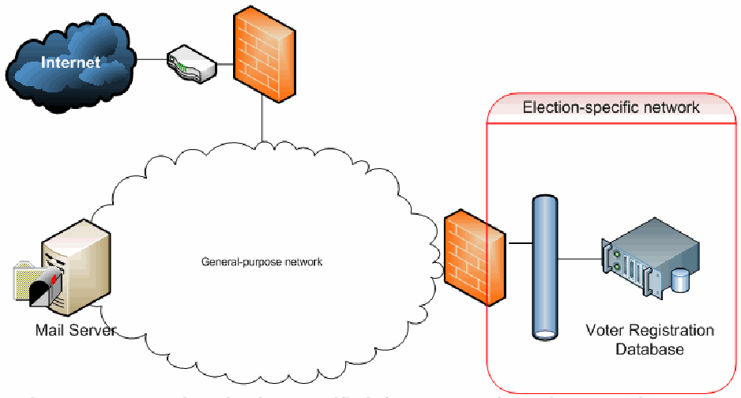
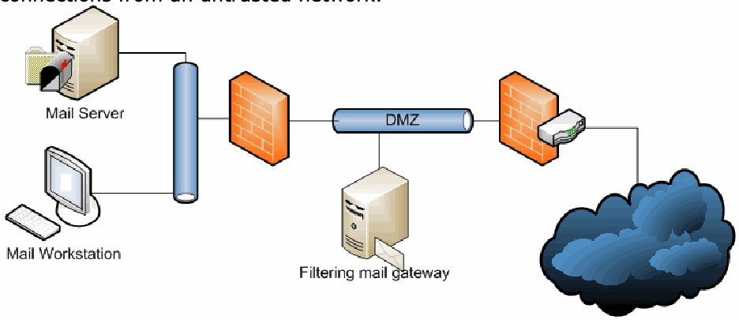
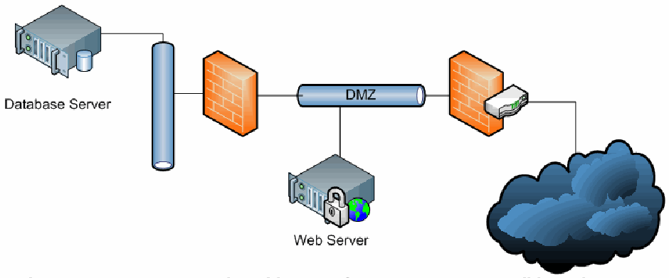

NIST IR 7711 日本語訳
英語タイトル : Security Best Practices for the Electronic Transmission of Election Materials for UOCAVA Voters日本語タイトル : UOCAVA 有権者向け選挙資料の電子的伝送に関するセキュリティのベストプラクティス
公開日 : 2011-09-15
原文URL : https://csrc.nist.gov/pubs/ir/7711/final
翻訳編集 : 自動生成（有志による非公式の日本語訳）, 原文取得日 : 2026-10-31, 訳文 : 544 / 546 ブロック
[要約] NIST IR 7711 は、軍人および海外在住市民不在者投票法（UOCAVA）の対象となる有権者に、登録資料や白紙の投票用紙を含む選挙資料を配布する基本的なプロセスを概説する報告書です。選挙資料の電子的な配布を支える技術として、ファクス、電子メール、Web サイトなどを説明し、この伝送を保護できる技術面・手続面のセキュリティ技法を示します。目的は、UOCAVA 有権者への選挙資料の配布を改善するために使用できる現行の技術と技法について、選挙管理官に情報を提供することです。本書は UOCAVA 投票を扱う一連の NIST 文書の一部であり、姉妹文書の NISTIR 7682 は、UOCAVA 投票を支援する IT システムを構成・管理する IT 担当者向けに、一般的なコンピュータセキュリティのベストプラクティスを示しています。
NISTIR 7711
NISTIR 7711
Security Best Practices for the Electronic Transmission of Election Materials for UOCAVA Voters
UOCAVA 有権者向け選挙資料の電子的伝送に関するセキュリティのベストプラクティス
［NIST のロゴ。公的な標章のため、この非公式サイトには掲載していません。原本 PDF を参照してください。］
［NIST のロゴ。公的な標章のため、この非公式サイトには掲載していません。原本 PDF を参照してください。］
[This page intentionally left blank. ]
[このページは意図的に空白としています。]
NISTIR 7711
NISTIR 7711
Security Best Practices for the Electronic Transmission of Election Materials for UOCAVA Voters
UOCAVA 有権者向け選挙資料の電子的伝送に関するセキュリティのベストプラクティス
Andrew Regenscheid
Geoff Beier
Andrew Regenscheid
Geoff Beier
Information Technology Laboratory
National Institute of Standards and Technology
Gaithersburg, MD 20899-8930
情報技術研究所
米国国立標準技術研究所
Gaithersburg, MD 20899-8930
September 2011
2011 年 9 月
U.S. Department of Commerce
Rebecca M. Blank, Acting Secretary
米国商務省
Rebecca M. Blank 長官代行
National Institute of Standards and Technology
Patrick D. Gallagher, Under Secretary for Standards and Technology and Director
米国国立標準技術研究所
Patrick D. Gallagher、標準・技術担当商務次官兼所長
[This page intentionally left blank. ]
[このページは意図的に空白としています。]
Abstract
概要
This document outlines the basic process for the distribution of election material including registration material and blank ballots to Uniformed and Overseas Citizen Absentee Voting Act (UOCAVA) voters. It describes the technologies that can be used to support the electronic dissemination of election material along with security techniques – both technical and procedural – that can protect this transfer. The purpose of the document is to inform Election Officials about the current technologies and techniques that can be used to improve the delivery of election material for UOCAVA voters. This document is part of a series of documents that address the UOCAVA voting. The first National Institute of Standards and Technology (NIST) publication on UOCAVA voting, entitled NISTIR 7551 A Threat Analysis on UOCAVA Voting Systems, was released in December 2008. In addition to NISTIR 7551, NIST has released NISTIR 7770 Security Considerations for Remote Electronic UOCAVA Voting, Accessibility and Usability Considerations for Remote Electronic UOCAVA Voting, and NISTIR 7682 Information Systems Security Best Practices for UOCAVA-Supporting Systems.
本書は、軍人および海外在住市民不在者投票法（Uniformed and Overseas Citizen Absentee Voting Act、UOCAVA）の対象となる有権者に対して、登録資料や白紙の投票用紙を含む選挙資料を配布する基本的なプロセスを概説します。また、選挙資料の電子的な配布を支える技術と、この伝送を保護できる技術面・手続面のセキュリティ技法を説明します。本書の目的は、UOCAVA 有権者への選挙資料の配布を改善するために使用できる現行の技術と技法について、選挙管理官に情報を提供することです。本書は、UOCAVA 投票を扱う一連の文書の一部です。UOCAVA 投票に関する米国国立標準技術研究所（NIST）の最初の刊行物である NISTIR 7551 A Threat Analysis on UOCAVA Voting Systems は、2008 年 12 月に公表されました。NIST は NISTIR 7551 に加えて、NISTIR 7770 Security Considerations for Remote Electronic UOCAVA Voting、Accessibility and Usability Considerations for Remote Electronic UOCAVA Voting、および NISTIR 7682 Information Systems Security Best Practices for UOCAVA-Supporting Systems を公表しています。
Acknowledgements
謝辞
The authors of this document, Andrew Regenscheid of NIST and Geoff Beier of CygnaCom, wish to thank the state and local election officials who provided us with UOCAVA election procedures in preparation for this document. In particular, comments from Paul Miller, Matt Masterson and Carol Paquette were instrumental in the development of this document. The authors would also like to thank Russell Kasselman, Helen Purcell, Paul Lux, and the Florida Division of Elections staff. In addition, the authors wish to thank their colleagues who reviewed earlier drafts of this document, particularly Nelson Hastings, Barbara Guttman, Theresa O’Connell, and Quynh Dang.
本書の著者である NIST の Andrew Regenscheid 氏と CygnaCom の Geoff Beier 氏は、本書の作成にあたり UOCAVA の選挙手続を提供してくださった州および地方の選挙管理官に感謝します。特に、Paul Miller 氏、Matt Masterson 氏、Carol Paquette 氏からのコメントは、本書の作成において重要な役割を果たしました。また、Russell Kasselman 氏、Helen Purcell 氏、Paul Lux 氏、およびフロリダ州選挙部門の職員にも感謝します。さらに、本書の初期の草案をレビューしてくださった同僚、特に Nelson Hastings 氏、Barbara Guttman 氏、Theresa O’Connell 氏、Quynh Dang 氏に感謝します。
This document has been prepared by the National Institute of Standards and Technology (NIST) and describes research in support military and overseas voting for the Election Assistance Commission and the Technical Guidelines Development Committee. It does not represent a consensus view or recommendation from NIST, nor does it represent any policy positions of NIST.
本書は米国国立標準技術研究所（NIST）が作成したもので、選挙支援委員会および技術ガイドライン策定委員会のための、軍人・海外在住者の投票を支援する研究について述べています。本書は NIST の合意された見解や推奨を示すものではなく、NIST の政策上の立場を示すものでもありません。
Certain commercial entities, equipment, or materials may be identified in this document in order to describe an experimental procedure or concept adequately. Such identification is not intended to imply recommendation or endorsement by NIST, nor is it intended to imply that the entities, materials, or equipment are necessarily the best available for the purpose.
本書では、実験的な手順や概念を適切に説明するために、特定の商業事業者、機器、または資材を明示する場合があります。そのような明示は、NIST による推奨や支持を意味するものではなく、また、それらの事業者、資材、機器がその目的に利用可能なものの中で必ずしも最良であることを意味するものでもありません。
There may be references in this publication to other publications currently under development by NIST in accordance with its assigned statutory responsibilities. The information in this publication, including concepts and methodologies, may be used by organizations even before the completion of such companion publications. Thus, until each publication is completed, current requirements, guidelines, and procedures, where they exist, remain operative. For planning and transition purposes, organizations may wish to closely follow the development of these new publications by NIST.
本刊行物では、NIST が法令で定められた責務に従って現在策定中の他の刊行物に言及している場合があります。それらの関連刊行物が完成する前であっても、本刊行物の情報（概念や方法論を含む）を組織が利用してもよいです。したがって、各刊行物が完成するまでは、既存の要件、ガイドライン、手順がある場合は、それらが引き続き有効です。計画および移行のため、組織は NIST によるこれらの新しい刊行物の策定状況を注意深く追うことを検討してもよいです。
Table of Contents
目次
1 Introduction
1 はじめに
To support State and local election officials in carrying out their responsibilities under the Uniformed and Overseas Citizens Absentee Voting Act (UOCAVA), the Election Assistance Commission (EAC) requested that the National Institute of Standards and Technology (NIST) develop security best practices to assist jurisdictions wishing to use electronic means to send or receive voter registration materials and ballot requests, or to distribute blank ballots to overseas and military voters. Many jurisdictions across the country already use electronic mail and fax for these purposes, and some jurisdictions have begun to use Web sites to distribute or collect this information.
軍人および海外在住市民不在者投票法（UOCAVA）に基づく責務を州および地方の選挙管理官が果たすことを支援するため、選挙支援委員会（Election Assistance Commission、EAC）は、有権者登録資料や投票用紙請求書を電子的な手段で送受信したり、海外在住者や軍人の有権者に白紙の投票用紙を配布したりしようとする管轄区域を支援するセキュリティのベストプラクティスを策定するよう、米国国立標準技術研究所（NIST）に要請しました。全国の多くの管轄区域では、すでにこれらの目的で電子メールとファクスを使用しており、一部の管轄区域では、この情報を配布または収集するために Web サイトの利用を始めています。
1.1 Background
1.1 背景
In December 2008, NIST released NISTIR 7551, A Threat Analysis on UOCAVA Voting Systems [1], which documents the threats to UOCAVA voting systems using electronic technologies for all aspects of the overseas voting process. NISTIR 7551 identifies a number of threats to using electronic technologies to obtain voter registration materials, deliver blank ballots, or return cast ballots, emphasizing the need for implementing strong and comprehensive security controls to mitigate the identified threats. That report concluded that existing widely deployed technology can be used to safely expedite the transmission of voter registration and ballot request materials, as well as blank ballots.
2008 年 12 月、NIST は NISTIR 7551, A Threat Analysis on UOCAVA Voting Systems [1] を公表しました。これは、海外在住者の投票プロセスのあらゆる側面で電子技術を使用する UOCAVA 投票システムに対する脅威を文書化したものです。NISTIR 7551 は、有権者登録資料の入手、白紙の投票用紙の送付、記入済みの投票用紙の返送に電子技術を使用する場合の数多くの脅威を特定しており、特定された脅威を緩和するために、強力で包括的なセキュリティ管理策を実装する必要があることを強調しています。同報告書は、広く導入されている既存の技術を使えば、有権者登録資料や投票用紙請求資料、および白紙の投票用紙の伝送を安全に迅速化できると結論づけました。
1.2 Purpose and Scope
1.2 目的と適用範囲
This document first outlines the basic process for the distribution of election material including registration material and blank ballots to UOCAVA voters. It then describes the technologies that can be used to support the electronic dissemination of election material along with security techniques – both technical and procedural – that can protect this transfer. The purpose of the document is to inform Election Officials about the current technologies and techniques that can be used to improve the delivery of election material for UOCAVA voters.
本書はまず、登録資料や白紙の投票用紙を含む選挙資料を UOCAVA 有権者に配布する基本的なプロセスを概説します。次に、選挙資料の電子的な配布を支える技術と、この伝送を保護できる技術面・手続面のセキュリティ技法を説明します。本書の目的は、UOCAVA 有権者への選挙資料の配布を改善するために使用できる現行の技術と技法について、選挙管理官に情報を提供することです。
This document provides security best practices for the delivery and receipt of documents such as voter registration applications and absentee ballot request forms, and the distribution of blank ballots to overseas and military voters using electronic mail or Web sites. It does not address remote electronic voting systems or the electronic return of cast ballots.
本書は、有権者登録申請書や不在者投票請求書式などの文書の送受信、および電子メールまたは Web サイトを使用した海外在住者・軍人の有権者への白紙の投票用紙の配布について、セキュリティのベストプラクティスを示します。遠隔電子投票システムや、記入済みの投票用紙の電子的な返送は扱いません。
This document is part of a series of documents that address UOCAVA voting. In addition to NISTIR 7551, NIST has released NISTIR 7682 Information Systems Security Best Practices for UOCAVA-Supporting Systems [2]. NISTIR 7682 is a companion document to this document, NISTIR 7711. While this document covers security best practices and considerations for electronic transmission of UOCAVA election materials for election officials, NISTIR 7682 provides general computer security best practices for IT professionals charged with configuring and administering IT systems used to support UOCAVA voting. Jurisdictions should consult NISTIR 7682, and other NIST computer security guidelines, for general computer security best practices prior to deploying and using an IT system to support voter registration, ballot request, and blank ballot delivery activities. The best practices in this document are intended to extend, not override, the best practices in NISTIR 7682.
本書は、UOCAVA 投票を扱う一連の文書の一部です。NIST は NISTIR 7551 に加えて、NISTIR 7682 Information Systems Security Best Practices for UOCAVA-Supporting Systems [2] を公表しています。NISTIR 7682 は、本書 NISTIR 7711 の関連文書です。本書は、選挙管理官向けに、UOCAVA 選挙資料の電子的伝送に関するセキュリティのベストプラクティスと考慮事項を扱います。一方、NISTIR 7682 は、UOCAVA 投票を支援する IT システムの構成と管理を担当する IT 専門家向けに、一般的なコンピューターセキュリティのベストプラクティスを示します。管轄区域は、有権者登録、投票用紙請求、白紙投票用紙の送付に関する活動を支援する IT システムを導入して使用する前に、一般的なコンピューターセキュリティのベストプラクティスについて NISTIR 7682 およびその他の NIST コンピューターセキュリティガイドラインを参照すべきです。本書のベストプラクティスは、NISTIR 7682 のベストプラクティスを拡張するものであり、上書きするものではありません。
In addition to these security-focused documents, NIST released a document highlighting important human factors issues in UOCAVA voting systems, Accessibility and Usability Considerations for Remote Electronic UOCAVA Voting, in 2011 [23].
これらのセキュリティに重点を置いた文書に加えて、NIST は 2011 年に、UOCAVA 投票システムにおける重要なヒューマンファクターの課題を取り上げた文書 Accessibility and Usability Considerations for Remote Electronic UOCAVA Voting を公表しました [23]。
Jurisdictions seeking best practices related to election management, including election management for UOCAVA voting, should consult the EAC’s Election Management Best Practices document [28], as well as their existing best practices for facilitating UOCAVA voting [29].
UOCAVA 投票の選挙管理を含む選挙管理に関するベストプラクティスを求める管轄区域は、EAC の Election Management Best Practices 文書 [28] および UOCAVA 投票を円滑に進めるための既存のベストプラクティス [29] を参照すべきです。
1.3 Audience
1.3 対象読者
The intended audience for this document is election officials who are considering the use of electronic mail or Web sites to expedite transmission of voter registration materials and blank ballots. Readers are expected to consider this information within the framework of state and local election procedures and regulations. Only a basic understanding of information technology is required.
本書が想定する読者は、有権者登録資料や白紙の投票用紙の伝送を迅速化するために電子メールや Web サイトの使用を検討している選挙管理官です。読者は、この情報を州および地方の選挙手続や規則の枠組みの中で検討することが期待されます。情報技術に関する基本的な理解があれば足ります。
These best practices may also be useful to IT support staff charged with deploying, configuring, or maintaining the IT systems used to support the UOCAVA voting related activities described in this document, as well as system developers designing systems for these activities. As jurisdictions begin to deploy electronic delivery mechanisms alongside existing postal delivery mechanisms, previous decisions on appropriate policies and procedures for protecting election information may have to be reevaluated. This document identifies some of these issues that may come up when deploying a new system. As this document is primarily intended for election officials, many technical details are left out of this document. The primary resource for technical computer security best practices is Draft NISTIR 7682 [2], along with NIST’s existing collection of cyber security standards and guidelines.
これらのベストプラクティスは、本書に記載された UOCAVA 投票関連の活動を支援する IT システムの導入、構成、保守を担当する IT 支援スタッフや、これらの活動向けのシステムを設計するシステム開発者にも役立つ場合があります。管轄区域が従来の郵送による送付の仕組みと並行して電子的な送付の仕組みを導入し始めると、選挙情報を保護するための適切な方針や手順に関するこれまでの決定を再評価する必要が生じる場合があります。本書は、新しいシステムを導入する際に生じうるこうした課題の一部を示します。本書は主に選挙管理官を対象としているため、技術的な詳細の多くは省いています。技術的なコンピューターセキュリティのベストプラクティスに関する主要な情報源は、NIST の既存のサイバーセキュリティ標準・ガイドライン群とあわせて、Draft NISTIR 7682 [2] です。
1.4 Organization
1.4 構成
Section 2 provides an overview of the types of election materials that jurisdictions may wish to send to voters by electronic means, and describes what information is provided in this document to facilitate the secure and reliable transmission of those materials to overseas and military voters. It also provides high-level descriptions of the two Internet-based transmission methods that are considered in this document, electronic mail and Web sites.
第 2 章は、管轄区域が電子的な手段で有権者に送付したいと考える選挙資料の種類を概観し、それらの資料を海外在住者や軍人の有権者へ安全かつ確実に伝送するために、本書がどのような情報を提供するかを説明します。また、本書で検討する 2 つのインターネットベースの伝送方法、すなわち電子メールと Web サイトを高い水準で説明します。
Section 3 discusses security best practices for sending or receiving voter registration and ballot request materials via fax, electronic mail or Web sites. The section emphasizes the importance of protecting sensitive personally identifiable information that may be recorded or stored by the system, and discusses items that jurisdictions should consider on the issue of voter authentication.
第 3 章は、ファクス、電子メール、または Web サイトを介して有権者登録資料や投票用紙請求資料を送受信する際のセキュリティのベストプラクティスを論じます。この章は、システムが記録または保存しうる機微な個人識別情報を保護することの重要性を強調し、有権者の認証の問題に関して管轄区域が考慮すべき事項を論じます。
Section 4 covers security best practices for using fax, electronic mail and Web sites to deliver blank ballots to overseas and military voters. The section discusses issues that jurisdictions must consider before deploying electronic ballot delivery systems, including ballot control and tracking, and if voter authentication is required prior to serving ballots. This section also considers the use of e-mail to deliver printable ballots, posting blank ballots on Web sites for voters to download, and the use of online ballot markers.
第 4 節は、海外在住者や軍人の有権者に白紙の投票用紙を送付するためにファクス、電子メール、Web サイトを使用する際のセキュリティのベストプラクティスを扱います。この節は、電子的な投票用紙送付システムを導入する前に管轄区域が考慮しなければならない課題を論じます。これには、投票用紙の管理と追跡、および投票用紙を提供する前に有権者の認証が必要かどうかが含まれます。また、この節は、印刷可能な投票用紙を送付するための電子メールの使用、有権者がダウンロードできるように白紙の投票用紙を Web サイトに掲載すること、およびオンライン投票用紙記入ツールの使用についても検討します。
This document includes two appendices that provide an election officials and staff with an introduction to key computer security processes. This information is similar to the material covered in Draft NISTIR 7682, but written for election officials rather than system administrators and IT staff. A basic understanding of these processes will help election officials manage their staff, and ensure that policy decisions are made and key activities are performed by the proper staff members. Appendix A provides a brief overview of general computer security best practices that jurisdictions should follow, mainly from a process perspective. Appendix B provides an overview of technical controls for protecting IT systems used to support UOCAVA voting.
本書には、選挙管理官とスタッフに主要なコンピューターセキュリティのプロセスを紹介する 2 つの付録があります。この情報は Draft NISTIR 7682 で扱われている内容と似ていますが、システム管理者や IT スタッフではなく、選挙管理官向けに書かれています。これらのプロセスの基本を理解しておくと、選挙管理官がスタッフを管理し、方針の決定や主要な活動が適切なスタッフによって行われるようにするうえで役立ちます。付録 A は、管轄区域が従うべき一般的なコンピューターセキュリティのベストプラクティスを、主にプロセスの観点から簡潔に概説します。付録 B は、UOCAVA 投票を支援する IT システムを保護するための技術的管理策を概説します。
2 Overview
2 概要
2.1 Types of Election Materials
2.1 選挙資料の種類
Electronic transmission methods can be used to deliver election materials at all stages of the election process. This section outlines different types of election materials that jurisdictions may wish to deliver to their uniformed and overseas voters using fax, electronic mail or Web sites, and highlights some issues regarding security controls needed to keep information confidential and unmodified.
電子的な伝送方法は、選挙プロセスのあらゆる段階で選挙資料を送付するために使用できます。この節は、管轄区域が軍人や海外在住の有権者にファクス、電子メール、Web サイトを使って送付したいと考える選挙資料のさまざまな種類を概説し、情報の機密性を保ち改変されないようにするために必要なセキュリティ管理策に関するいくつかの課題を取り上げます。
2.1.1 Dissemination of Election Information Materials
2.1.1 選挙情報資料の配布
Jurisdictions often make announcements reminding voters of upcoming elections, or asking them to ensure their voter registration information is up to date. They may also disseminate sample ballots and information explaining questions that will appear on the ballot, such as a bond issue.
管轄区域は、今後の選挙を有権者に思い出してもらったり、有権者登録情報を最新にするよう求めたりするお知らせを、しばしば出します。また、見本の投票用紙や、公債発行などの投票用紙に記載される設問を説明する情報を配布することもあります。
The same message may be provided to all voters. In such cases, the information in the announcement is considered public information and therefore is not sensitive. This document will not discuss best practices for the distribution of these election information materials. However, ensuring the availability and reliability of the systems used to disseminate this information is important, and jurisdictions are directed to NISTIR 7682, Information System Security Best Practices for UOCAVA Supporting Systems [2], for information on security best practices to guard against accidental or malicious threats to system availability.
同じメッセージがすべての有権者に提供される場合があります。そのような場合、お知らせの情報は公開情報とみなされるため、機微ではありません。本書は、これらの選挙情報資料の配布に関するベストプラクティスを論じません。ただし、この情報の配布に使用するシステムの可用性と信頼性を確保することは重要であり、偶発的または悪意のある脅威からシステムの可用性を守るためのセキュリティのベストプラクティスについては、NISTIR 7682, Information System Security Best Practices for UOCAVA Supporting Systems [2] を参照するよう、管轄区域に案内します。
In some cases, announcements to voters may be personalized, particularly in the case of personalized e-mail messages to registered voters. For instance, an e-mail requesting that UOCAVA voters update their voter registration information may be personalized with the mailing address on file for each voter. Such communications should be treated as any other transmission of voter registration materials (see Section 2.1.2 for further discussion on voter registration and ballot request). In other cases, jurisdictions should consider the sensitivity of the personalized information on each communication when determining if additional security precautions should be taken.
場合によっては、有権者へのお知らせが個人向けに作成されることがあります。特に、登録済みの有権者への個人向け電子メールメッセージの場合がそうです。たとえば、UOCAVA 有権者に有権者登録情報の更新を求める電子メールは、各有権者について登録されている郵送先住所を差し込んで個人向けに作成されることがあります。このような通信は、有権者登録資料の他の伝送と同様に扱うべきです（有権者登録と投票用紙請求の詳細は第 2.1.2 節を参照）。それ以外の場合、管轄区域は、追加のセキュリティ上の予防措置を講じるべきかどうかを判断する際に、各通信に含まれる個人向け情報の機微性を考慮すべきです。
2.1.2 Distribution and Receipt of Voter Registration/Ballot Request Forms
2.1.2 有権者登録／投票用紙請求書式の配布と受領
In most jurisdictions, overseas and military voters must register in the jurisdiction where they are eligible to vote absentee in order to be qualified to vote in future elections, although some jurisdictions waive registration for military voters. A common method for voters to submit this information is the Federal Post Card Application (FPCA) [4], a standard federal form that all states are required to accept. In addition, each state has its own registration form that reflects its specific registration requirements. Both the state specific forms and the FPCA request the following information from voters: name, date of birth, sex, race, home address and political party preference. They also ask for various forms of contact information, including telephone number, fax number, e-mail address, and mailing address. The FPCA provides a field for a complete Social Security number and a field for a state driver’s license number or other state identification number. The FPCA instructions for most states require only the last four digits of the Social Security number. This information is a matter of public record, and state law dictates both which fields may be shared upon request as well as how requestors may use that information. Both the FPCA and state specific forms typically require a wet signature. Signatures, Social Security Numbers and driver’s license numbers are typically considered to be protected information that cannot be publicly released.
ほとんどの管轄区域では、海外在住者や軍人の有権者は、将来の選挙で投票資格を得るために、不在者投票を行う資格のある管轄区域で登録しなければなりません。ただし、軍人の有権者については登録を免除する管轄区域もあります。有権者がこの情報を提出する一般的な方法は連邦郵便葉書申請書（Federal Post Card Application、FPCA）[4] で、これはすべての州が受理することを義務づけられている標準の連邦書式です。加えて、各州には、その州固有の登録要件を反映した独自の登録書式があります。州固有の書式と FPCA はいずれも、有権者に次の情報を求めます。氏名、生年月日、性別、人種、住所、支持政党です。また、電話番号、ファクス番号、電子メールアドレス、郵送先住所など、さまざまな連絡先情報も求めます。FPCA には、社会保障番号の全桁を記入する欄と、州の運転免許証番号またはその他の州の身分証明番号を記入する欄があります。ほとんどの州の FPCA の記入要領では、社会保障番号の下 4 桁のみが必要とされています。この情報は公的記録であり、どの欄を請求に応じて共有できるか、また請求者がその情報をどのように使用できるかは、州法で定められています。FPCA と州固有の書式はいずれも、通常、自筆の署名を必要とします。署名、社会保障番号、運転免許証番号は、通常、公開できない保護対象の情報とみなされます。
Blank FPCA and state specific registration and absentee ballot request forms are publicly available for downloading from multiple websites and do not require any special protections for electronic transmission. However, Social Security numbers, other official identification numbers, and original signatures require protection from unauthorized disclosure or modification when completed forms are being returned to jurisdictions either by mail or electronically. Section 3 will identify issues that jurisdictions should consider when evaluating the suitability of e-mail and Web-based return of these materials, and will discuss security controls that jurisdictions can implement to protect this information.
白紙の FPCA および州固有の登録書式・不在者投票請求書式は、複数の Web サイトから公開ダウンロードでき、電子的な伝送のために特別な保護を必要としません。しかし、社会保障番号、その他の公的な識別番号、および原本の署名は、記入済みの書式が郵送または電子的に管轄区域へ返送される際に、不正な開示や改変から保護する必要があります。第 3 節では、これらの資料の電子メールや Web ベースでの返送が適切かどうかを評価する際に管轄区域が考慮すべき課題を特定し、この情報を保護するために管轄区域が実装できるセキュリティ管理策を論じます。
2.1.3 Blank Ballot Delivery
2.1.3 白紙投票用紙の送付
Because electronic transmission does not suffer from the same delays associated with postal mail delivery, e-mail or Web-based delivery of blank ballots can significantly reduce the round-trip transit time. Postal mail delivery to overseas locations can take significantly more time than delivery times within the United States. For example, one-way delivery through the military postal system to Middle East post offices takes at least 7-12 days [5]. Then the mail piece may have to be forwarded to the recipient’s actual location, further increasing the transit time to the voter.
電子的な伝送には郵便配達に伴う遅れがないため、電子メールまたは Web ベースでの白紙投票用紙の送付により、往復の輸送時間を大幅に短縮できます。海外への郵便配達には、米国内での配達時間よりはるかに長い時間がかかることがあります。たとえば、軍事郵便システムを通じた中東の郵便局への片道の配達には、少なくとも 7～12 日かかります [5]。さらに、郵便物が受取人の実際の所在地に転送されなければならない場合があり、有権者に届くまでの輸送時間はいっそう長くなります。
Blank ballots typically do not contain any sensitive information that must be protected from disclosure to third parties. However, care should be taken that ballots are reliably delivered to voters without unauthorized modification that could invalidate voters’ cast ballots. Section 4 will discuss procedures and technical controls that jurisdictions can use to help ensure safe transmission of ballots.
白紙の投票用紙には、通常、第三者への開示から保護しなければならない機微な情報は含まれません。ただし、有権者が記入した投票用紙を無効にしかねない不正な改変を受けずに、投票用紙が有権者へ確実に届けられるよう、注意を払うべきです。第 4 節では、投票用紙の安全な伝送を確保するために管轄区域が用いることができる手順と技術的管理策を論じます。
Blank ballots may be accompanied by additional personalized information on the voter affidavit or the ballot return envelope. This information often takes the form of a bar-coded voter identification number, which can help jurisdictions process returned ballots more efficiently by partially automating some of the data entry steps. Some commercially available systems allow jurisdictions to send out ballots with tracking information on return envelopes or ballots. This type of return identification information is usually non-sensitive, and does not require protective mechanisms to ensure confidentiality. However, this information may benefit from integrity protections, depending on how jurisdictions will use this information. Section 4.2 discusses issues that jurisdictions should consider when employing these mechanisms to track and identify ballot materials.
白紙の投票用紙には、有権者の宣誓書や投票用紙の返送用封筒に、個人向けの追加情報が付されることがあります。この情報は、バーコード化された有権者識別番号の形をとることが多く、データ入力の一部の手順を部分的に自動化することで、管轄区域が返送された投票用紙をより効率的に処理するのに役立ちます。市販のシステムの中には、返送用封筒や投票用紙に追跡情報を付けて投票用紙を発送できるものがあります。この種の返送時の識別情報は通常、機微ではなく、機密性を確保するための保護メカニズムを必要としません。ただし、管轄区域がこの情報をどのように使用するかによっては、完全性の保護が有益な場合があります。第 4.2 節では、投票資料を追跡・識別するためにこれらのメカニズムを採用する際に、管轄区域が考慮すべき課題を論じます。
2.2 Electronic Delivery Options
2.2 電子的な送付手段
Information can be quickly and easily transmitted electronically between parties by using fax, e-mail or posting information on Web sites. While e-mail and web sites both use the same underlying communications infrastructure, the public Internet, there are important distinctions between the ways these two technologies work, and how they might be used to transmit election materials.
情報は、ファクス、電子メール、または Web サイトへの掲載によって、当事者間で迅速かつ容易に電子的に伝送できます。電子メールと Web サイトはどちらも同じ基盤の通信インフラストラクチャである公衆インターネットを使用しますが、この 2 つの技術の仕組みや、選挙資料の伝送にどのように使われうるかには重要な違いがあります。
2.2.1 Fax
2.2.1 ファクス
Many jurisdictions use fax machines to send or receive absentee voting materials. Fax machines scan a document and transmit an encoded representation of it over the telephone network to another fax machine. The receiving fax machine can decode the information and print a copy of the scanned document. Current fax machines create a digital representation of the scanned document. The digital representation is then sent over the telephone network using analog signals.
多くの管轄区域は、不在者投票資料の送受信にファクス機を使用しています。ファクス機は文書をスキャンし、その符号化した表現を電話網を通じて別のファクス機に伝送します。受信側のファクス機はその情報を復号し、スキャンされた文書のコピーを印刷できます。現在のファクス機は、スキャンした文書のデジタル表現を作成します。このデジタル表現は、アナログ信号を使って電話網上で送信されます。
There is no widely-used standard for fax encryption. Thus, information sent by fax is at risk for possible interception or modification. Jurisdictions should carefully weigh the risks of fax transmission of election materials against the possible alternatives prior to using fax to send or receive sensitive information.
ファクスの暗号化については、広く使われている標準はありません。したがって、ファクスで送信される情報は、傍受や改変の危険にさらされます。管轄区域は、機微な情報をファクスで送受信する前に、選挙資料をファクスで伝送するリスクを、考えられる代替手段と慎重に比較検討すべきです。
There are some Internet-based fax service providers that allow users to send or receive faxes over the Internet, using web sites or e-mail to send or receive faxes. These services have complex security properties depending on how they are implemented or used. This document assumes jurisdictions using fax to send or receive election information will be using traditional fax machines directly connected to a phone line. However, jurisdictions cannot prevent voters from using these online services if they accept materials by fax.
ユーザーが Web サイトや電子メールを使ってファクスを送受信し、インターネット経由でファクスを送受信できるようにするインターネットベースのファクスサービスプロバイダーがあります。これらのサービスのセキュリティ特性は、実装方法や使い方によって複雑です。本書は、選挙情報をファクスで送受信する管轄区域が、電話回線に直接接続された従来のファクス機を使用することを前提としています。ただし、ファクスによる資料を受け付ける場合、管轄区域は有権者がこれらのオンラインサービスを使用することを妨げることはできません。
2.2.2 Electronic Mail
2.2.2 電子メール
2.2.2.1 Overview and Description
2.2.2.1 概要と説明
E-mail allows an individual to send text and/or files from one computer to another. E-mail is transmitted from the sender’s computer to his or her mail server (often operated by his or her Internet Service Provider (ISP)), and routed through a series of intermediate servers and Internet routers before being delivered to the recipient’s mail server (often operated by an ISP, workplace or a commercial e-mail service provider such as Gmail or Yahoo).
電子メールを使うと、個人があるコンピューターから別のコンピューターにテキストやファイルを送ることができます。電子メールは、送信者のコンピューターからその人のメールサーバー（多くの場合、インターネットサービスプロバイダー（ISP）が運営）に送信され、一連の中継サーバーとインターネットルーターを経由して、受信者のメールサーバー（多くの場合、ISP、職場、または Gmail や Yahoo などの商用電子メールサービスプロバイダーが運営）に配信されます。
An e-mail sent from an election official passes through the jurisdiction’s e-mail server, which is typically under the control of the local jurisdiction. The e-mail passes over the Internet, typically unencrypted, to a server controlled by the voter’s e-mail service provider. In many cases, e-mail must pass through the public Internet once again to reach the voter, as many users have e-mail hosted by someone other than their Internet Service Provider (ISP). This connection may or may not be encrypted, depending on the voter’s e-mail provider.
選挙管理官から送信された電子メールは、通常は管轄区域のローカルな管理下にある、管轄区域のメールサーバーを通ります。その電子メールは、通常は暗号化されないままインターネットを通り、有権者の電子メールサービスプロバイダーが管理するサーバーに届きます。多くの場合、電子メールは有権者に届くまでにもう一度公衆インターネットを通らなければなりません。多くのユーザーは、インターネットサービスプロバイダー（ISP）以外が提供する電子メールを使っているためです。この接続は、有権者の電子メールプロバイダーによって、暗号化されている場合もあれば、されていない場合もあります。
Just as mailed forms and ballots may be lost or delivered to a no longer valid address, e-mailed materials may not reach the intended voter. In many cases, senders will receive notification if the e-mail server of the recipient does not accept the message. Such an error may happen if the e-mail account is no longer active. However, just as election officials have no way of knowing if voters open election-related mail, they have no way of verifying that e-mails have been read by voters. While some e-mail clients support read-receipts, which are a way to request that the recipient send notification to the sender when an e-mail is read, these receipts are not widely supported in web-based e-mail clients and individuals typically must opt to send a reply. Consequently, the usefulness of read receipts for delivery confirmation may be limited.
郵送された書式や投票用紙が紛失したり、すでに有効でない住所に配達されたりするのと同様に、電子メールで送られた資料も、意図した有権者に届かない場合があります。多くの場合、受信者のメールサーバーがメッセージを受け付けないと、送信者に通知が届きます。このようなエラーは、電子メールのアカウントがすでに使われていない場合に起こりえます。しかし、選挙管理官には、有権者が選挙関連の郵便物を開封したかどうかを知る方法がないのと同様に、有権者が電子メールを読んだかどうかを確認する方法もありません。電子メールクライアントの中には、電子メールが読まれたときに受信者から送信者へ通知を送るよう要求する方法である開封確認に対応しているものがありますが、Web ベースの電子メールクライアントではこの確認はあまり対応されておらず、個人が通常は返信を送ることを自分で選択しなければなりません。その結果、開封確認を配達確認に使うことの有用性は限られる場合があります。
As commonly implemented, e-mails are typically sent without cryptographic protections such as encryption or signing. As such, e-mails may be intercepted, read, and potentially modified as they are sent between election officials and voters. This is similar to the threat of mailed registration materials and ballots being delivered through the postal mail, which also has limited protective mechanisms. A key difference between these threats is scale; an individual with the necessary technical skills may be able to intercept a large number of e-mails, while relatively few postal workers may be in a position to intercept a large number of mailed election materials. E-mail appears relatively more vulnerable to interception of messages compared to postal mail, where there are well-established legal penalties for tampering or intercepting mail.
一般的な実装では、電子メールは通常、暗号化や署名などの暗号による保護なしで送信されます。このため、電子メールは、選挙管理官と有権者の間で送信される途中で、傍受され、読まれ、場合によっては改変される可能性があります。これは、郵便で配達される登録資料や投票用紙が傍受される脅威と似ており、郵便にも保護メカニズムは限られています。これらの脅威の重要な違いは規模です。必要な技術的スキルを持つ個人であれば多数の電子メールを傍受できるかもしれませんが、郵送された選挙資料を大量に傍受できる立場にある郵便職員は比較的わずかです。郵便物の改ざんや傍受に対する法的罰則が確立している郵便と比べると、電子メールはメッセージの傍受に対して比較的脆弱であるように見えます。
Election officials considering the use of e-mail transmission of election materials should carefully consider the security limitations of e-mail and the availability of alternative delivery methods. Sensitive information sent over e-mail could be intercepted, read, and modified in transit. Sensitive information should not be sent over e-mail when suitable alternatives are available. E-mails can be easily forged to make it look like it was sent from another individual. These threats are not unique to e-mail, but could potentially be done on a larger scale than was possible with election materials mailed through the postal system. Election officials should consider the sensitivity of the information, the level of risk that it could be intercepted or modified, and the availability of suitable alternative delivery methods before using e-mail to transmit election materials.
選挙資料の電子メール伝送の使用を検討する選挙管理官は、電子メールのセキュリティ上の限界と、代替の送付方法が利用できるかどうかを慎重に検討すべきです。電子メールで送られた機微な情報は、伝送中に傍受され、読まれ、改変される可能性があります。適切な代替手段が利用できる場合、機微な情報を電子メールで送るべきではありません。電子メールは、他の個人から送られたように見せかけて容易に偽造できます。これらの脅威は電子メールに固有のものではありませんが、郵便システムで郵送される選挙資料の場合よりも大きな規模で行われる可能性があります。選挙管理官は、選挙資料の伝送に電子メールを使用する前に、情報の機微性、傍受や改変のリスクの水準、および適切な代替の送付方法が利用できるかどうかを検討すべきです。
•Registration and Ballot Request Materials: A typical application of e-mail in the UOCAVA voting process is to e-mail attachments (see Section 2.2.2.3) containing blank voter registration forms to voters (e.g., FPCAs), or receive completed forms from voters. Section 3.4 describes security best practices for e-mail transmission of voter registration and ballot request materials.
•登録資料および投票用紙請求資料: UOCAVA 投票プロセスにおける電子メールの典型的な用途は、白紙の有権者登録書式（FPCA など）を含む添付ファイル（第 2.2.2.3 節を参照）を電子メールで有権者に送ること、または記入済みの書式を有権者から受け取ることです。第 3.4 節では、有権者登録資料と投票用紙請求資料の電子メール伝送に関するセキュリティのベストプラクティスを説明します。
•Blank Ballots: E-mail is currently being used by many jurisdictions to send blank ballots to voters. Section 4.4 describes security best practices for e-mail transmission of blank ballots.
•白紙の投票用紙: 現在、多くの管轄区域が、有権者に白紙の投票用紙を送るために電子メールを使用しています。第 4.4 節では、白紙の投票用紙の電子メール伝送に関するセキュリティのベストプラクティスを説明します。
2.2.2.2 E-mail Error Messages
2.2.2.2 電子メールのエラーメッセージ
Incoming and outgoing mail servers may send error messages to the e-mail sender or originator in the event of some type of error. These take the form of e-mails from the sender or recipient’s e-mail server. Election officials that send e-mails to voters should be familiar with typical e-mail error messages, but the absence of an error message does not necessarily mean that an e-mail was properly received by the intended recipient.
受信側および送信側のメールサーバーは、何らかのエラーが発生した場合に、電子メールの送信者または発信者にエラーメッセージを送ることがあります。これらは、送信者または受信者のメールサーバーからの電子メールの形をとります。有権者に電子メールを送る選挙管理官は、典型的な電子メールのエラーメッセージに精通しているべきですが、エラーメッセージがないからといって、電子メールが意図した受信者に正しく受信されたとは限りません。
E-mails can fail to be properly delivered to a recipient for a variety of reasons. These include:
電子メールは、さまざまな理由で受信者に正しく配信されないことがあります。次のような場合があります。
•The intended recipient’s e-mail address is not recognized (e.g., the intended e-mail account does not exist, the address was mistyped, etc.).
•意図した受信者の電子メールアドレスが認識されません（たとえば、意図した電子メールアカウントが存在しない、アドレスが誤入力されたなど）。
•The outgoing e-mail server is unable to send e-mails due to a loss of communications or a malfunction.
•通信の途絶または故障のため、送信側のメールサーバーが電子メールを送信できません。
•The recipient’s e-mail server cannot be contacted.
•受信者のメールサーバーに接続できません。
•The intended recipient’s e-mail folder is full, and the server will not accept additional e-mails.
•意図した受信者の電子メールフォルダーがいっぱいで、サーバーが追加の電子メールを受け付けません。
•The outgoing e-mail server, or the recipient’s e-mail server, detected a virus or classified the e-mail as spam.
•送信側のメールサーバーまたは受信者のメールサーバーが、ウイルスを検出したか、その電子メールをスパムに分類しました。
•The e-mail is too large (e.g., due to a large attachment) for either the outgoing e-mail server, or the recipient’s e-mail server.
•電子メールが大きすぎる（たとえば、大きな添付ファイルのため）ために、送信側のメールサーバーまたは受信者のメールサーバーが扱えません。
Election officials should read error e-mail messages in their entirety to determine what additional steps to take. For instance, if the outgoing or recipient’s e-mail server is down temporarily, the issue may be resolved on its own. However, if the error message indicates that a message was not delivered, the official should attempt to identify the source of the problem. The error message may reveal a technical problem that can be remedied, such as a problem with the e-mail server or a simple mistake, allowing the e-mail to be resent. If the problem cannot be remedied, election officials should apply the same procedures used by the jurisdiction when it has evidence that a mailed ballot did not reach its destination.
選挙管理官は、エラーの電子メールメッセージを最後まで読み、追加でどのような手順を取るべきかを判断すべきです。たとえば、送信側または受信者のメールサーバーが一時的に停止している場合は、問題がひとりでに解決することがあります。しかし、エラーメッセージがメッセージが配信されなかったことを示している場合、担当者は問題の原因を特定しようと試みるべきです。エラーメッセージから、メールサーバーの問題や単純な誤りなど、是正できる技術的な問題が明らかになり、電子メールを再送できる場合があります。問題を是正できない場合、選挙管理官は、郵送された投票用紙が宛先に届かなかった証拠がある場合に管轄区域が用いるのと同じ手順を適用すべきです。
Election officials should be aware that some e-mail error messages are sent to the intended recipient, not the sender. For example, if an e-mail is filtered by the recipient’s e-mail server due to a detected virus, often that server will only send the error message to the recipient.
選挙管理官は、電子メールのエラーメッセージの中には、送信者ではなく意図した受信者に送られるものがあることを認識しておくべきです。たとえば、検出されたウイルスのために電子メールが受信者のメールサーバーによってフィルタリングされた場合、そのサーバーは多くの場合、エラーメッセージを受信者にだけ送ります。
2.2.2.3 Attachments
2.2.2.3 添付ファイル
E-mail messages are text-based, but can include one or more files as attachments. While text-based e-mails are usually relatively small, e-mails containing attachments can be quite large. Depending on the attachment, an e-mail could become large for the sender’s or recipient’s e-mail server. In most cases, e-mails under 2MB) will be transmitted and accepted by e-mail servers.
電子メールメッセージはテキストベースですが、1 つ以上のファイルを添付ファイルとして含めることができます。テキストベースの電子メールは通常は比較的小さいものの、添付ファイルを含む電子メールはかなり大きくなることがあります。添付ファイルによっては、送信者または受信者のメールサーバーにとって電子メールが大きくなりすぎる場合があります。ほとんどの場合、2MB 未満の電子メールはメールサーバーによって伝送され、受け付けられます。
E-mail servers often scan attachments for viruses, and some e-mail servers will reject e-mails containing attachments of certain file types that often contain viruses. In most cases this should not be an issue for jurisdictions, as typical file types (e.g., .DOC, .PDF, .RTF, .JPG) will be accepted.
メールサーバーは添付ファイルのウイルスを検査することが多く、ウイルスを含むことの多い特定の種類のファイルが添付された電子メールを拒否するメールサーバーもあります。ほとんどの場合、典型的なファイル形式（.DOC、.PDF、.RTF、.JPG など）は受け付けられるため、管轄区域にとってこれは問題にならないはずです。
2.2.2.4 E-mail Encryption and Signing
2.2.2.4 電子メールの暗号化と署名
E-mail can be cryptographically protected using encryption or digital signatures. E-mail encryption protects e-mails from being read by unauthorized parties, while e-mail signing allows recipients to verify the origin and integrity of the message. The most widely-used standard for e-mail encryption and signing is called Secure/Multipurpose Internet Mail Extensions (S/MIME) [7], which is described further in NISTIR 7682, Information System Security Best Practices for UOCAVA Supporting Systems and NIST SP 800-45, Guidelines on Electronic Mail Security [9].
電子メールは、暗号化またはデジタル署名を使って暗号により保護できます。電子メールの暗号化は、電子メールが権限のない当事者に読まれることを防ぎ、電子メールの署名は、受信者がメッセージの出所と完全性を検証できるようにします。電子メールの暗号化と署名で最も広く使われている標準は Secure/Multipurpose Internet Mail Extensions（S/MIME）[7] で、NISTIR 7682, Information System Security Best Practices for UOCAVA Supporting Systems および NIST SP 800-45, Guidelines on Electronic Mail Security [9] でさらに説明されています。
Jurisdictions may receive digitally signed e-mails from UOCAVA voters, particularly from military voters using their Department of Defense e-mail accounts. The contents of these e-mails can generally be read without any specific e-mail software, but additional measure must be taken to verify the digital signatures on these messages. Jurisdictions that wish to verify the signatures from military voters need to use an e-mail client that supports S/MIME and will need to install the trust anchor for the US Department of Defense Root Certificate Authority. Configuring e-mail clients to receive and verify S/MIME signed e-mails is covered in Section 5 of NISTIR 7682.
管轄区域は、UOCAVA 有権者から、特に国防総省の電子メールアカウントを使用する軍人の有権者から、デジタル署名された電子メールを受け取ることがあります。これらの電子メールの内容は、通常、特別な電子メールソフトウェアなしで読めますが、これらのメッセージのデジタル署名を検証するには追加の措置を講じなければなりません。軍人の有権者の署名を検証したい管轄区域は、S/MIME に対応した電子メールクライアントを使用する必要があり、米国国防総省のルート認証局のトラストアンカーをインストールする必要があります。S/MIME 署名付き電子メールを受信して検証するための電子メールクライアントの構成は、NISTIR 7682 の第 5 節で扱われています。
Jurisdictions could also digitally sign messages they send. This also requires an e-mail client that supports S/MIME, which must be configured with a cryptographic key and a certificate that binds that key to the jurisdiction. Certificates can be purchased from commercial Certificate Authorities (CA), although only some of them issue certificates for S/MIME. Some states also run their own Certificate Authority. However, signing e-mails is only beneficial if voters have a properly-configured e-mail client that supports S/MIME, expect to receive signed emails, and know how to use the client to verify the signatures on those e-mails. As signed e-mails are not common outside of the military environment, this may not be true for overseas civilians or military personnel using personal e-mail accounts. Jurisdictions that still wish to sign e-mails should consult Section 5 of NISTIR 7682.
管轄区域は、送信するメッセージにデジタル署名することもできます。これにも S/MIME に対応した電子メールクライアントが必要で、そのクライアントには、暗号鍵と、その鍵を管轄区域に結びつける証明書を設定しなければなりません。証明書は商用の認証局（CA）から購入できますが、S/MIME 用の証明書を発行する認証局は一部のみです。独自の認証局を運用している州もあります。ただし、電子メールへの署名が有益なのは、有権者が S/MIME に対応した適切に構成された電子メールクライアントを持ち、署名付き電子メールを受け取ることを想定し、そのクライアントを使ってそれらの電子メールの署名を検証する方法を知っている場合に限られます。署名付き電子メールは軍の環境以外では一般的ではないため、海外在住の民間人や、個人の電子メールアカウントを使用する軍人にはこれが当てはまらない場合があります。それでも電子メールに署名したい管轄区域は、NISTIR 7682 の第 5 節を参照すべきです。
2.2.2.5 DomainKeys Identified Mail
2.2.2.5 DomainKeys Identified Mail
The Internet Engineering Task Force recently completed a suite of standards for DomainKeys Identified Mail (DKIM) [10]. DKIM is a limited form of e-mail authentication that allows a jurisdiction’s e-mail server to sign outgoing messages so other DKIM-aware e-mail servers can verify the integrity and origin of the message. This is typically used to protect against unsolicited e-mails, also known as spam. Individuals sending spam sometimes forge e-mails to trick recipients or to try to avoid e-mail spam filters. DKIM provides a mechanism for detecting forged e-mails, but only when the receiving e-mail server and the e-mail server for the (possibly forged) organization support DKIM.
Internet Engineering Task Force は最近、DomainKeys Identified Mail（DKIM）[10] の一連の標準を完成させました。DKIM は限定的な形態の電子メール認証で、管轄区域のメールサーバーが送信メッセージに署名することで、DKIM に対応した他のメールサーバーがメッセージの完全性と出所を検証できるようにします。これは通常、迷惑メール（スパムとも呼ばれます）から守るために使用されます。スパムを送る個人は、受信者をだますため、またはメールのスパムフィルターを回避しようとして、電子メールを偽造することがあります。DKIM は、偽造された電子メールを検出するメカニズムを提供しますが、それは受信側のメールサーバーと、（偽造されている可能性のある）組織のメールサーバーの両方が DKIM に対応している場合に限られます。
Use of DKIM by jurisdictions’ e-mail servers can help to reduce the chances that their outgoing e-mails will be marked as spam by recipients, and could help to improve their own e-mail filtering systems for spam and malware.
管轄区域のメールサーバーで DKIM を使用すると、送信メールが受信者によってスパムとして扱われる可能性を減らすのに役立ち、スパムやマルウェアに対する自らの電子メールフィルタリングシステムの改善にも役立つ場合があります。
Current best practices for jurisdictions include using DKIM to sign outgoing mail and have DKIM-aware servers to process e-mails to protect themselves from spam and malware, but should not rely on DKIM to verify the original senders of e-mails. Accepted best practices will change over time as DKIM is more widely adopted.
管轄区域の現在のベストプラクティスには、送信メールに署名するために DKIM を使用し、スパムやマルウェアから自らを守るために電子メールを処理する DKIM 対応サーバーを持つことが含まれますが、電子メールの元の送信者を検証するために DKIM に依存すべきではありません。受け入れられているベストプラクティスは、DKIM がより広く採用されるにつれて時間とともに変わっていきます。
2.2.3 Web-Sites
2.2.3 Web サイト
2.2.3.1 Overview and Description
2.2.3.1 概要と説明
Web sites are a popular method for posting information so that anyone with a Web browser can access it. Web sites can be used to host election information, voter registration forms, or blank ballots. Some jurisidictions have also used web sites to allow voters to submit voter registration information.
Web サイトは、Web ブラウザーを持つ誰もがアクセスできるように情報を掲載する一般的な方法です。Web サイトは、選挙情報、有権者登録書式、または白紙の投票用紙をホストするために使用できます。有権者が有権者登録情報を提出できるように Web サイトを使用している管轄区域もあります。
While e-mails could be lost or delivered to an invalid address, web sites allow voters to instantly access information at-will. While web sites could become unavailable due to technical difficulties or malicious attacks, they do not suffer from some of the potential delivery problems as postal mail or e-mail.
電子メールは紛失したり、無効なアドレスに配信されたりすることがありますが、Web サイトでは、有権者が情報にいつでも即座にアクセスできます。Web サイトは、技術的な不具合や悪意のある攻撃のために利用できなくなることがありますが、郵便や電子メールにあるような配達上の問題の一部は生じません。
However, just as with postal mail and e-mail, communication between a voter and a web site could be intercepted, read, or potentially modified in-transit. Wide-deployed cryptographic protections, such as Transport Layer Security (see Section 2.2.2.4) could be used to guard against many of these attacks. However, there are less sophisticated, but often just as effective, attacks that attempt to trick users into accessing the wrong web site. For example, a typical attack on the Internet called Phishing involves tricking a user into clicking on a link to a fraudulent Web site that closely mimicks the legimate site, such as copying the jurisidictions’ logos. Such attacks are very difficult to block by technical means, but can be mitigated through awareness training.
しかし、郵便や電子メールと同様に、有権者と Web サイトの間の通信も、伝送中に傍受され、読まれ、場合によっては改変される可能性があります。Transport Layer Security（第 2.2.2.4 節を参照）などの広く導入されている暗号による保護を使えば、これらの攻撃の多くから守ることができます。しかし、ユーザーをだまして誤った Web サイトにアクセスさせようとする、高度ではないものの同じくらい効果的なことが多い攻撃があります。たとえば、フィッシングと呼ばれるインターネット上の典型的な攻撃では、管轄区域のロゴをコピーするなど、正規のサイトに酷似した不正な Web サイトへのリンクをユーザーにクリックさせようとします。このような攻撃は技術的な手段で阻止することが非常に困難ですが、意識向上トレーニングによって緩和できます。
2.2.3.2 Online File Repositories
2.2.3.2 オンラインファイルリポジトリ
Web sites may be used to host election-related documents, such as voter registration and ballot request forms (e.g., FPCA) or blank ballots. These sites could be available for all visitors to the site, or access to these forms may be controlled so that only users with a password, or some other authenticator, can access the forms. While Web sites may be more expensive to deploy and use than e-mailing election materials, they do have several advantages. Notably, there are greater security protections possible for delivery of materials over Web sites than over e-mail (see Section 2.2.3.4). Security best practices for posting forms and other information on Web sites will be discussed in Sections 3.5.1 and 4.5, respectively.
Web サイトは、有権者登録書式や投票用紙請求書式（FPCA など）、白紙の投票用紙といった選挙関連の文書をホストするために使用できます。これらのサイトはサイトのすべての訪問者が利用できるようにすることも、パスワードやその他の認証器を持つユーザーだけがこれらの書式にアクセスできるように、アクセスを制御することもできます。Web サイトは、選挙資料を電子メールで送る場合よりも導入と使用に費用がかかる場合がありますが、いくつかの利点があります。特に、Web サイトを通じた資料の送付では、電子メールの場合よりも強力なセキュリティ保護が可能です（第 2.2.3.4 節を参照）。書式やその他の情報を Web サイトに掲載する際のセキュリティのベストプラクティスは、それぞれ第 3.5.1 節と第 4.5 節で論じます。
It is also possible for users to upload files to a Web site, as an alternative to e-mail. Again, an advantage to this approach is that Web-based transmission is easier to protect than e-mail transmission. Receiving voter registration or ballot request forms over Web sites will be discussed in Section 3.5.2.
電子メールの代わりに、ユーザーが Web サイトにファイルをアップロードすることも可能です。この方法にも、Web ベースの伝送は電子メール伝送よりも保護しやすいという利点があります。Web サイトを通じた有権者登録書式や投票用紙請求書式の受信は、第 3.5.2 節で論じます。
2.2.3.3 Sites with Active Content
2.2.3.3 アクティブコンテンツを持つサイト
Rather than merely posting static Web pages or documents, Web sites often include active content that run as a sort of application in users’ browsers. This could take the form of a Web-based form and javascript where a voter enters information, or a Java or Flash-based application that is downloaded by a voter’s browser and executed within the browser window.
Web サイトは、静的な Web ページや文書を掲載するだけでなく、ユーザーのブラウザー内で一種のアプリケーションとして動作するアクティブコンテンツを含むことがよくあります。これは、有権者が情報を入力する Web ベースのフォームと JavaScript の形をとることもあれば、有権者のブラウザーがダウンロードしてブラウザーウィンドウ内で実行する Java や Flash ベースのアプリケーションの形をとることもあります。
For example, a Web site supporting voter registration and ballot request could have a Web-based form that allows voters to enter their registration and contact information, and submit it to the election officials. Often Web-based forms will include some logic that advise users of mistakes, such as omitting required information such as an address or phone number. These sorts of forms are a staple of e-commerce Web sites. These forms could also be used for online ballot marking, allowing voters to record their selections on the form before printing the voted ballot for return through the mail.
たとえば、有権者登録と投票用紙請求を支援する Web サイトには、有権者が登録情報と連絡先情報を入力して選挙管理官に送信できる Web ベースのフォームがある場合があります。Web ベースのフォームには、住所や電話番号など必須の情報が抜けているといった誤りをユーザーに知らせるロジックが含まれていることがよくあります。この種のフォームは、電子商取引の Web サイトの定番です。これらのフォームは、オンラインでの投票用紙記入にも使用でき、有権者は記入済みの投票用紙を印刷して郵送で返送する前に、フォーム上で選択を記録できます。
Section 3.6 contains security best practices for receiving voter registration or ballot request information using Web sites with active content. Section 4.6 contains security best practices for using these technologies to allow voters to receive and mark a ballot electronically.
第 3.6 節には、アクティブコンテンツを持つ Web サイトを使用して有権者登録情報や投票用紙請求情報を受信する際のセキュリティのベストプラクティスを示します。第 4.6 節には、これらの技術を使って有権者が投票用紙を電子的に受け取り記入できるようにする際のセキュリティのベストプラクティスを示します。
2.2.3.4 Transport Layer Security
2.2.3.4 Transport Layer Security
Transport Layer Security (TLS) [14], and its predecessor, Secure Socket Layer (SSL), are cryptographic protocols that provide confidentiality and integrity protection for communications between a Web server and a client accessing that server. TLS and SSL are widely used on the Internet to provide a safe communications channel for sending sensitive information. For instance, nearly all e-commerce Web sites use TLS to protect any financial or transaction information sent between the server and user.
Transport Layer Security（TLS）[14] とその前身である Secure Socket Layer（SSL）は、Web サーバーとそのサーバーにアクセスするクライアントとの間の通信に、機密性と完全性の保護を提供する暗号プロトコルです。TLS と SSL は、機微な情報を送るための安全な通信チャネルを提供するため、インターネットで広く使われています。たとえば、ほぼすべての電子商取引の Web サイトは、サーバーとユーザーの間で送られる金融情報や取引情報を保護するために TLS を使用しています。
TLS is typically used with only server-side authentication, meaning that users connecting to a Web site can verify that they are communicating with the intended entity, but the Web server does not cryptographically verify the users. To be effective, TLS-enabled Web servers must have a public key signed by a commonly-trusted certificate authority. There are a number of commercial vendors for TLS certificates. However, while TLS is capable of verifying the identity of users (typically called client-side authentication), this requires users to have a public key signed by a trusted certificate authority. This typically is not the case.
TLS は通常、サーバー側の認証のみで使用されます。つまり、Web サイトに接続するユーザーは、意図した相手と通信していることを検証できますが、Web サーバーはユーザーを暗号により検証しません。有効に機能させるには、TLS 対応の Web サーバーが、広く信頼されている認証局によって署名された公開鍵を持たなければなりません。TLS 証明書を扱う商用ベンダーは数多くあります。TLS にはユーザーの身元を検証する能力（通常、クライアント側認証と呼ばれます）もありますが、そのためにはユーザーが信頼できる認証局によって署名された公開鍵を持つ必要があります。通常はそうなっていません。
TLS is an inexpensive, widely deployed and supported technology, which should be employed by any Web server that sends or receives sensitive information.
TLS は、安価で広く導入され、広く対応されている技術であり、機微な情報を送受信するすべての Web サーバーで採用すべきです。
2.3 Cryptography
2.3 暗号技術
Cryptography is the use of mathematical and computer algorithms to protect the confidentiality or integrity of information as it is stored or transmitted. Most cryptographic algorithms fall into one of two classes:
暗号技術とは、保存または伝送される情報の機密性または完全性を保護するために、数学的アルゴリズムとコンピューターアルゴリズムを使用することです。ほとんどの暗号アルゴリズムは、次の 2 つの種類のいずれかに分類されます。
•Encryption algorithms for protecting the confidentiality of information in-transit or in storage.
•伝送中または保存中の情報の機密性を保護するための暗号化アルゴリズム。
•Message authentication codes or digital signatures for establishing trust in the authenticity and integrity of information.
•情報の真正性と完全性に対する信頼を確立するためのメッセージ認証コードまたはデジタル署名。
Cryptographic algorithms are used in cryptographic protocols to provide the intended security properties. These protocols often combine several different algorithms to provide confidentiality and integrity protections. Proper use of cryptography is critical to the protecting information in computer systems. Previous sections gave some examples of the use of cryptography to protect information as it is transmitted over the Internet: e-mail encryption and signing, and the SSL/TLS protocol for protecting web sites. This section provides additional background information intended to give readers a better understanding of how cryptography can be used to protect information in UOCAVA voting systems.
暗号アルゴリズムは、意図したセキュリティ特性を提供するために、暗号プロトコルの中で使用されます。これらのプロトコルは、機密性と完全性の保護を提供するため、複数の異なるアルゴリズムを組み合わせることが多くあります。暗号技術の適切な使用は、コンピューターシステム内の情報を保護するうえで極めて重要です。前の節では、インターネットを通じて伝送される情報を保護するための暗号技術の使用例として、電子メールの暗号化と署名、および Web サイトを保護するための SSL/TLS プロトコルを挙げました。この節では、UOCAVA 投票システムの情報を保護するために暗号技術をどのように使用できるかについて、読者の理解を深めることを目的とした背景情報を追加で示します。
2.3.1 Cryptographic Confidentiality Protections
2.3.1 暗号による機密性の保護
Encryption algorithms are cryptographic algorithms that aim to protect the confidentiality of information. These algorithms scramble (encrypt) information so that it can only be unscrambled (decrypted) and read by someone with the correct key, which must be kept secret. Encryption algorithms might be used on stored data in computer systems to help ensure sensitive information is not read by unauthorized individuals. Or it might be used to protect information that is transmitted over the Internet so eavesdroppers are not able to read the data.
暗号化アルゴリズムは、情報の機密性を保護することを目的とした暗号アルゴリズムです。これらのアルゴリズムは情報をかき混ぜ（暗号化し）、秘密に保たなければならない正しい鍵を持つ者だけが、かき混ぜを元に戻し（復号し）、読めるようにします。暗号化アルゴリズムは、機微な情報が権限のない個人に読まれないようにするため、コンピューターシステム内の保存データに使用されることがあります。あるいは、盗聴者がデータを読めないようにするため、インターネットを通じて伝送される情報の保護に使用されることもあります。
Most encryption algorithms fall into one of two categories: symmetric encryption and asymmetric encryption.
ほとんどの暗号化アルゴリズムは、共通鍵暗号と公開鍵暗号の 2 つの種類のいずれかに分類されます。
•Symmetric encryption algorithms use a single secret key to encrypt and decrypt information. For that reason, it is sometimes called secret key encryption. It is most often used to encrypt information that is stored locally on a machine, or to protect information that is transmitted between two different parts of a single system. Proper key management is particularly important when using symmetric encryption algorithms. The key must be securely stored. If a symmetric encryption algorithm is used to protect information sent between two computers, users must securely load the same key on both systems, usually by manually loading the key. The two government standards for symmetric encryption algorithms are the Advanced Encryption Standard (AES) and the Triple Data Encryption Standard (TDES).
•共通鍵暗号アルゴリズムは、情報の暗号化と復号に単一の共通鍵を使用します。このため、シークレット鍵暗号と呼ばれることもあります。最も多く使われるのは、機器にローカルに保存された情報の暗号化や、単一のシステムの 2 つの異なる部分の間で伝送される情報の保護です。共通鍵暗号アルゴリズムを使用する場合は、適切な鍵管理が特に重要です。鍵は安全に保存しなければなりません。共通鍵暗号アルゴリズムを使って 2 台のコンピューター間で送られる情報を保護する場合、ユーザーは両方のシステムに同じ鍵を安全にロードしなければならず、通常は鍵を手作業でロードします。共通鍵暗号アルゴリズムに関する 2 つの政府標準は、Advanced Encryption Standard（AES）と Triple Data Encryption Standard（TDES）です。
•Asymmetric encryption algorithms use two different keys: one key to encrypt data, and one key to decrypt data. The key used to encrypt data is the public key, and can be shared with anyone. The key used to decrypt data is the private key, and must be kept secret. Because the encryption key can be freely shared, asymmetric encryption algorithms are often easier to use when two parties are communicating over the Internet. Asymmetric encryption algorithms are rarely used to encrypt content directly. Asymmetric encryption algorithms are usually used to encrypt a new key. This new key is used in a symmetric encryption algorithm to encrypt the actual content. Asymmetric encryption algorithms include algorithms such as RSA and Diffie-Hellman, and are frequently used in electronic commerce.
•公開鍵暗号アルゴリズムは、2 つの異なる鍵を使用します。1 つはデータを暗号化するための鍵、もう 1 つはデータを復号するための鍵です。データの暗号化に使う鍵は公開鍵で、誰とでも共有できます。データの復号に使う鍵は秘密鍵で、秘密に保たなければなりません。暗号化の鍵を自由に共有できるため、公開鍵暗号アルゴリズムは、2 者がインターネットを通じて通信する場合に使いやすいことが多くあります。公開鍵暗号アルゴリズムが内容を直接暗号化するために使われることはまれです。公開鍵暗号アルゴリズムは、通常、新しい鍵を暗号化するために使われます。この新しい鍵を共通鍵暗号アルゴリズムで使用して、実際の内容を暗号化します。公開鍵暗号アルゴリズムには RSA や Diffie-Hellman などのアルゴリズムがあり、電子商取引で頻繁に使用されています。
2.3.2 Cryptographic Integrity Protections
2.3.2 暗号による完全性の保護
There are several different types of cryptographic algorithms that can be used to protect the integrity of information. Notably, these include digital signatures and cryptographic message authentication codes. These algorithms primarily provide two security properties. First, they allow users to verify that the information was not changed. Second, they allow users to authenticate the originator of the information.
情報の完全性を保護するために使用できる暗号アルゴリズムには、いくつかの種類があります。特に、デジタル署名と暗号メッセージ認証コードがあります。これらのアルゴリズムは、主に 2 つのセキュリティ特性を提供します。第 1 に、情報が変更されていないことをユーザーが検証できるようにします。第 2 に、情報の作成者をユーザーが認証できるようにします。
•Digital Signature algorithms, like asymmetric encryption algorithms, use two different keys. One key is used to sign data, while the other key is used to verify signatures created using the first key. The key used to verify signed data is the public key, and can be shared with anyone. The key used to sign data must be kept secret to prevent other people from forging signatures. Digital signatures are used in many applications to provide integrity protection and to authenticate users and information.
•デジタル署名アルゴリズムは、公開鍵暗号アルゴリズムと同様に、2 つの異なる鍵を使用します。一方の鍵はデータへの署名に使用し、もう一方の鍵は、最初の鍵を使って作成された署名の検証に使用します。署名されたデータの検証に使う鍵は公開鍵で、誰とでも共有できます。データへの署名に使う鍵は、他者による署名の偽造を防ぐため、秘密に保たなければなりません。デジタル署名は、完全性の保護を提供し、ユーザーや情報を認証するために、多くのアプリケーションで使用されています。
•Message Authentication Codes, like symmetric encryption algorithms, use a single secret key to compute and verify cryptographic fingerprints. These fingerprints are somewhat similar to signatures, except only someone that knows the secret key can verify the tag. Message authentication codes are frequently used to protect information that is transmitted over the Internet from manipulation.
•メッセージ認証コードは、共通鍵暗号アルゴリズムと同様に、暗号によるフィンガープリントの計算と検証に単一の共通鍵を使用します。これらのフィンガープリントは署名にいくぶん似ていますが、共通鍵を知っている者だけがタグを検証できます。メッセージ認証コードは、インターネットを通じて伝送される情報を操作から保護するために、頻繁に使用されます。
2.3.3 Cryptographic Protocols
2.3.3 暗号プロトコル
Cryptographic algorithms are used as building blocks in cryptographic protocols. These protocols usually use a combination of cryptographic algorithms to provide a combination of confidentiality and integrity protections. For example, the S/MIME protocol uses digital signature algorithms and both symmetric and asymmetric encryption algorithms to encrypt e-mails, sign e-mails, or encrypt and sign e-mails. The TLS protocol uses all four types of cryptographic algorithms previously described to protect the confidentiality and integrity of data transmitted between users and web servers.
暗号アルゴリズムは、暗号プロトコルの構成要素として使用されます。これらのプロトコルは通常、機密性と完全性の保護を組み合わせて提供するために、複数の暗号アルゴリズムを組み合わせて使用します。たとえば、S/MIME プロトコルは、電子メールの暗号化、電子メールへの署名、または電子メールの暗号化と署名のために、デジタル署名アルゴリズムと、共通鍵および公開鍵の両方の暗号化アルゴリズムを使用します。TLS プロトコルは、ユーザーと Web サーバーの間で伝送されるデータの機密性と完全性を保護するために、先に述べた 4 種類の暗号アルゴリズムをすべて使用します。
2.3.4 Digital Certificates
2.3.4 デジタル証明書
Digital signatures and asymmetric encryption are examples of public key cryptography. These types of cryptographic algorithms require that its users have a private key that must be kept secret, and a public key that can be freely shared without a loss of security. However, there needs to be a way to securely bind the identity of a user or system to a specific public key, otherwise users would not know what public key to use when communicating with another user.
デジタル署名と公開鍵暗号は、公開鍵暗号技術の例です。これらの種類の暗号アルゴリズムでは、ユーザーが、秘密に保たなければならない秘密鍵と、セキュリティを損なうことなく自由に共有できる公開鍵を持つ必要があります。ただし、ユーザーやシステムの身元を特定の公開鍵に安全に結びつける方法が必要です。そうでなければ、ユーザーは別のユーザーと通信するときにどの公開鍵を使えばよいかわかりません。
This kind of binding is done with a digital certificate. A certificate is a record with several fields. The most important of these fields include:
この種の結びつけはデジタル証明書で行われます。証明書は、複数のフィールドを持つレコードです。これらのフィールドのうち最も重要なものは次のとおりです。
•Identifier: This field (or fields) identifies the person or system that “owns” the certificate. This person or system is known as the “subject.” For SSL/TLS, it may be a web site address. For S/MIME it may be an e-mail address. In other cases it might just be a name.
•識別子: このフィールド（複数の場合もあります）は、証明書を「所有する」人またはシステムを識別します。この人またはシステムは「サブジェクト」と呼ばれます。SSL/TLS では Web サイトのアドレスの場合があり、S/MIME では電子メールアドレスの場合があります。それ以外の場合は、単なる名前のこともあります。
•Public Key: This field contains the subject’s public key that other users should use when decrypting messages or verifying digital signatures.
•公開鍵: このフィールドには、他のユーザーがメッセージを復号したりデジタル署名を検証したりするときに使うべき、サブジェクトの公開鍵が含まれます。
•Algorithm Use: This field describes what algorithms or protocols may be used with the digital certificate.
•アルゴリズムの用途: このフィールドは、そのデジタル証明書でどのアルゴリズムまたはプロトコルを使用してよいかを記述します。
•Expiration Date: Most certificates expire after a set period of time. The duration of the certificate will depend on a number of factors, including the strength of the cryptographic algorithm and key, how the certificate will be used, and the cost of the certificate.
•有効期限: ほとんどの証明書は、一定の期間が過ぎると失効します。証明書の有効期間は、暗号アルゴリズムと鍵の強度、証明書の使い方、証明書の費用など、多くの要因によって決まります。
The information in digital certificates is digitally signed by a certificate authority. This signature is the certificate authority’s way of attesting that the individual (or system) in the identifier field is the true owner of the public key found in the certificate.
デジタル証明書の情報には、認証局がデジタル署名します。この署名は、識別子フィールドの個人（またはシステム）が、証明書に含まれる公開鍵の真の所有者であることを、認証局が証明する方法です。
Which systems require digital certificates depends upon the particular cryptographic protocol. For example, web servers using TLS/SSL need a digital certificate from a trusted certificate authority, but users who access the web site do not need to obtain their own certificates (unless the server is also cryptographically authenticating users, which is sometimes done in high-security systems). A user signing an e-mail using S/MIME must obtain a digital certificate. Signed e-mails from the user contain a copy of this certificate, allowing recipients to verify the signature. However, recipients must trust the certificate authority who issued the certificate.
どのシステムがデジタル証明書を必要とするかは、個々の暗号プロトコルによって異なります。たとえば、TLS/SSL を使用する Web サーバーは、信頼できる認証局のデジタル証明書を必要としますが、その Web サイトにアクセスするユーザーは、自分の証明書を取得する必要はありません（サーバーがユーザーも暗号により認証している場合を除きます。これは高セキュリティのシステムで行われることがあります）。S/MIME を使って電子メールに署名するユーザーは、デジタル証明書を取得しなければなりません。ユーザーからの署名付き電子メールにはこの証明書のコピーが含まれ、受信者が署名を検証できるようになっています。ただし、受信者は、その証明書を発行した認証局を信頼しなければなりません。
2.3.5 Certificate Authorities
2.3.5 認証局
Certificate authorities are trusted third-parties that vouch for the validity of an individual’s certificate, asserting that the individual or system identified in the certificate is the “true” owner of the public key identified in the certificate. The receiver of a signed message, or the sender of an encrypted message, must trust the certificate authority that issued the certificate used in the transaction.
認証局は、個人の証明書の有効性を保証する信頼できる第三者であり、証明書で識別される個人またはシステムが、証明書で識別される公開鍵の「真の」所有者であることを表明します。署名付きメッセージの受信者や、暗号化されたメッセージの送信者は、そのやり取りで使用された証明書を発行した認証局を信頼しなければなりません。
For the applications of cryptography outlined in this document, there are primarily two ways to obtain widely trusted digital certificates. The most common way is to purchase one from a commercial certificate authority. There are several commercial certificate authorities that sell digital certificates. Jurisdictions should be careful to purchase certificates from authorities that are widely trusted by their targeted systems. For example, if a jurisdiction is purchasing a digital certificate to enable the use of TLS on a web server, the jurisdiction should ensure the issuing certificate authority is trusted by all major web browsers that voters may use to access the web site.
本書で概説した暗号技術の用途では、広く信頼されるデジタル証明書を入手する方法は主に 2 つあります。最も一般的な方法は、商用の認証局から購入することです。デジタル証明書を販売する商用の認証局はいくつかあります。管轄区域は、対象とするシステムで広く信頼されている認証局から証明書を購入するよう注意すべきです。たとえば、管轄区域が Web サーバーで TLS を使用できるようにするためにデジタル証明書を購入する場合、管轄区域は、発行元の認証局が、有権者がその Web サイトにアクセスするために使用する可能性のある主要な Web ブラウザーのすべてで信頼されていることを確認すべきです。
Alternatively, some states may run their own certificate authority. State and local jurisdictions may also be able to obtain and use certificates from these authorities, particularly if the state’s certificate authority is affiliated with the federal government’s certificate authority. Again, jurisdictions will need to ensure the certificate authority is widely trusted by applications that may use the system.
あるいは、独自の認証局を運用している州もあります。州および地方の管轄区域も、特に州の認証局が連邦政府の認証局と提携している場合には、これらの認証局から証明書を取得して使用できる場合があります。この場合も、管轄区域は、その認証局が、このシステムを使用する可能性のあるアプリケーションで広く信頼されていることを確認する必要があります。
Jurisdictions will also need to ensure that they obtain the right kinds of certificates. A certificate used for S/MIME e-mail signing cannot be used to digitally sign documents, or implement TLS on a website. Certificate authorities usually do not issue certificates for all types of applications.
管轄区域は、適切な種類の証明書を入手することも確認する必要があります。S/MIME の電子メール署名に使う証明書は、文書にデジタル署名したり、Web サイトに TLS を実装したりするために使うことはできません。認証局は通常、すべての種類のアプリケーション向けの証明書を発行しているわけではありません。
While the costs of obtaining certificates can add up if a large number of certificates are needed for a large number of systems or users, the applications of cryptography identified in this document will typically not require such large deployments. In most cases, jurisdictions will only need to purchase a very small number of certificates to make use of TLS on web servers or to sign documents.
多数のシステムやユーザーのために多数の証明書が必要になると、証明書の入手費用がかさむことがありますが、本書で特定した暗号技術の用途では、通常、これほど大規模な導入は必要ありません。ほとんどの場合、管轄区域は、Web サーバーで TLS を使用したり、文書に署名したりするために、ごく少数の証明書を購入するだけで済みます。
3 Transmission of Registration/Ballot Request Materials
3 登録／投票用紙請求資料の伝送
3.1 Overview
3.1 概要
Voter registration and requests for a blank ballot by the UOCAVA voter can be reliably facilitated and expedited by the use of any of the electronic transmission options discussed in this document, including transmission over e-mail and Web sites. Voter registration applications and absentee ballot request forms, such as the Federal Post Card Application, are frequently available on websites and transmitted to voters by fax or e-mail. As public forms, these materials do not need confidentiality protections, but could benefit from technical controls aimed at ensuring the integrity and availability of these forms. However, completed voter registration or ballot request forms can contain sensitive information, and improper protection of these forms in transit, storage and processing can put this information at risk of theft or manipulation. Failure to securely transmit these forms to election officials could impact the ability of voters to obtain ballots. This section will cover basic procedural and technical security controls aimed at protecting information related to voter registration and blank ballot request materials.
UOCAVA 有権者による有権者登録や白紙の投票用紙の請求は、電子メールや Web サイトを通じた伝送を含め、本書で論じるいずれの電子的な伝送手段を使っても、確実に円滑化し、迅速化できます。連邦郵便葉書申請書などの有権者登録申請書や不在者投票請求書式は、Web サイトで入手できることが多く、ファクスや電子メールで有権者に送られます。公開書式であるため、これらの資料には機密性の保護は必要ありませんが、これらの書式の完全性と可用性を確保することを目的とした技術的管理策が有益な場合があります。しかし、記入済みの有権者登録書式や投票用紙請求書式には機微な情報が含まれることがあり、これらの書式を伝送中、保存中、処理中に適切に保護しないと、この情報が窃取や操作の危険にさらされるおそれがあります。これらの書式を選挙管理官に安全に伝送できないと、有権者が投票用紙を入手する能力に影響が及ぶ可能性があります。この節では、有権者登録資料と白紙投票用紙の請求資料に関する情報を保護することを目的とした、基本的な手続面および技術面のセキュリティ管理策を扱います。
3.2 General Issues
3.2 一般的な論点
3.2.1 Voter Registration
3.2.1 有権者登録
Once an applicant is determined to be a qualified voter in a jurisdiction, the voter registration process implicitly establishes a trusted relationship between the applicant and the jurisdiction. The voter registration process may establish a trusted authentication token that is used to authenticate future correspondence from the voter. For instance, the voter’s signature on a voter registration form may be used to authenticate received absentee ballots, or updates to the voter’s registration information. Systems used for UOCAVA voting may require the voter registration process to establish electronic authentication tokens, such as a password or cryptographic key.
申請者が管轄区域の有資格の有権者であると判断されると、有権者登録プロセスにより、申請者と管轄区域との間に信頼関係が暗黙のうちに確立されます。有権者登録プロセスでは、有権者からの今後の連絡を認証するために使用する信頼できる認証トークンが確立される場合があります。たとえば、有権者登録書式に記された有権者の署名は、受領した不在者投票用紙や、有権者の登録情報の更新を認証するために使用されることがあります。UOCAVA 投票に使用されるシステムでは、有権者登録プロセスで、パスワードや暗号鍵などの電子的な認証トークンを確立することが必要になる場合があります。
State law may prohibit receiving voter registration forms via electronic methods. For instance, some state and local jurisdictions require that the voter registration form have an original hand-written signature, often called a “wet” signature. In these cases, faxed or scanned registration forms sent over e-mail or web sites would not be allowed.
州法により、電子的な方法による有権者登録書式の受領が禁止されている場合があります。たとえば、州や地方の管轄区域の中には、有権者登録書式に、「ウェット」署名と呼ばれることの多い自筆の原本署名を求めるところがあります。その場合、電子メールや Web サイトを通じて送られるファクスやスキャンされた登録書式は認められません。
The move to electronic or online voter registration may require changes to the process of establishing this authentication token, as allowed by state law. For example, some states and local jurisdictions now have the ability to use signatures from Department of Motor Vehicle records to authenticate election correspondence.
有権者登録を電子化またはオンライン化する場合は、州法で認められる範囲で、この認証トークンを確立するプロセスの変更が必要になることがあります。たとえば、州や地方の管轄区域の中には、現在、選挙関連の連絡を認証するために、自動車局の記録にある署名を使用できるところがあります。
Jurisdictions that are unable to accept electronically transmitted voter registration materials may still be able to accept electronically transmitted materials for updating voter registration information, or requests for blank ballots.
電子的に伝送された有権者登録資料を受け付けられない管轄区域でも、有権者登録情報を更新するための資料や、白紙の投票用紙の請求であれば、電子的に伝送されたものを受け付けられる場合があります。
3.2.2 Voter Authentication
3.2.2 有権者の認証
State law will determine appropriate authentication mechanisms for accepting voter registration materials, blank ballot requests, and returned marked ballots. This includes the initial authentication and identity-proofing information to verify an individual’s voter registration materials and eligibility to vote, as well as any subsequent correspondence between the jurisdiction and the voter, such as updates to mailing addresses or returned marked ballots.
有権者登録資料、白紙投票用紙の請求、返送された記入済みの投票用紙を受け付ける際の適切な認証メカニズムは、州法によって決まります。これには、個人の有権者登録資料と投票資格を検証するための最初の認証および身元確認の情報、ならびに郵送先住所の更新や返送された記入済みの投票用紙など、管轄区域と有権者の間のその後のあらゆる連絡が含まれます。
Most state and local jurisdictions primarily use voters’ signatures to authenticate voter registration forms and returned marked ballots. In these cases, election officials use the signature from the voter’s file to authenticate correspondence. The signature on file might be from the voter’s initial voter registration form, or it may be a signature from other state records, such as Department of Motor Vehicle (DMV) records.
州や地方の管轄区域の多くは、有権者登録書式と返送された記入済みの投票用紙を認証するために、主に有権者の署名を使用しています。この場合、選挙管理官は、有権者のファイルにある署名を使って連絡を認証します。保管されている署名は、有権者の最初の有権者登録書式のものの場合もあれば、自動車局（DMV）の記録など、他の州の記録にある署名の場合もあります。
The move to electronic transmission methods may require the use of alternative authentication mechanisms, particularly in cases where voters are allowed to submit information electronically. For example, some state and local jurisdictions allow voters to register to vote, request blank ballots, or change their voter registration information online. Digitized voter signatures may not be a viable or desirable option for voter authentication for these types of systems. Local election officials should consult state law to determine what forms of electronic authentication are required or allowed in their jurisdictions.
電子的な伝送方法への移行には、特に有権者が情報を電子的に提出できる場合、別の認証メカニズムの使用が必要になることがあります。たとえば、州や地方の管轄区域の中には、有権者がオンラインで有権者登録をしたり、白紙の投票用紙を請求したり、有権者登録情報を変更したりできるところがあります。デジタル化された有権者の署名は、これらの種類のシステムでの有権者の認証にとって、実現可能な選択肢でも望ましい選択肢でもない場合があります。地方の選挙管理官は、管轄区域でどのような形態の電子認証が必要または許可されているかを判断するため、州法を参照すべきです。
Identification numbers, such as the social security, drivers’ license, or passport number, are sometimes used in online voter registration or ballot delivery systems for voter authentication. However, these identifiers, while forms of sensitive information, have limited strengths as authenticators. Social security numbers are known by many parties other than the holder, and in some states driver’s license numbers are merely an encoding of the holder’s name and date of birth. Jurisdictions should carefully consider the use of these identification numbers as authenticators.
社会保障番号、運転免許証番号、パスポート番号などの識別番号は、オンライン有権者登録システムや投票用紙送付システムで有権者の認証に使われることがあります。しかし、これらの識別子は機微な情報の一形態ではあるものの、認証器としての強度には限りがあります。社会保障番号は、保有者以外の多くの当事者に知られており、州によっては、運転免許証番号は単に保有者の氏名と生年月日をコード化したものにすぎません。管轄区域は、これらの識別番号を認証器として使用することを慎重に検討すべきです。
E-mail return addresses and headers cannot be used for voter authentication purposes. As noted in Section 2.2.2, this information is very easy to forge.
電子メールの返信先アドレスやヘッダーは、有権者の認証の目的に使用できません。第 2.2.2 節で述べたように、この情報は非常に簡単に偽造できます。
3.2.3 Protecting Personal Voter Information
3.2.3 有権者の個人情報の保護
Voter registration applications and absentee ballot requests contain personally identifiable information, such as names, addresses, and identification numbers. The Government Accountability Office defines personally identifiable information (PII) as “any information about an individual maintained by an agency, including (1) any information that can be used to distinguish or trace an individual’s identity, such as name, social security number, date and place of birth, mother’s maiden name, or biometric records; and (2) any other information that is linked or linkable to an individual, such as medical, educational, financial, and employment information.”[24] Election authorities should consult relevant state and local laws to review relevant rules and regulations governing the use and protection of PII and voter registration information in their jurisdiction.
有権者登録申請書や不在者投票請求書には、氏名、住所、識別番号などの個人識別情報が含まれています。政府説明責任局（Government Accountability Office）は、個人識別情報（PII）を「機関が保持する個人に関するあらゆる情報。これには、(1) 氏名、社会保障番号、生年月日と出生地、母親の旧姓、生体記録など、個人の身元を識別または追跡するために使用できるあらゆる情報、および (2) 医療、教育、金融、雇用に関する情報など、個人に結びついている、または結びつけうるその他のあらゆる情報が含まれる」と定義しています。[24] 選挙当局は、管轄区域における PII と有権者登録情報の使用および保護を規定する関連の規則や規制を確認するため、関連する州法および地方の法令を参照すべきです。
Voter registration information is a matter of public record, but state law may limit public distribution of some categories of information, such as identification numbers (e.g., Social Security, driver’s license, and passport numbers) and, in some cases, home addresses. State law may also limit acceptable uses of information obtained from voter registration records, and force individuals requesting this information to take an oath affirming compliance with relevant laws. Jurisdictions should consider any relevant legal and procedural controls in place for protecting PII in voter registration records when determining appropriate technical and procedural controls for this information in electronic systems.
有権者登録情報は公的記録ですが、州法により、識別番号（社会保障番号、運転免許証番号、パスポート番号など）や、場合によっては自宅住所といった一部の種類の情報の一般への配布が制限されている場合があります。州法はまた、有権者登録記録から得た情報の許容される使用を制限し、この情報を請求する個人に、関連法令を順守することを誓約する宣誓を求める場合もあります。管轄区域は、電子システムにおけるこの情報の適切な技術的および手続的な管理策を決定する際に、有権者登録記録内の PII を保護するために実施されている、関連する法的および手続的な管理策を考慮すべきです。
Not all PII must be protected equally. Public availability of the data is just one item to consider when determining an appropriate level of protection for PII and voter registration information. Section 3 of NIST SP 800-122, Guide to Protecting the Confidentiality of Personally Identifiable Information, identifies six factors that organization should consider when determining the appropriate level of protection. Organizations should consider the following:
すべての PII を同じ水準で保護する必要はありません。データが公開されているかどうかは、PII と有権者登録情報の適切な保護水準を決定する際に考慮する事項の 1 つにすぎません。NIST SP 800-122, Guide to Protecting the Confidentiality of Personally Identifiable Information の第 3 節は、組織が適切な保護水準を決定する際に考慮すべき 6 つの要素を特定しています。組織は次を考慮すべきです。
•How easily the PII can be tied to specific individuals.
•PII を特定の個人に結びつけることがどの程度容易か。
•The number of individuals whose PII is stored in the system.
•システムに PII が保存されている個人の人数。
•The sensitivity of the data.
•データの機微性。
•The context of how the data will be used, stored, collected, or disclosed.
•データがどのように使用、保存、収集、または開示されるかという状況。
•Legal obligations to protect the data.
•データを保護する法的義務。
•The location of the data, and level of authorized access to the data.
•データの所在、およびデータへの認可されたアクセスの水準。
Further guidance on what constitutes PII, factors that influence PII sensitivity, and how PII should be handled from collection to destruction is provided in NIST SP 800-122 [25].
何が PII に該当するか、PII の機微性に影響する要素、および収集から破棄までの PII の取扱い方法に関する詳細なガイダンスは、NIST SP 800-122 [25] に示されています。
Highly-sensitive forms of PII should not be sent over the Internet without use of encryption technology. After consulting local, state and federal law, jurisdictions must determine what constitutes sensitive PII, or whether the factors provided above indicate that a given set of PII may or may not be sent over the Internet without encryption or integrity protections, erring on the side of caution when possible. However, it is relatively easy and inexpensive for jurisdictions to encrypt information in-transit to and from Web sites using TLS.
機微性の高い形態の PII は、暗号化技術を使わずにインターネットで送るべきではありません。管轄区域は、地方、州、連邦の法令を参照したうえで、何が機微な PII に該当するか、また上記の要素から、ある PII の集合を暗号化や完全性の保護なしにインターネットで送信してよいかどうかを判断しなければならず、可能な場合は慎重な側に判断を寄せるべきです。ただし、管轄区域が TLS を使って Web サイトとの間で伝送中の情報を暗号化することは、比較的容易で費用もかかりません。
3.2.4 Preparing Registration/Ballot Request Forms
3.2.4 登録／投票用紙請求書式の準備
Voter registration forms that are intended to be e-mailed or posted on Web sites should be converted into a publicly-available document format. Fort example, many jurisdictions use the Portable Document Format (PDF) [21].
電子メールで送信する、または Web サイトに掲載することを想定した有権者登録書式は、一般に入手可能な文書形式に変換すべきです。たとえば、多くの管轄区域では Portable Document Format（PDF）[21] が使用されています。
Notably, forms should not be merely electronic scans of paper documents. Electronically scanned documents are typically much larger than documents directly saved in an electronic document format, often contain text that is more difficult to read, and are typically not compatible with screen readers. Additional usability and accessibility issues are discussed in Accessibility and Usability Considerations for Remote Electronic UOCAVA Voting [23].
特に、書式は、紙の文書を電子的にスキャンしただけのものにすべきではありません。電子的にスキャンされた文書は、通常、電子文書形式で直接保存された文書よりはるかに大きく、読みにくいテキストを含むことが多く、通常はスクリーンリーダーに対応していません。ユーザビリティとアクセシビリティに関するその他の課題は、Accessibility and Usability Considerations for Remote Electronic UOCAVA Voting [23] で論じられています。
As noted in Section 3.2.3, forms developed by state and local jurisdictions for voter registration and ballot requests should not ask for information that is not required or desired by jurisdictions. State and county-specific forms should be designed to dissuade voters from filling in unnecessary information. When Federal forms, such as the FPCA, are used, the form should be accompanied with clear instructions for the voter identifying what information is and is not required.
第 3.2.3 節で述べたように、州や地方の管轄区域が有権者登録と投票用紙請求のために作成する書式は、管轄区域が必要としない、または望まない情報を求めるべきではありません。州や郡に固有の書式は、有権者が不要な情報を記入する気にならないように設計すべきです。FPCA などの連邦書式を使用する場合、書式には、どの情報が必要で、どの情報が不要かを有権者に明示する分かりやすい記入要領を添えるべきです。
Some publicly-available document formats support electronically-fillable forms, allowing voters to fill in the forms on their computers, even if they intend to print the document prior to return. Many formats have extensions that support scripting languages that can be used to help voters avoid mistakes when filling out forms. For instance, Javascript could be used in the PDF format to warn voters if they miss required questions. However, these extensions can cause compatibility problems, and such documents should be tested in widely-used document viewers and introduce a variety of potential security vulnerabilities. In particular, jurisdictions using these extensions should ensure that the forms work even in document viewing applications that do not support those extensions, or have these features disabled (e.g., Javascript may be disabled in many PDF readers for security reasons).
一般に入手可能な文書形式の中には、電子的に記入できる書式に対応しているものがあり、有権者は、返送前に文書を印刷するつもりであっても、自分のコンピューターで書式に記入できます。多くの形式には、有権者が書式に記入する際の間違いを避けるのに役立つスクリプト言語に対応する拡張機能があります。たとえば、PDF 形式で JavaScript を使うと、有権者が必須の質問への回答を飛ばした場合に警告できます。しかし、これらの拡張機能は互換性の問題を引き起こす可能性があり、そのような文書は広く使われている文書ビューアーでテストすべきです。また、さまざまな潜在的なセキュリティ脆弱性をもたらします。特に、これらの拡張機能を使用する管轄区域は、その拡張機能に対応していない、または機能が無効にされている文書ビューアーアプリケーションでも書式が機能することを確認すべきです（たとえば、多くの PDF リーダーでは、セキュリティ上の理由から JavaScript が無効にされている場合があります）。
Some publicly-available document formats, such as PDF, support digital signatures. Jurisdictions may consider digitally signing voter registration or ballot request forms prior to e-mailing or posting them in order to give voters additional assurance that they received the correct, unaltered forms.
PDF などの一般に入手可能な文書形式の中には、デジタル署名に対応しているものがあります。管轄区域は、有権者に正しい、改変されていない書式を受け取ったという追加の保証を与えるため、有権者登録書式や投票用紙請求書式を電子メールで送信または掲載する前にデジタル署名することを検討してもよいです。
In order to sign documents, jurisdictions will need to obtain software packages capable of signing documents as well as a digital certificate from a certificate authority that is trusted in widely used document viewers. Usually a single certificate is all that would be needed. There are several commercial certificate authorities which sell certificates that can be used to sign documents, although these are less common than other types of certificates. State and local jurisdictions may also be able to use a certificate authority operated by the state, particularly if the state’s certificate authority is affiliated with the federal government’s certificate authority.
文書に署名するため、管轄区域は、文書に署名できるソフトウェアパッケージと、広く使われている文書ビューアーで信頼されている認証局のデジタル証明書を入手する必要があります。通常、必要なのは証明書 1 枚だけです。文書への署名に使用できる証明書を販売している商用の認証局はいくつかありますが、他の種類の証明書に比べると一般的ではありません。州や地方の管轄区域は、特に州の認証局が連邦政府の認証局と提携している場合には、州が運用する認証局を使用できる場合もあります。
The benefits of signing documents should be weighed against the costs of obtaining the software and digital certificates necessary to support document signing, as well as the number of voters expected to be able to verify the digital signatures on signed documents. Most voters will not notice the difference between a signed document and an unsigned document, and in many cases signed documents are only verifiable using a document viewer from a particular software vendor. Users with other document viewers may still be able to open and view the document, but would not be able to verify the authenticity of the document. For those reasons, election officials may want to consult with other agencies in their jurisdiction to determine if another agency already has the requisite software and digital certificate to sign documents. If no other agency has these items, jurisdictions must decide whether or not the security benefit justifies the expense of the software and digital certificate.
文書に署名することの利点は、文書への署名を支えるために必要なソフトウェアとデジタル証明書を入手する費用、および署名付き文書のデジタル署名を検証できると見込まれる有権者の人数と、比較衡量すべきです。ほとんどの有権者は署名付き文書と署名なしの文書の違いに気づきませんし、多くの場合、署名付き文書は特定のソフトウェアベンダーの文書ビューアーでしか検証できません。他の文書ビューアーを使うユーザーは、文書を開いて閲覧できても、文書の真正性を検証することはできません。こうした理由から、選挙管理官は、文書に署名するために必要なソフトウェアとデジタル証明書をすでに別の機関が持っているかどうかを判断するため、管轄区域内の他の機関に相談することを検討してもよいです。他の機関がこれらを持っていない場合、管轄区域は、セキュリティ上の利点がソフトウェアとデジタル証明書の費用に見合うかどうかを判断しなければなりません。
3.3 Fax
3.3 ファクス
Jurisdictions should follow their standard procedures for ensuring voter registration and ballot request forms are correct before faxing them to voters. Election workers should take steps to ensure that disruptions or errors in the fax process are prevented or detected and resolved. If a jurisdiction accepts voter registration materials by fax, the fax machine should be kept in secure physical location to prevent the theft of sensitive personal information that may be on received voter registration forms.
管轄区域は、有権者登録書式と投票用紙請求書式を有権者にファクスで送る前に、それらが正しいことを確認するための標準的な手順に従うべきです。選挙担当者は、ファクスのプロセスにおける中断や誤りが防止されるか、検出されて解決されるように、措置を講じるべきです。管轄区域がファクスで有権者登録資料を受け付ける場合、受信した有権者登録書式に含まれる機微な個人情報の窃取を防ぐため、ファクス機を物理的に安全な場所に置くべきです。
Most fax machines keep a log of faxes that are sent and received. This includes successful and unsuccessful transmission. These logs may be useful auditing records to keep, but also could also allow voters’ telephone or fax numbers to be disclosed to unauthorized parties if fax machines are not kept in secure locations, since these logs are usually available to anyone with physical access to the machines.
ほとんどのファクス機は、送信および受信したファクスのログを保持しています。これには、成功した伝送と失敗した伝送の両方が含まれます。これらのログは、有用な監査記録として保管できますが、ファクス機を安全な場所に置いていないと、有権者の電話番号やファクス番号が権限のない当事者に開示されるおそれもあります。これらのログは通常、機器に物理的にアクセスできる誰もが利用できるためです。
Some fax machines keep digital copies of sent or received faxes, often unbeknownst to users. These copies could put personal information on received voter registration forms at risk of disclosure to unauthorized individuals. Election workers should consult the documentation for the fax machines to determine if their fax machines store copies of received faxes. The documentation may also provide users with the steps needed to periodically erase this information.
一部のファクス機は、利用者が気づかないうちに、送信または受信したファクスのデジタルコピーを保持しています。これらのコピーにより、受信した有権者登録書式にある個人情報が、権限のない個人に開示される危険が生じるおそれがあります。選挙担当者は、使用するファクス機が受信したファクスのコピーを保存するかどうかを判断するため、ファクス機の文書を参照すべきです。文書には、この情報を定期的に消去するために必要な手順が記載されている場合もあります。
3.4 Electronic Mail
3.4 電子メール
3.4.1 Delivery
3.4.1 送付
Voter registration and ballot request forms should be prepared as described in Section 3.2.4 to ensure the electronic files have the best possible chance of being successfully delivered to voters. Jurisdictions should follow their standard procedures for ensuring these forms are correct before e-mailing them to voters.
有権者登録書式と投票用紙請求書式は、電子ファイルが有権者に正しく届く可能性を最大にするため、第 3.2.4 節で説明したように準備すべきです。管轄区域は、これらの書式を有権者に電子メールで送る前に、それらが正しいことを確認するための標準的な手順に従うべきです。
Jurisdictions should beware of spam filters which may inadvertently mark their messages as spam and not display it to users. It is difficult to ensure that e-mails sent by jurisdictions will not be marked as spam. As previously noted, use of DomainKeys Identified Mail [10] on the jurisdiction’s e-mail server may reduce the changes of outgoing e-mail being marked as spam. Jurisdictions may also consult the Message Anti-Abuse Working Group’s Sender Best Communications Practices for additional technical measures [13].
管轄区域は、自らのメッセージを誤ってスパムと判定し、ユーザーに表示しない可能性のあるスパムフィルターに注意すべきです。管轄区域から送信された電子メールがスパムと判定されないようにすることは困難です。先に述べたように、管轄区域のメールサーバーで DomainKeys Identified Mail [10] を使用すると、送信メールがスパムと判定される可能性を下げられる場合があります。管轄区域は、追加の技術的措置について、Message Anti-Abuse Working Group の Sender Best Communications Practices を参照してもよいです [13]。
E-mails should be addressed to voters individually, rather than sending a single e-mail to a group of voters. There are utilities and e-mail clients that can send the same message individually to a list of e-mail addresses. The “Reply-to” and “From” fields of the outgoing e-mail should be set to an e-mail account monitored by election officials. Election officials should closely monitor this e-mail account for any error messages that indicate a message was not properly received by the voter. Some types of e-mail error messages were described in Section 2.2.2.2. Election officials should read the error message to determine the nature of the problem and remedy it if possible, as it may be a sign of a technical malfunction. If the problem cannot be remedied, election officials should apply the same procedures used by the jurisdiction when it has evidence that a mailed form did not reach its destination.
電子メールは、有権者の集団に 1 通の電子メールを送るのではなく、有権者ごとに個別に宛名を付けるべきです。同じメッセージを電子メールアドレスのリストに個別に送信できるユーティリティや電子メールクライアントがあります。送信する電子メールの「Reply-to」と「From」のフィールドは、選挙管理官が監視している電子メールアカウントに設定すべきです。選挙管理官は、メッセージが有権者に正しく受信されなかったことを示すエラーメッセージがないか、この電子メールアカウントを注意深く監視すべきです。一部の種類の電子メールのエラーメッセージは、第 2.2.2.2 節で説明しました。選挙管理官は、エラーメッセージを読んで問題の性質を判断し、可能であれば是正すべきです。エラーメッセージは技術的な故障の兆候である場合があるためです。問題を是正できない場合、選挙管理官は、郵送された書式が宛先に届かなかった証拠がある場合に管轄区域が用いるのと同じ手順を適用すべきです。
3.4.2 Reception of Forms
3.4.2 書式の受信
Completed voter registration forms collected over e-mail are expected to be received and processed by election officials manually. As with e-mail delivery, workstations used to collect voter registration forms over e-mail should be configured according to accepted computer security best practices, such as using an encrypted connection to the e-mail server for both incoming and outgoing messages. NISTIR 7682 provides an overview of the security best practices for procuring, configuring and administering these systems.
電子メールで集められた記入済みの有権者登録書式は、選挙管理官が手作業で受信し、処理することが想定されています。電子メールでの送付と同様に、電子メールで有権者登録書式を集めるために使用するワークステーションは、受信メッセージと送信メッセージの両方についてメールサーバーへの暗号化された接続を使用するなど、受け入れられているコンピューターセキュリティのベストプラクティスに従って構成すべきです。NISTIR 7682 は、これらのシステムの調達、構成、管理に関するセキュリティのベストプラクティスの概要を示しています。
As election officials will be opening e-mails from voters, and potentially attackers, it is important to properly secure the workstation against possible attacks. While these protections are appropriate for any election workstation, it is critical to ensure that the workstation is running up-to-date antimalware software at all times, and ensure that it is configured to scan incoming e-mail messages. Applications used to open e-mails, or to open e-mail attachments, should also be hardened. For example,
選挙管理官は有権者から、そして場合によっては攻撃者から、電子メールを開くことになるため、考えられる攻撃からワークステーションを適切に保護することが重要です。これらの保護は、あらゆる選挙用ワークステーションに適切ですが、ワークステーションで常に最新のマルウェア対策ソフトウェアを実行し、受信する電子メールメッセージをスキャンするよう構成することが極めて重要です。電子メールを開くため、または電子メールの添付ファイルを開くために使用するアプリケーションも、堅牢化すべきです。たとえば、
•Microsoft Office, and other document viewers, can be configured so that macros are disabled.
•Microsoft Office やその他の文書ビューアーは、マクロが無効になるように構成できます。
•PDF viewers may have configurable security protection mechanisms, and active content (e.g., javascript) can be disabled.
•PDF ビューアーには、構成可能なセキュリティ保護メカニズムがある場合があり、アクティブコンテンツ（JavaScript など）を無効にできます。
As discussed in Section 2.2.2.4, some voters may send e-mail messages signed using S/MIME. E-mail clients should be configured by IT staff to correctly process these messages. Most commercially-available e-mail clients include S/MIME functionality by default.
第 2.2.2.4 節で論じたように、有権者の中には、S/MIME で署名した電子メールメッセージを送る人もいます。電子メールクライアントは、これらのメッセージを正しく処理できるよう、IT スタッフが構成すべきです。市販されているほとんどの電子メールクライアントは、既定で S/MIME の機能を備えています。
Election officials should develop appropriate procedures for handling and processing e-mails containing voter registration information. E-mail servers and clients are generally not suitable locations for storing sensitive information for extended periods of time. Election officials should process these e-mails as soon as possible, using their standard procedures for processing received voter registration forms. As part of this process, election officials may wish to save an electronic or physical copy of the received e-mail, including full e-mail headers and attachments, to the voter registration database or other voter management system. After processing, the e-mail should be removed from both the e-mail server and the e-mail client to prevent unauthorized access to any sensitive information on these forms.
選挙管理官は、有権者登録情報を含む電子メールを取り扱い、処理するための適切な手順を策定すべきです。メールサーバーとクライアントは、一般に、機微な情報を長期間保存する場所として適していません。選挙管理官は、受信した有権者登録書式を処理するための標準的な手順を用いて、これらの電子メールをできるだけ早く処理すべきです。このプロセスの一環として、選挙管理官は、完全な電子メールヘッダーと添付ファイルを含む、受信した電子メールの電子的または物理的なコピーを、有権者登録データベースやその他の有権者管理システムに保存すべきです。処理後は、これらの書式にある機微な情報への不正アクセスを防ぐため、電子メールをメールサーバーと電子メールクライアントの両方から削除すべきです。
Simply deleting e-mails from servers and clients does not typically remove all traces of those e-mails on those systems. Due to the way that e-mails are typically stored on servers and clients, file-level sanitization software cannot be relied upon to securely erase this data. These computer systems should be treated as any other containing potentially sensitive data, and sanitizing storage media prior to decommissioning or repurposing. Section 4.2.4 of NISTIR 7682 provides best practices for decommissioning systems.
サーバーやクライアントから電子メールを削除しただけでは、通常、それらのシステム上の電子メールの痕跡がすべて消えるわけではありません。電子メールが通常サーバーやクライアントに保存される方式のため、このデータを安全に消去するためにファイルレベルのサニタイズソフトウェアに頼ることはできません。これらのコンピューターシステムは、機微なデータを含む可能性のある他のシステムと同様に扱い、廃止または用途変更の前に記憶媒体をサニタイズすべきです。システムの廃止に関するベストプラクティスは、NISTIR 7682 の第 4.2.4 節に示されています。
3.5 Web-based Distribution and Reception of Forms
3.5 Web ベースの書式の配布と受信
3.5.1 Delivery
3.5.1 送付
Voter registration and ballot request forms should be prepared as described in Section 3.2.4. Election officials should follow their standard procedures for ensuring these forms are correct prior to loading them on the server. Access control mechanisms should be used on the server to protect the forms from unauthorized access or modification. The server operating system and Web server application should be configured and deployed according to widely accepted computer security best practices.
有権者登録書式と投票用紙請求書式は、第 3.2.4 節で説明したように準備すべきです。選挙管理官は、これらの書式をサーバーにロードする前に、それらが正しいことを確認するための標準的な手順に従うべきです。書式を不正なアクセスや改変から保護するため、サーバーではアクセス制御メカニズムを使用すべきです。サーバーのオペレーティングシステムと Web サーバーアプリケーションは、広く受け入れられているコンピューターセキュリティのベストプラクティスに従って構成し、導入すべきです。
Blank voter registration and ballot request forms, such as the FPCA, are public forms that do not require confidentiality protections. However, use of TLS or SSL can also protect the integrity of these forms as they are transmitted to voters.
FPCA などの白紙の有権者登録書式と投票用紙請求書式は、機密性の保護を必要としない公開書式です。ただし、TLS または SSL を使用すると、有権者への伝送中のこれらの書式の完全性も保護できます。
3.5.2 Reception
3.5.2 受信
Jurisdictions may receive completed voter registration forms over Web sites that allow users to upload the completed form to the jurisdiction’s Web server. This approach offers greater security than e-mail transmission of voter registration and ballot request forms, notably encryption and integrity protection in-transit using SSL/TLS. However, these protections can also be used for Web-based forms, as described below in Section 3.6. In most cases, use of online forms will be preferable to uploading completed forms to a Web site, except in cases where a jurisdiction must obtain digitized voter signatures to authenticate received forms.
管轄区域は、ユーザーが記入済みの書式を管轄区域の Web サーバーにアップロードできる Web サイトを通じて、記入済みの有権者登録書式を受け取ってもよいです。この方法は、有権者登録書式や投票用紙請求書式を電子メールで伝送するよりも高いセキュリティを提供し、特に SSL/TLS による伝送中の暗号化と完全性の保護を提供します。ただし、これらの保護は、後述の第 3.6 節で説明するとおり、Web ベースのフォームにも使用できます。ほとんどの場合、管轄区域が受領した書式を認証するためにデジタル化された有権者の署名を入手しなければならない場合を除き、記入済みの書式を Web サイトにアップロードするよりも、オンラインフォームを使用すべきです。
The Web server’s operating system and election application should be configured and deployed according to widely accepted computer security best practices. For example files should be uploaded using the HTTPS protocol using SSL 3.0 or TLS 1.0 or higher and NIST-approved cipher suites. Uploaded files should not be stored directly on the Web server; rather, they should be received by the Web server, and stored on a system that is not directly accessible from the Internet. NISTIR 7682 provides an overview of the security best practices for procuring, configuring and administering these systems.
Web サーバーのオペレーティングシステムと選挙アプリケーションは、広く受け入れられているコンピューターセキュリティのベストプラクティスに従って構成し、導入すべきです。たとえば、ファイルは、SSL 3.0 または TLS 1.0 以上と NIST 承認の暗号スイートを用いた HTTPS プロトコルを使ってアップロードすべきです。アップロードされたファイルは、Web サーバー上に直接保存すべきではありません。Web サーバーがファイルを受け取り、インターネットから直接アクセスできないシステムに保存すべきです。NISTIR 7682 は、これらのシステムの調達、構成、管理に関するセキュリティのベストプラクティスの概要を示しています。
Jurisdictions should take steps to protect the availability of the online system. This includes ensuring the system has adequate capacity for the expected load, and contingency plans in the event of a service disruption. Jurisdictions may wish to implement technical controls in the repository to protect against attackers overwhelming the system. This could include the use of CAPTCHAs1 to guard against automated attacks, or limiting the size of uploaded files.
管轄区域は、オンラインシステムの可用性を保護するための措置を講じるべきです。これには、想定される負荷に対して十分な容量がシステムにあること、およびサービスが中断した場合のコンティンジェンシープランを確保することが含まれます。管轄区域は、攻撃者がシステムを過負荷にすることから守るため、リポジトリに技術的管理策を実装することを検討してもよいです。これには、自動化された攻撃から守るための CAPTCHA1 の使用や、アップロードするファイルのサイズの制限が含まれる場合があります。
Individuals could attempt to upload carefully crafted files as part of an attack. These files could contain malicious code or hidden instructions that could allow an attacker to take control of the system. Jurisdictions should implement security controls to reduce the likelihood that such files could successfully attack the system. For instance,
個人が、攻撃の一環として、巧妙に細工したファイルをアップロードしようとすることがあります。これらのファイルには、攻撃者がシステムを乗っ取れるようにする悪意のあるコードや隠された命令が含まれている可能性があります。管轄区域は、そのようなファイルがシステムへの攻撃に成功する可能性を減らすセキュリティ管理策を実装すべきです。たとえば、
•The system could restrict file types users may upload to those commonly used for scanned documents. For example, a server could be configured to only accept commonly-used document or image file formats. This limits the ability of potential attackers to upload malicious code or other unwanted files, and makes it less likely that voters will upload the wrong file.
•システムは、ユーザーがアップロードできるファイルの種類を、スキャンした文書に一般的に使われるものに制限できます。たとえば、サーバーを、一般に使われている文書や画像のファイル形式のみを受け付けるように構成できます。これにより、潜在的な攻撃者が悪意のあるコードやその他の不要なファイルをアップロードする能力が制限され、有権者が誤ったファイルをアップロードする可能性も低くなります。
•The file type verification mechanism could read the contents of the file and verify the file format against the approved list of file formats, rather than only checking the file extension.
•ファイルの種類を検証するメカニズムは、ファイルの拡張子を確認するだけでなく、ファイルの内容を読み取り、ファイル形式を承認済みのファイル形式のリストと照合できます。
•The system could use access control mechanisms to ensure uploaded files are not readable, or executable, by the Web server. This will make it more difficult for malicious individuals to improperly access files uploaded to the server.
•システムは、アップロードされたファイルを Web サーバーが読み取ることも実行することもできないようにするため、アクセス制御メカニズムを使用できます。これにより、悪意のある個人がサーバーにアップロードされたファイルに不正にアクセスすることが、より困難になります。
•Uploaded files could be sanitized and scanned for malicious code prior to making them readable by any other processes or users. All forms of user-input should be checked, including the file contents and the full file name. This important step attempts to protect workstations accessing these files from attacks involving malicious code.
•アップロードされたファイルは、他のプロセスやユーザーが読み取れるようにする前に、サニタイズし、悪意のあるコードがないかスキャンできます。ファイルの内容や完全なファイル名を含め、ユーザーから入力されるすべての情報を確認すべきです。この重要な手順は、これらのファイルにアクセスするワークステーションを、悪意のあるコードを用いる攻撃から保護しようとするものです。
Election officials should process uploaded forms as soon as possible, using their standard procedures for processing received voter registration forms. As part of this process, election officials may wish to save an electronic or physical copy of the received form. After processing, the uploaded form should be removed from the online system to protect against authorized access.
選挙管理官は、受領した有権者登録書式を処理するための標準的な手順を用いて、アップロードされた書式をできるだけ早く処理すべきです。このプロセスの一環として、選挙管理官は、受領した書式の電子的または物理的なコピーを保存すべきです。処理後は、不正アクセスから保護するため、アップロードされた書式をオンラインシステムから削除すべきです。
3.6 Online Voter Registration Systems
3.6 オンライン有権者登録システム
Jurisdictions may deploy Web sites that allow voters to view or submit voter registration and ballot request materials directly within the Web page. These systems typically work by allowing voters to submit information electronically to local election officials. Election officials process the submitted voter registration materials similarly to how they process voter registration forms received through the mail. The voter’s record in the voter registration database is updated through this process conducted by the election official. In general, online voter registration systems should not automatically update voter registration information without direct involvement from an authorized election official.
管轄区域は、有権者が Web ページ内で直接、有権者登録資料や投票用紙請求資料を閲覧または提出できる Web サイトを導入することがあります。これらのシステムは通常、有権者が地方の選挙管理官に情報を電子的に提出できるようにすることで動作します。選挙管理官は、提出された有権者登録資料を、郵送で受け取った有権者登録書式を処理するのと同様に処理します。有権者登録データベース内の有権者の記録は、選挙管理官が行うこの処理を通じて更新されます。一般に、オンライン有権者登録システムは、権限のある選挙管理官の直接の関与なしに有権者登録情報を自動的に更新すべきではありません。
Voters using the web site to register to vote or update their voter registration information will need to be authenticated. State law will determine appropriate authentication mechanisms. Depending on state law and the implementation of the system, voters may be authenticated prior to allowing them to submit information, or the system may allow anyone to submit information, with authentication performed by election officials during processing.
Web サイトを使って有権者登録をしたり有権者登録情報を更新したりする有権者は、認証される必要があります。適切な認証メカニズムは州法によって決まります。州法とシステムの実装によっては、有権者が情報を提出する前に認証される場合もあれば、システムが誰でも情報を提出できるようにしておき、処理の際に選挙管理官が認証を行う場合もあります。
In most cases, it will be desirable to authenticate voters prior to allowing them to submit information. In these cases, the systems may authenticate voters using information stored in the voter registration database, as permitted under state law. For example, the system could ask the voter to provide some difficult-to-guess information that can be verified against existing voter registration information. Because this is a relatively weak form of authentication, measures should be taken to protect against malicious users submitting fraudulent information by correctly guessing the information used for authentication purposes.
ほとんどの場合、有権者が情報を提出する前に認証することが望ましいです。その場合、システムは、州法で認められる範囲で、有権者登録データベースに保存されている情報を使って有権者を認証できます。たとえば、システムは有権者に、既存の有権者登録情報と照合して検証できる、推測が難しい情報を提供するよう求めることができます。これは比較的弱い形態の認証であるため、認証の目的で使用される情報を正しく推測して、悪意のあるユーザーが不正な情報を提出することから保護する措置を講じるべきです。
For instance, multiple consecutive invalid authentication attempts should result in the voter’s account being temporarily locked, preventing further access attempts, for a predefined period of time (e.g., 24 hours) or until the case can be reviewed by an election official. The number of allowable invalid authentication attempts should be dependent on the difficulty of guessing the required authentication information. If information is relatively easy to guess, such as the voter’s registered zip code or date of birth, is used for authentication purposes, then a lower number of invalid authentication attempts could be used. Information that is more difficult to guess, such as an identification number that was generated randomly by the issuing authority, may allow a higher number of invalid authentication attempts to be used.
たとえば、無効な認証の試行が連続して複数回あった場合は、有権者のアカウントを一時的にロックすべきです。これにより、あらかじめ定めた期間（24 時間など）、または選挙管理官がそのケースを確認できるまで、それ以上のアクセスの試行を防ぎます。許容される無効な認証の試行回数は、必要とされる認証情報の推測の難しさに応じて決めるべきです。有権者の登録された郵便番号や生年月日など、比較的推測しやすい情報を認証の目的で使用する場合は、無効な認証の試行回数をより少なくできます。発行当局がランダムに生成した識別番号など、推測がより難しい情報であれば、無効な認証の試行回数をより多くしてもよい場合があります。
If voters are not authenticated prior to allowing them to submit information to the online voter registration system, the system should use other mechanisms to attempt to prevent automated attacks whereby an attacker submits a large number of invalid registration changes or ballot requests. An example from e-commerce sites is the use of a CAPTCHA to block automated attacks. CAPTCHAs are little puzzles that users are asked to solve, often involving reading distorted text, to prove that a human is accessing a Web application. CAPTCHAs are often used to try to block attacks where automated computer programs access a Web site and attempt to submit or collect information.
有権者がオンライン有権者登録システムに情報を提出する前に認証されない場合、システムは、攻撃者が大量の無効な登録変更や投票用紙請求を提出する自動化された攻撃を防ぐために、他のメカニズムを使用すべきです。電子商取引サイトの例として、自動化された攻撃を阻止するための CAPTCHA の使用があります。CAPTCHA は、人間が Web アプリケーションにアクセスしていることを証明するために、ユーザーに解くよう求める小さなパズルで、歪められた文字を読み取る形式のことが多くあります。CAPTCHA は、自動化されたコンピュータープログラムが Web サイトにアクセスして情報の提出や収集を試みる攻撃を阻止しようとして、よく使われます。
Voters should be authenticated prior to showing them any sensitive voter information. In general, highly sensitive data, such as driver license numbers, passport numbers, social security numbers, and other identification numbers, should not be presented to voters. Non-sensitive information, such as publicly-disclosable information from voter rolls, might be viewable with limited or no authentication performed. In these cases, jurisdictions should consider implementing controls to prevent an individual from collecting large amounts of information in an automated fashion, such as using CAPTCHAs.
有権者には、機微な有権者情報を表示する前に認証を行うべきです。一般に、運転免許証番号、パスポート番号、社会保障番号、その他の識別番号などの機微性の高いデータは、有権者に提示すべきではありません。有権者名簿のうち公開してよい情報などの機微でない情報は、限定的な認証を行うか認証を行わずに閲覧できるようにしてもよい場合があります。その場合、管轄区域は、CAPTCHA の使用など、個人が大量の情報を自動化された方法で収集することを防ぐ管理策の実装を検討すべきです。
The Web server’s operating system and the election application hosting the vote registration and ballot request form should be configured and deployed according to widely accepted computer security best practices. For example, the Web site should be hosted using the HTTPS protocol using SSL 3.0 or TLS 1.0 or higher and NIST-approved cipher suites. Information submitted using the form should not be stored directly on the Web server; rather, it should be received by the Web server, and stored on a system that is not directly accessible from the Internet. NISTIR 7682 provides an overview of the security best practices for procuring, configuring and administering these systems.
有権者登録と投票用紙請求のフォームをホストする Web サーバーのオペレーティングシステムと選挙アプリケーションは、広く受け入れられているコンピューターセキュリティのベストプラクティスに従って構成し、導入すべきです。たとえば、Web サイトは、SSL 3.0 または TLS 1.0 以上と NIST 承認の暗号スイートを用いた HTTPS プロトコルを使ってホストすべきです。フォームを使って提出された情報は、Web サーバー上に直接保存すべきではありません。Web サーバーが情報を受け取り、インターネットから直接アクセスできないシステムに保存すべきです。NISTIR 7682 は、これらのシステムの調達、構成、管理に関するセキュリティのベストプラクティスの概要を示しています。
Making voter registration materials available online may create some privacy concerns. Jurisdictions should carefully consider the advantages and disadvantages of deploying such systems. A report issued by the National Research Council, Improving State Voter Registration Databases [27], discusses some of the policy and security issues in Appendix D that can be considered prior to deploying online voter registration systems.
有権者登録資料をオンラインで利用できるようにすると、プライバシー上の懸念が生じる場合があります。管轄区域は、そのようなシステムを導入することの利点と欠点を慎重に検討すべきです。National Research Council が発行した報告書 Improving State Voter Registration Databases [27] は、付録 D で、オンライン有権者登録システムを導入する前に検討できる政策面およびセキュリティ面の課題をいくつか論じています。
4 Delivery of Blank Ballots
4 白紙投票用紙の送付
4.1 Overview
4.1 概要
As noted in NISTIR 7551, blank ballot distribution to overseas and military voters can be reliably and securely expedited by using electronic transmission methods, including electronic mail and Web sites [1]. Several states and jurisdictions deliver ballots electronically to overseas and military voters, usually by sending these ballots as e-mail attachments. Security best practices for e-mail transmission of blank ballots are provided in Section 4.4. However, e-mail offers limited confidentiality and integrity protection in-transit, as the required infrastructure to support e-mail encryption and digital signing technologies are not widely deployed or used by the general population. Web-based methods can provide greater confidentially and integrity protections by using SSL or TLS. Web sites could be used to allow voters to download ballot documents that can be printed and marked by hand, or they provide voters with a Web-based application that can allow voters to make their ballot selections on a computer, and print a marked ballot containing their selections. Best practices for these methods are discussed in Sections 4.5 and 4.6, respectively.
NISTIR 7551 で述べられているように、海外在住者や軍人の有権者への白紙投票用紙の配布は、電子メールや Web サイトなどの電子的な伝送方法を使うことで、確実かつ安全に迅速化できます [1]。いくつかの州や管轄区域は、海外在住者や軍人の有権者に投票用紙を電子的に送付しており、通常は電子メールの添付ファイルとして送っています。白紙の投票用紙の電子メール伝送に関するセキュリティのベストプラクティスは、第 4.4 節に示します。ただし、電子メールは伝送中の機密性と完全性の保護が限られています。電子メールの暗号化とデジタル署名の技術を支えるために必要なインフラストラクチャが、一般の人々には広く導入も使用もされていないためです。Web ベースの方法では、SSL または TLS を使うことで、より高い機密性と完全性の保護を提供できます。Web サイトは、有権者が印刷して手で記入できる投票用紙の文書をダウンロードできるようにしたり、投票用紙上の選択をコンピューターで行い、その選択が記載された投票用紙を印刷できる Web アプリケーションを提供したりできます。これらの方法のベストプラクティスは、それぞれ第 4.5 節と第 4.6 節で論じます。
4.2 General Issues
4.2 一般的な論点
4.2.1 Voter Identification and Authentication
4.2.1 有権者の識別と認証
State law will determine if jurisdictions must authenticate voters prior to sending them blank ballots, or if jurisdictions need to only authenticate returned marked ballots. It is important to distinguish voter authentication from voter identification. Web-based ballot distribution systems need to request sufficient information from a voter to identify the appropriate ballot style. If the information requested is not secret, and is primarily intended to identify the correct ballot style, rather than to restrict access to electronic ballots, it should not be considered an authentication mechanism.
管轄区域が白紙の投票用紙を送る前に有権者を認証しなければならないのか、それとも返送された記入済みの投票用紙だけを認証すればよいのかは、州法によって決まります。有権者の認証と有権者の識別を区別することが重要です。Web ベースの投票用紙配布システムは、適切な投票用紙の様式を識別するために、有権者から十分な情報を求める必要があります。求める情報が秘密でなく、電子的な投票用紙へのアクセスを制限するためではなく、主に正しい投票用紙の様式を識別するためのものである場合、それは認証メカニズムとみなすべきではありません。
However, for Web-based ballot distribution systems, state and local jurisdictions may still decide to employ systems to authenticate voters before serving them ballots, as allowed by state law. For example, a UOCAVA voting system might distribute blank ballots with return identification information on the voter affidavit that is used to assist election officials when processing return ballots. If this information is used to establish trust that a given ballot was completed and returned by the claimed voter, the system will need to authenticate voters electronically prior to giving them ballots and voter affidavits.
ただし、Web ベースの投票用紙配布システムについては、州や地方の管轄区域は、州法で認められる範囲で、投票用紙を提供する前に有権者を認証するシステムを採用することを、なお決定してもよいです。たとえば、UOCAVA 投票システムは、返送された投票用紙を選挙管理官が処理する際に役立てるため、有権者の宣誓書に返送時の識別情報を付けて白紙の投票用紙を配布する場合があります。この情報を使って、ある投票用紙が、本人であると主張する有権者によって記入され返送されたものであるという信頼を確立する場合、システムは、有権者に投票用紙と有権者の宣誓書を渡す前に、有権者を電子的に認証する必要があります。
In most cases, any mechanism used to remotely authenticate voters will serve as a secondary method to authenticate returned ballots, with voter signatures generally providing the primary mechanism to authenticate returned ballots. As such, the strength of the remote authentication method can be relatively weak as long as jurisdictions are confident in their ability to verify voter signatures.
ほとんどの場合、有権者を遠隔で認証するために使用するメカニズムは、返送された投票用紙を認証する二次的な方法として機能し、返送された投票用紙を認証する主要なメカニズムは一般に有権者の署名です。このため、管轄区域が有権者の署名を検証する能力に確信を持てる限り、遠隔認証方法の強度は比較的弱くてもかまいません。
4.2.2 Ballot Accounting
4.2.2 投票用紙の会計管理
As part of the ballot accounting process, many jurisdictions keep track of the total number of ballots printed to detect fraud and to audit the election process. Once ballots leave the control of a polling place environment, however, ballots can be copied, limiting the effectiveness of these checks. Printing ballots on special ballot stock provides some level of protection against copying mailed ballots, but electronically transmitted ballots are easy to copy and transmit to third parties.
投票用紙の会計管理プロセスの一環として、多くの管轄区域は、不正を検出し選挙プロセスを監査するために、印刷された投票用紙の総数を記録しています。しかし、投票用紙が投票所の環境の管理下を離れると、コピーされる可能性があり、これらの確認の有効性は限られます。特別な投票用紙の用紙に印刷することで、郵送された投票用紙のコピーに対してある程度の保護が得られますが、電子的に伝送された投票用紙は、コピーして第三者に伝送することが容易です。
Jurisdictions that are particularly concerned about unauthorized copying of electronic ballots may put cryptographically integrity-protected identifiers on each transmitted ballot that would uniquely identify a given ballot. For example, a ballot serial number could be digitally-signed or protected using a cryptographic message authentication code. While these ballots could be copied, a third party could not create a new ballot with a different identifier, as the third party could not create a valid digital signature on that identifier. However, placing unique identifiers on ballots introduces potential problems related to ballot secrecy. Jurisdictions should consult relevant state law to determine if such protections are appropriate or allowable.
電子的な投票用紙の不正なコピーを特に懸念する管轄区域は、伝送する各投票用紙に、特定の投票用紙を一意に識別する暗号により完全性を保護した識別子を付けることがあります。たとえば、投票用紙のシリアル番号にデジタル署名したり、暗号メッセージ認証コードで保護したりできます。これらの投票用紙はコピーできても、第三者は、その識別子に対する有効なデジタル署名を作成できないため、別の識別子を持つ新しい投票用紙を作成することはできません。しかし、投票用紙に一意の識別子を付けると、投票の秘密に関する潜在的な問題が生じます。管轄区域は、そのような保護が適切か許容されるかを判断するため、関連する州法を参照すべきです。
A possible alternative to placing unique identifiers on each ballot is to cryptographically integrity-protect return identification information that must accompany ballots when they are returned, but are separated from the ballots before tallying. This method provides a similar level of protection against unauthorized individuals returning copied electronic ballots.
各投票用紙に一意の識別子を付ける代わりに考えられる方法は、投票用紙が返送されるときに添付しなければなりませんが、集計前に投票用紙から切り離される返送時の識別情報を、暗号により完全性を保護することです。この方法は、コピーされた電子的な投票用紙を権限のない個人が返送することに対して、同様の水準の保護を提供します。
However, jurisdictions may still find it desirable to place identifiers on ballots in order to track ballots from distribution to tallying. Such identifiers could assist election officials during the ballot reconciliation process. The advantages and disadvantages to using these types of identifiers are discussed in Section 4.2.4, Ballot Tracking.
ただし、管轄区域は、配布から集計まで投票用紙を追跡するために、投票用紙に識別子を付けることを、なお望ましいと考える場合があります。そのような識別子は、選挙管理官が投票用紙の照合を行う際に役立つ場合があります。この種の識別子を使用することの利点と欠点は、第 4.2.4 節の「投票用紙の追跡」で論じます。
4.2.3 Return Identification
4.2.3 返送時の識別
In order to correctly process completed ballots upon return to a voter’s local election office, completed ballots are accompanied with return identification information that identifies (e.g., voter name, voter identification number) and authenticates (e.g., voter signature) the voter. The information identifying the voter may be written by the voters themselves, or it can be pre-generated on the materials provided to voters. In the case of postal mail voting, this information is usually printed on the ballot return envelopes that are delivered to voters with blank ballots. In the case of electronic distribution of ballots this information would likely be printed on sheets of paper that would accompany a completed ballot.
記入済みの投票用紙が有権者の地方の選挙事務所に返送されたときに正しく処理するため、記入済みの投票用紙には、有権者を識別し（有権者の氏名、有権者識別番号など）、認証する（有権者の署名など）返送時の識別情報が添えられます。有権者を識別する情報は、有権者自身が記入する場合もあれば、有権者に提供される資料にあらかじめ生成されている場合もあります。郵便による投票の場合、この情報は通常、白紙の投票用紙とともに有権者に届けられる、投票用紙の返送用封筒に印刷されます。投票用紙を電子的に配布する場合、この情報は、記入済みの投票用紙に添える紙に印刷されることになると考えられます。
Computer-generated return identification information, whether created by election officials prior to transmission of blank ballots, or by software on voters’ machines (e.g., java or javascript running in a browser), can be machine-readable, in the form of barcodes or text printed in a font compatible with optical character recognition. Any machine-readable return identification information should also be available in human-readable form as well, except for information intended to protect the integrity of the machine-readable encoding (e.g., digital signatures, checksums, message authentication codes, or error correcting codes).
コンピューターで生成される返送時の識別情報は、白紙の投票用紙を伝送する前に選挙管理官が作成するものであれ、有権者の機器上のソフトウェア（ブラウザー内で動作する Java や JavaScript など）が作成するものであれ、バーコードや、光学式文字認識に適したフォントで印刷されたテキストの形で、機械可読にできます。機械可読な返送時の識別情報はすべて、人間が読める形式でも利用できるようにすべきです。ただし、機械可読な符号化の完全性を保護するための情報（デジタル署名、チェックサム、メッセージ認証コード、誤り訂正符号など）は除きます。
As noted in Section 4.2.1, return identification information is usually used as a secondary voter authentication mechanism, with voter signatures serving as the primary authentication mechanism. In these cases, voters should have to authenticate to a system before receiving the return identification information, such as by authenticating to their private e-mail accounts, or authenticating to the election jurisdiction’s online ballot delivery system. Return identification information should be presented in a machine-readable format, and cryptographically integrity-protected using a secret key controlled by the election jurisdiction (e.g., a digital signature or cryptographic message authentication code).
第 4.2.1 節で述べたように、返送時の識別情報は通常、二次的な有権者認証メカニズムとして使用され、有権者の署名が主要な認証メカニズムとなります。その場合、有権者は、個人の電子メールアカウントで認証する、または選挙管轄区域のオンライン投票用紙送付システムで認証するなどして、返送時の識別情報を受け取る前にシステムに対して認証しなければならないようにすべきです。返送時の識別情報は、機械可読な形式で提示し、選挙管轄区域が管理する共通鍵（デジタル署名や暗号メッセージ認証コードなど）を使って、暗号により完全性を保護すべきです。
4.2.4 Ballot Tracking
4.2.4 投票用紙の追跡
When state law or procedure mandates the use of ballot identifiers, these identifiers should be implemented in a manner that prevents linking the voter with his or her ballot choices. Systems storing ballot identifiers should protect this information from unauthorized disclosure through cryptographic and other technical means. For instance, ballot identifiers could be automatically generated by the system and stored in an encrypted format. Depending on legal or procedural requirements, the system should either not provide the capability to link a voter to a ballot, or the system should implement technical protections designed to protect this information from unauthorized disclosure. There are a variety of cryptographic mechanisms that could be used to implement such features. If tracking information is printed on ballots, jurisdictions should consider printing this information in a form that is difficult to transcribe by hand, such as a barcode, as opposed to numbers or text.
州法や手続により投票用紙の識別子の使用が義務づけられている場合、これらの識別子は、有権者とその投票内容を結びつけられないように実装すべきです。投票用紙の識別子を保存するシステムは、暗号的手段やその他の技術的手段によって、この情報を不正な開示から保護すべきです。たとえば、投票用紙の識別子をシステムが自動的に生成し、暗号化した形式で保存することができます。法的要件や手続上の要件によっては、システムは有権者と投票用紙を結びつける機能を提供しないか、この情報を不正な開示から保護するよう設計された技術的保護を実装すべきです。そのような機能を実装するために使用できる暗号メカニズムは、さまざまにあります。追跡情報を投票用紙に印刷する場合、管轄区域は、数字やテキストではなく、バーコードなど、手で書き写すことが困難な形で印刷することを検討すべきです。
As an alternative, tracking information can be written on ballot return envelopes or voter affidavits. Tracking information on these items do not pose ballot secrecy concerns, as they are detached from returned marked ballots before tallying.
代替策として、追跡情報を投票用紙の返送用封筒や有権者の宣誓書に記すことができます。これらに記した追跡情報は、集計前に返送された記入済みの投票用紙から切り離されるため、投票の秘密に関する懸念を生じさせません。
In addition, marked ballots may be given tracking information during processing. For example, ballot privacy envelopes could be numbered after separation from the return identification information that identifies the voter. In this instance, care should be taken procedurally and technically so that the numbering of the privacy sleeves cannot be used in combination with other available information to link voters to ballots.
さらに、記入済みの投票用紙には、処理中に追跡情報を付与することがあります。たとえば、投票用紙のプライバシー保護用封筒には、有権者を識別する返送時の識別情報から切り離した後に番号を付けることができます。この場合、プライバシー保護用の封筒の番号が、入手可能な他の情報と組み合わせて有権者と投票用紙を結びつけるために使えないよう、手続面と技術面の両方で注意を払うべきです。
In most cases, jurisdictions receiving paper ballots that were printed by the voter will have to copy the voter’s selections on the received ballot on to official ballot stock. In these cases, tracking information should be written to both the original ballot received from the voter, and the transcribed ballot on official ballot stock that links the two ballots. This linkage does not impact ballot secrecy, as the identity of the voter has already been separated from the completed ballot.
ほとんどの場合、有権者が印刷した紙の投票用紙を受け取る管轄区域は、受け取った投票用紙にある有権者の選択を、公式の投票用紙の用紙に書き写さなければなりません。その場合、追跡情報は、有権者から受け取った元の投票用紙と、両者を結びつける公式の投票用紙の用紙に書き写した投票用紙の両方に書き込むべきです。この結びつけは、有権者の身元がすでに記入済みの投票用紙から切り離されているため、投票の秘密には影響しません。
4.2.5 Ballot Preparation
4.2.5 投票用紙の準備
The EAC’s Election Management Guidelines [28] and the Ballot Preparation/Print and Pre-Election testing Quick Start Guide [30] provide some best practices that may help jurisdictions identify procedures for preparing ballots prior to an election.
EAC の Election Management Guidelines [28] と Ballot Preparation/Print and Pre-Election testing Quick Start Guide [30] は、選挙前に投票用紙を準備するための手順を管轄区域が特定するのに役立つ、いくつかのベストプラクティスを示しています。
Blank ballots that are intended to be e-mailed or posted on Web sites should be converted directly into a publically-available document format. For example, many jurisdictions use the Portable Document Format (PDF) [21]. Notably, due to file size considerations, ballots should not be merely scans of printed paper ballots.
電子メールで送信する、または Web サイトに掲載することを想定した白紙の投票用紙は、一般に入手可能な文書形式に直接変換すべきです。たとえば、多くの管轄区域は Portable Document Format（PDF）[21] を使用しています。特に、ファイルサイズの観点から、投票用紙は印刷された紙の投票用紙をスキャンしただけのものにすべきではありません。
Some publically-available document formats support electrically-fillable forms, which cold be used to allow voters to make their choices on their computers, even though they are expected to print the ballot and sign accompanying forms. As noted in Section 3.2.4, many formats have extensions that support scripting languages that can be used to help voters avoid mistakes when filling out forms. For instance, Javascript can be used in the PDF format to warn voters if they overvote. However, these extensions can cause compatibility problems and introduce a variety of potential security vulnerabilities. In particular, jurisdictions that decide to use these extensions should ensure the forms work even in document viewing applications that do not support those extensions, or have them disabled (e.g., Javascript may be disabled in many PDF readers for security reasons).
一般に入手可能な文書形式の中には、電子的に記入できる書式に対応しているものがあり、有権者が投票用紙を印刷して付属の書式に署名することを前提としていても、有権者が自分のコンピューターで選択を行えるようにするために使用できます。第 3.2.4 節で述べたように、多くの形式には、有権者が書式に記入する際の間違いを避けるのに役立つスクリプト言語に対応する拡張機能があります。たとえば、PDF 形式で JavaScript を使うと、有権者が過剰投票をした場合に警告できます。しかし、これらの拡張機能は互換性の問題を引き起こす可能性があり、さまざまな潜在的なセキュリティ脆弱性をもたらします。特に、これらの拡張機能を使用することを決定する管轄区域は、その拡張機能に対応していない、または機能が無効にされている文書ビューアーアプリケーションでも書式が機能することを確認すべきです（たとえば、多くの PDF リーダーでは、セキュリティ上の理由から JavaScript が無効にされている場合があります）。
Some publically-available document formats, such as PDF, support digital signatures. Jurisdictions may consider digitally signing blank ballots prior to e-mailing or posting them in order to give voters additional assurance that they received the correct, unaltered forms. For these signatures to be effective, jurisdictions must obtain a digital certificate from a certificate authority that is trusted in widely-used document viewers. There are several commercial certificate authorities which sell certificates that can be used to sign documents, although these are less common than other types of certificates. State and local jurisdictions may also be able to use a certificate authority operated by the state, particularly if the state’s certificate authority is affiliated with the federal government’s certificate authority.
PDF などの一般に入手可能な文書形式の中には、デジタル署名に対応しているものがあります。管轄区域は、有権者に正しい、改変されていない書式を受け取ったという追加の保証を与えるため、白紙の投票用紙を電子メールで送信または掲載する前にデジタル署名することを検討してもよいです。これらの署名を有効にするには、管轄区域は、広く使われている文書ビューアーで信頼されている認証局のデジタル証明書を入手しなければなりません。文書への署名に使用できる証明書を販売している商用の認証局はいくつかありますが、他の種類の証明書に比べると一般的ではありません。州や地方の管轄区域は、特に州の認証局が連邦政府の認証局と提携している場合には、州が運用する認証局を使用できる場合もあります。
The benefits of signing documents should be weighed against the costs of obtaining the software and digital certificates necessary to support document signing. Most voters will not notice the difference between a signed document and an unsigned document, limiting the security benefit. For that reason, election officials may want to consult with other agencies in their jurisdiction to determine if another agency already has the requisite software and digital certificate to sign documents.
文書に署名することの利点は、文書への署名を支えるために必要なソフトウェアとデジタル証明書を入手する費用と、比較衡量すべきです。ほとんどの有権者は署名付き文書と署名なしの文書の違いに気づかないため、セキュリティ上の利点は限られます。このため、選挙管理官は、文書に署名するために必要なソフトウェアとデジタル証明書をすでに別の機関が持っているかどうかを判断するため、管轄区域内の他の機関に相談するとよいかもしれません。
If an online ballot marking tool is being provided to voters (discussed further in Section 4.6), constructed ballot definition files should be produced and tested using the same procedures that jurisdictions use to produce and test ballot definition files for polling place systems. For instance, jurisdictions should implement technical and procedural controls to ensure the accuracy and integrity of the information on in the files. After loading the ballot definition files in the ballot marking tool system, election officials should test the system to ensure the proper candidate and ballot question information will be displayed to voters.
オンライン投票用紙記入ツールを有権者に提供する場合（第 4.6 節でさらに論じます）、作成される投票用紙定義ファイルは、管轄区域が投票所のシステム向けの投票用紙定義ファイルを作成し試験するのと同じ手順を用いて、作成し試験すべきです。たとえば、管轄区域は、ファイル内の情報の正確性と完全性を確保するため、技術的管理策と手続的管理策を実装すべきです。投票用紙定義ファイルを投票用紙記入ツールのシステムにロードした後、選挙管理官は、適切な候補者と投票用紙の設問の情報が有権者に表示されることを確認するため、システムを試験すべきです。
4.3 Fax Transmission
4.3 ファクス伝送
Jurisdictions should follow their standard procedures for ensuring ballots are correct before faxing them to voters. Election workers faxing documents should remain near the fax machine as the ballot is sent to ensure no one disrupts the sending process or to deal with any errors that might arise.
管轄区域は、投票用紙を有権者にファクスで送る前に、それらが正しいことを確認するための標準的な手順に従うべきです。文書をファクスで送る選挙担当者は、誰も送信プロセスを妨げないようにするため、また発生しうるエラーに対処するため、投票用紙の送信中はファクス機の近くにとどまるべきです。
Most fax machines keep a log of faxes that are sent and received. This includes successful and unsuccessful transmission. These logs may be useful auditing records to keep, but also could also allow voters’ telephone numbers to be disclosed to unauthorized parties if fax machines are not kept in secure locations, since these logs are usually available to anyone with physical access to the machines.
ほとんどのファクス機は、送信および受信したファクスのログを保持しています。これには、成功した伝送と失敗した伝送の両方が含まれます。これらのログは、保管しておくと有用な監査記録になる場合がありますが、ファクス機を安全な場所に置いていないと、有権者の電話番号が権限のない当事者に開示されるおそれもあります。これらのログは通常、機器に物理的にアクセスできる誰もが利用できるためです。
As previously noted, some fax machines keep digital copies of sent or received faxes. While blank ballots and associated election materials (e.g., voter affidavits) typically will not include any sensitive information, some jurisdictions may wish to clear this information periodically.
先に述べたように、一部のファクス機は、送信または受信したファクスのデジタルコピーを保持しています。白紙の投票用紙や関連する選挙資料（有権者の宣誓書など）には、通常、機微な情報は含まれませんが、この情報を定期的に消去したいと考える管轄区域もあります。
4.4 Electronic Mail
4.4 電子メール
Blank electronic ballots should be prepared as described in Section 4.2.5 to ensure the files have the best possible chance of being successfully delivered to voters, and contain the accurate candidate and ballot question information. Jurisdictions should follow their standard procedures for ensuring these blank ballots are correct before e-mailing them to voters.
白紙の電子投票用紙は、ファイルが有権者に正しく届く可能性を最大にし、正確な候補者と投票用紙の設問の情報を含むようにするため、第 4.2.5 節で説明したように準備すべきです。管轄区域は、これらの白紙の投票用紙を有権者に電子メールで送る前に、それらが正しいことを確認するための標準的な手順に従うべきです。
Jurisdictions should beware of spam filters which may inadvertently mark their messages as spam and not display it to users. It is difficult to ensure that e-mails sent by jurisdictions will not be marked as spam. As previously noted, use of DomainKeys Identified Mail [10] on the jurisdiction’s e-mail server may reduce the changes of outgoing e-mail being marked as spam. Jurisdictions may also consult the Message Anti-Abuse Working Group’s Sender Best Communications Practices for additional technical measures [13].
管轄区域は、自らのメッセージを誤ってスパムと判定し、ユーザーに表示しない可能性のあるスパムフィルターに注意すべきです。管轄区域から送信された電子メールがスパムと判定されないようにすることは困難です。先に述べたように、管轄区域のメールサーバーで DomainKeys Identified Mail [10] を使用すると、送信メールがスパムと判定される可能性を下げられる場合があります。管轄区域は、追加の技術的措置について、Message Anti-Abuse Working Group の Sender Best Communications Practices を参照してもよいです [13]。
E-mails should be addressed to voters individually, rather than sending a single e-mail to a group of voters. The “Reply-to” and “From” fields of the outgoing e-mail should be set to an e-mail account monitored by election officials. Election officials should closely monitor this e-mail account for any error messages that indicate a message was not properly received by the voter. Some types of e-mail error messages were described in Section 2.2.2.2. Election officials should read the error message to determine the nature of the problem and remedy it if possible, as it may be a sign of a technical malfunction. If the problem cannot be remedied, election officials should apply the same procedures used by the jurisdiction when it has evidence that a mailed ballot did not reach its destination.
電子メールは、有権者の集団に 1 通の電子メールを送るのではなく、有権者ごとに個別に宛名を付けるべきです。送信する電子メールの「Reply-to」と「From」のフィールドは、選挙管理官が監視している電子メールアカウントに設定すべきです。選挙管理官は、メッセージが有権者に正しく受信されなかったことを示すエラーメッセージがないか、この電子メールアカウントを注意深く監視すべきです。一部の種類の電子メールのエラーメッセージは、第 2.2.2.2 節で説明しました。選挙管理官は、エラーメッセージを読んで問題の性質を判断し、可能であれば是正すべきです。エラーメッセージは技術的な故障の兆候である場合があるためです。問題を是正できない場合、選挙管理官は、郵送された投票用紙が宛先に届かなかった証拠がある場合に管轄区域が用いるのと同じ手順を適用すべきです。
4.5 Web-Based File Repositories
4.5 Web ベースのファイルリポジトリ
Jurisdictions may post blank ballots on Web sites. This method offers security benefits over electronic mail, as there are widely deployed and used technologies (e.g., TLS) that can be used to protect the confidentiality and integrity of information in-transit.
管轄区域は、白紙の投票用紙を Web サイトに掲載することができます。この方法は、伝送中の情報の機密性と完全性を保護するために使用できる、広く導入され使用されている技術（TLS など）があるため、電子メールよりもセキュリティ上の利点があります。
Blank electronic ballots should be prepared as described in Section 4.2.5 to ensure the files contain the accurate candidate and ballot question information. Election officials should follow their standard procedures for ensuring these ballots are correct prior to loading them on the server. Access control mechanisms should be used on the server to protect the forms from unauthorized access or modification. The server operating system and Web server application should be configured and deployed according to widely accepted computer security best practices. For example, ballots should be delivered to voters using the HTTPS protocol using SSL 3.0 or TLS 1.0 or higher and NIST-approved cipher suites. NISTIR 7682 provides an overview of the security best practices for procuring, configuring and administering these systems.
白紙の電子投票用紙は、ファイルが正確な候補者と投票用紙の設問の情報を含むようにするため、第 4.2.5 節で説明したように準備すべきです。選挙管理官は、これらの投票用紙をサーバーにロードする前に、それらが正しいことを確認するための標準的な手順に従うべきです。書式を不正なアクセスや改変から保護するため、サーバーではアクセス制御メカニズムを使用すべきです。サーバーのオペレーティングシステムと Web サーバーアプリケーションは、広く受け入れられているコンピューターセキュリティのベストプラクティスに従って構成し、導入すべきです。たとえば、投票用紙は、SSL 3.0 または TLS 1.0 以上と NIST 承認の暗号スイートを用いた HTTPS プロトコルを使って有権者に送付すべきです。NISTIR 7682 は、これらのシステムの調達、構成、管理に関するセキュリティのベストプラクティスの概要を示しています。
Voters will need to identify themselves to the system in order to allow the system to provide the correct ballot to each voter. As discussed in Section 4.2.1, voter authentication may or may not be necessary, depending on state law and local procedures. However, some form of authentication is required in circumstances where voters will receive return identification information that will be used as a secondary voter authentication mechanism when processing return ballots.
システムが各有権者に正しい投票用紙を提供できるようにするため、有権者はシステムに対して自らを識別する必要があります。第 4.2.1 節で論じたように、有権者の認証が必要かどうかは、州法と地方の手続によって異なります。ただし、返送された投票用紙を処理する際に二次的な有権者認証メカニズムとして使用される返送時の識別情報を有権者が受け取る状況では、何らかの形態の認証が必要です。
4.6 Online Ballot Markers
4.6 オンライン投票用紙記入ツール
Section 2.2.3.3 discussed various technologies for implementing Web-based applications for marking a ballot. Options such as Flash and Java require third-party plug-ins that, while widely deployed, are not present or enabled on all personal computers. DHTML, Javascript, and Ajax Web applications are supported in nearly all modern Web browsers, although these technologies are sometimes disabled for security reasons.
第 2.2.3.3 節では、投票用紙に記入するための Web ベースのアプリケーションを実装するさまざまな技術を論じました。Flash や Java などの選択肢は、サードパーティのプラグインを必要とし、それらは広く導入されているものの、すべてのパーソナルコンピューターに存在する、または有効になっているわけではありません。DHTML、JavaScript、Ajax の Web アプリケーションは、最近のほぼすべての Web ブラウザーで対応されていますが、これらの技術はセキュリティ上の理由から無効にされていることもあります。
The Web server’s operating system and election application should be configured and deployed according to widely accepted computer security best practices. Voters should interact with Web applications over an HTTPS connection using SSL 3.0 or TLS 1.0 or higher and NIST-approved cipher suites. The ballot marking tool is also a potential source for vulnerabilities in the system. The tool should be developed in accordance with widely accepted best practices for Web application development, being careful to block common Web application vulnerabilities. NISTIR 7682 provides an overview of the security best practices for procuring, configuring and administering these systems.
Web サーバーのオペレーティングシステムと選挙アプリケーションは、広く受け入れられているコンピューターセキュリティのベストプラクティスに従って構成し、導入すべきです。有権者は、SSL 3.0 または TLS 1.0 以上と NIST 承認の暗号スイートを用いた HTTPS 接続を通じて Web アプリケーションとやり取りすべきです。投票用紙記入ツールも、システムにおける脆弱性の潜在的な原因です。このツールは、広く受け入れられている Web アプリケーション開発のベストプラクティスに従って開発し、一般的な Web アプリケーションの脆弱性を確実に防ぐよう注意すべきです。NISTIR 7682 は、これらのシステムの調達、構成、管理に関するセキュリティのベストプラクティスの概要を示しています。
The system will need access to voter lists that tell the system what ballot style should be delivered to each voter. In many cases, this information will be exported from the state or local jurisdiction’s voter registration database and imported into the online ballot marking system. Maintaining the accuracy and availability of this data is critical, and jurisdictions should protect this information using similar technical and procedural controls to how they protect pollbooks and the voter registration database. If these voter lists contain sensitive information, possibly to facilitate voter identification or authentication, then it will also be important to protect the confidentiality of this information.
システムは、各有権者にどの投票用紙の様式を送付すべきかをシステムに伝える有権者名簿にアクセスする必要があります。多くの場合、この情報は、州または地方の管轄区域の有権者登録データベースからエクスポートされ、オンライン投票用紙記入システムにインポートされます。このデータの正確性と可用性を維持することが重要であり、管轄区域は、有権者名簿（pollbook）や有権者登録データベースを保護する場合と同様の技術的管理策と手続的管理策を使って、この情報を保護すべきです。これらの有権者名簿に、有権者の識別や認証を容易にするためなどの目的で機微な情報が含まれる場合は、この情報の機密性を保護することも重要になります。
The system will need access to ballot definition files. These files should be produced and tested using the same procedures that jurisdictions use to produce and test ballot definition files for polling place systems. For instance, jurisdictions should implement technical and procedural controls to ensure the accuracy and integrity of the information on in the files. After loading the ballot definition files in the ballot marking tool system, election officials should test the system to ensure the proper candidate and ballot question information will be displayed to voters.
システムは、投票用紙定義ファイルにアクセスする必要があります。これらのファイルは、管轄区域が投票所のシステム向けの投票用紙定義ファイルを作成し試験するのと同じ手順を用いて、作成し試験すべきです。たとえば、管轄区域は、ファイル内の情報の正確性と完全性を確保するため、技術的管理策と手続的管理策を実装すべきです。投票用紙定義ファイルを投票用紙記入ツールのシステムにロードした後、選挙管理官は、適切な候補者と投票用紙の設問の情報が有権者に表示されることを確認するため、システムを試験すべきです。
As with Web-based file repositories, voters must identify themselves to the system in order to allow the system to provide the correct ballot to each voter. As discussed in Section 4.2.1, voter authentication is not necessarily required, particularly if voters are not restricted from downloading their ballots multiple times. However, voters will need to be authenticated in circumstances where voters receive return identification information that will be used as an authentication mechanism when processing return ballots.
Web ベースのファイルリポジトリの場合と同様に、システムが各有権者に正しい投票用紙を提供できるようにするため、有権者はシステムに対して自らを識別しなければなりません。第 4.2.1 節で論じたように、有権者の認証は、特に有権者が投票用紙を複数回ダウンロードすることを制限されていない場合には、必ずしも必要ではありません。ただし、返送された投票用紙を処理する際の認証メカニズムとして使用される返送時の識別情報を有権者が受け取る状況では、有権者を認証する必要があります。
To protect ballot secrecy, the printable ballot should be constructed using software that runs solely on voters’ computers. At no point should the ballot marking application transmit voter selections to the Web-server. However, Web applications may send information about the voter to the Web server, in order to supply proper candidate and ballot question information, and potentially to support return identification and ballot tracking mechanisms.
投票の秘密を守るため、印刷可能な投票用紙は、有権者のコンピューター上のみで動作するソフトウェアを使って作成すべきです。投票用紙記入アプリケーションは、いかなる時点でも、有権者の選択を Web サーバーに伝送すべきではありません。ただし、Web アプリケーションは、適切な候補者と投票用紙の設問の情報を提供するため、また返送時の識別や投票用紙の追跡のメカニズムを支援するために、有権者に関する情報を Web サーバーに送ってもよいです。
Printed ballots may contain machine-readable encodings of information on the ballot, such as ballot style, ballot ID, ballot questions and selections. Machine-readable encodings could take the form of barcodes, or text printed in a font compatible with optical character recognition. Any machine-readable ballot information should also be available in human-readable form as well, except for information intended to protect the integrity of the machine-readable encoding (e.g., digital signatures, checksums, message authentication codes, or error correcting codes).
印刷された投票用紙には、投票用紙の様式、投票用紙 ID、投票用紙の設問や選択など、投票用紙上の情報の機械可読な符号化が含まれる場合があります。機械可読な符号化は、バーコードや、光学式文字認識に適したフォントで印刷されたテキストの形をとることができます。機械可読な投票用紙の情報はすべて、人間が読める形式でも利用できるようにすべきです。ただし、機械可読な符号化の完全性を保護するための情報（デジタル署名、チェックサム、メッセージ認証コード、誤り訂正符号など）は除きます。
5 Other Resources
5 その他のリソース
EAC Election Management Resources
EAC の選挙管理リソース
•Election Assistance Commission. Election Management Guidelines. http://www.eac.gov/election_management_resources/election_management_guidelines.aspx
•Election Assistance Commission. Election Management Guidelines. http://www.eac.gov/election_management_resources/election_management_guidelines.aspx
•Election Assistance Commission. Best Practices for Facilitating Voting by U.S. Citizens Covered by the Uniformed and Overseas Citizens Absentee Voting Act. September 2004. http://www.eac.gov/research/uocava_studies.aspx
•Election Assistance Commission. Best Practices for Facilitating Voting by U.S. Citizens Covered by the Uniformed and Overseas Citizens Absentee Voting Act. September 2004. http://www.eac.gov/research/uocava_studies.aspx
•Election Assistance Commission. Quick Start Guides. http://www.eac.gov/election_management_resources/quick_start_guides.aspx
•Election Assistance Commission. Quick Start Guides. http://www.eac.gov/election_management_resources/quick_start_guides.aspx
Additional EAC election management resources can be found on the EAC Web site at http://www.eac.gov.
EAC のその他の選挙管理リソースは、EAC の Web サイト http://www.eac.gov にあります。
NIST Computer Security Resources
NIST のコンピューターセキュリティ関連リソース
Guidelines
ガイドライン
•Draft NIST IR 7682, Information System Security Best Practices for UOCAVA Supporting Systems, April 2010.
•Draft NIST IR 7682, Information System Security Best Practices for UOCAVA Supporting Systems, April 2010.
•NIST Special Publication 800-37 Rev. 1, Guide for Applying the Risk Management Framework to Federal Information Systems: A Security Life Cycle Approach. February 2010.
•NIST Special Publication 800-37 Rev. 1, Guide for Applying the Risk Management Framework to Federal Information Systems: A Security Life Cycle Approach. February 2010.
•NIST SP 800-60 Rev 1. Guide for Mapping Types of Information and Information Systems to Security Categories (2 Volumes). August 2008.
•NIST SP 800-60 Rev 1. Guide for Mapping Types of Information and Information Systems to Security Categories (2 Volumes). August 2008.
•NIST SP 800-53 Rev. 3. Recommended Security Controls for Federal Information Systems and Organizations. May 2010.
•NIST SP 800-53 Rev. 3. Recommended Security Controls for Federal Information Systems and Organizations. May 2010.
•FIPS 199. Standards for Security Categorization of Federal Information and Information Systems. February 2004.
•FIPS 199. Standards for Security Categorization of Federal Information and Information Systems. February 2004.
•NIST Special Publication 800-44, Guidelines on Securing Public Web Servers, Version 2, September 2007. http://csrc.nist.gov/publications/nistpubs/800-44-ver2/SP800-44v2.pdf
•NIST Special Publication 800-44, Guidelines on Securing Public Web Servers, Version 2, September 2007. http://csrc.nist.gov/publications/nistpubs/800-44-ver2/SP800-44v2.pdf
•NIST Special Publication 800-123, Guide to General Server Security, July 2008. http://csrc.nist.gov/publications/nistpubs/800-123/SP800-123.pdf
•NIST Special Publication 800-123, Guide to General Server Security, July 2008. http://csrc.nist.gov/publications/nistpubs/800-123/SP800-123.pdf
•Draft NIST Special Publication 800-63 Rev. 1, Electronic Authentication Guideline, December 2008. http://csrc.nist.gov/publications/drafts/800-63-rev1/SP800-63-Rev1_Dec2008.pdf
•Draft NIST Special Publication 800-63 Rev. 1, Electronic Authentication Guideline, December 2008. http://csrc.nist.gov/publications/drafts/800-63-rev1/SP800-63-Rev1_Dec2008.pdf
•NIST Special Publication 800-45, Guidelines on Electronic Mail Security, Version 2, February 2007. http://csrc.nist.gov/publications/nistpubs/800-45-version2/SP800-45v2.pdf
•NIST Special Publication 800-45, Guidelines on Electronic Mail Security, Version 2, February 2007. http://csrc.nist.gov/publications/nistpubs/800-45-version2/SP800-45v2.pdf
•NIST Special Publication 800-122, Guide to Protecting the Confidentiality of Personally Identifiable Information (PII), April 2010. http://csrc.nist.gov/publications/drafts/800-122/Draft-SP800-122.pdf
•NIST Special Publication 800-122, Guide to Protecting the Confidentiality of Personally Identifiable Information (PII), April 2010. http://csrc.nist.gov/publications/drafts/800-122/Draft-SP800-122.pdf
Other NIST Resources
NIST のその他のリソース
•National Checklist Program (NCP). http://checklists.nist.gov/
•National Checklist Program (NCP). http://checklists.nist.gov/
•National Vulnerability Database (NVD).
•National Vulnerability Database (NVD).
•Security Content Automation Protocol (SCAP) Specifications. http://scap.nist.gov/
•Security Content Automation Protocol (SCAP) Specifications. http://scap.nist.gov/
A wide range of additional computer security resources are available on the NIST Computer Security Resource Center Webpage at .
コンピューターセキュリティに関するその他の幅広いリソースが、NIST Computer Security Resource Center の Web ページにあります。
Federal Voting Assistance Program (FVAP) Resources
Federal Voting Assistance Program（FVAP）のリソース
•FVAP. United States Postal Service Mail Guidelines. http://fvap.gov/leo/usps-mail-guidelines.html
•FVAP. United States Postal Service Mail Guidelines. http://fvap.gov/leo/usps-mail-guidelines.html
•FVAP. Fax & E-mail Guidelines.
•FVAP. Fax & E-mail Guidelines.
•FVAP. Guidelines for the Help America Vote Act. http://fvap.gov/leo/hava-guidelines.html
•FVAP. Guidelines for the Help America Vote Act. http://fvap.gov/leo/hava-guidelines.html
The Federal Voting Assistance Program has set up a portal for election officials to obtain UOCAVA voting-related information and resources at http://fvap.gov/leo/index.html.
Federal Voting Assistance Program は、選挙管理官が UOCAVA 投票に関する情報とリソースを入手するためのポータルを http://fvap.gov/leo/index.html に開設しています。
6 References
6 参考文献
[1] National Institute of Standards and Technology Interagency Report 7551, A Threat Analysis on UOCAVA Voting Systems, December 2008. http://vote.nist.gov
[1] National Institute of Standards and Technology Interagency Report 7551, A Threat Analysis on UOCAVA Voting Systems, December 2008. http://vote.nist.gov
[2] Draft National Institute of Standards and Technology Interagency Report 7682, Information System Security Best Practices for UOCAVA Supporting Systems, April 2011. http://vote.nist.gov
[2] Draft National Institute of Standards and Technology Interagency Report 7682, Information System Security Best Practices for UOCAVA Supporting Systems, April 2011. http://vote.nist.gov
[3] EAC. (2010). UOCAVA Pilot Program Testing Requirements, March 24, 2010. Accessed May 10, 2010 at http://www.eac.gov/program-areas/voting-systems/docs/requirements-03-24-10-uocava-pilot-program
[3] EAC. (2010). UOCAVA Pilot Program Testing Requirements, March 24, 2010. May 10, 2010 参照、入手先: http://www.eac.gov/program-areas/voting-systems/docs/requirements-03-24-10-uocava-pilot-program
[4] FVAP. (2010). Federal Post Card Application. Accessed May 10, 2010 at http://www.fvap.gov/resources/media/fpca.pdf
[4] FVAP. (2010). Federal Post Card Application. May 10, 2010 参照、入手先: http://www.fvap.gov/resources/media/fpca.pdf
[5] Testimony of Bob Carey, Director of FVAP. (2010) EAC Public Meeting, Dec. 3 2009. Accessed April 5, 2010 at http://www.eac.gov/public_meeting_12032010/
[5] Testimony of Bob Carey, Director of FVAP. (2010) EAC Public Meeting, Dec. 3 2009. 2010年4月5日参照、入手先: http://www.eac.gov/public_meeting_12032010/
[6] National Institute of Standards and Technology Interagency Report 7770. Security Considerations for Remote Electronic UOCAVA Voting. Whitepaper for the Technical Guidelines Development Committee. February 2011.
[6] National Institute of Standards and Technology Interagency Report 7770. Security Considerations for Remote Electronic UOCAVA Voting. Whitepaper for the Technical Guidelines Development Committee. February 2011.
[7] Internet Engineering Task Force. (2010). S/MIME Mail Security. Accessed April 3, 2011 at http://www.ietf.org/wg/concluded/smime.html
[7] Internet Engineering Task Force. (2010). S/MIME Mail Security. April 3, 2011 参照、入手先: http://www.ietf.org/wg/concluded/smime.html
[8] Callas, J., Donnerhacke, L., Finney, H. and R. Thayer, “OpenPGP Message Format”, RFC 2240, November 1998.
[8] Callas, J., Donnerhacke, L., Finney, H. and R. Thayer, “OpenPGP Message Format”, RFC 2240, November 1998.
[9] NIST SP 800-45 Version 2. Guidelines on Electronic Mail Security, February 2007
[9] NIST SP 800-45 Version 2. Guidelines on Electronic Mail Security, February 2007
[10] Hansen, T., et. al., “DomainKeys Identified Mail (DKIM) Development, Deployment, and Operations”, RFC 5863, May 2010.
[10] Hansen, T., et. al., “DomainKeys Identified Mail (DKIM) Development, Deployment, and Operations”, RFC 5863, May 2010.
[11] Sender Policy Framework (2010). Project Overview. Accessed June 18, 2010 at http://www.openspf.org/
[11] Sender Policy Framework (2010). Project Overview. June 18, 2010 参照、入手先: http://www.openspf.org/
[12] Lyon, J., and M. Wong, “Sender ID: Authenticating E-mail”, RFC 4406, April 2006.
[12] Lyon, J., and M. Wong, “Sender ID: Authenticating E-mail”, RFC 4406, April 2006.
[13] Messaging Anti-Abuse Working Group. (2010). MAAWG Sender Best Commmunications Practices Version 2.0. Accessed June 18, 2010 at
[13] Messaging Anti-Abuse Working Group. (2010). MAAWG Sender Best Commmunications Practices Version 2.0. June 18, 2010 参照、入手先:
[14] Dierks, T., and E. Rescorla, “The Transport Layer Security (TLS) Protocol Version 1.1”, RFC 4346, April 2006.
[14] Dierks, T., and E. Rescorla, “The Transport Layer Security (TLS) Protocol Version 1.1”, RFC 4346, April 2006.
[15] NIST SP 800-60 Rev 1. Guide for Mapping Types of Information and Information Systems to Security Categories (2 Volume). August 2008.
[15] NIST SP 800-60 Rev 1. Guide for Mapping Types of Information and Information Systems to Security Categories (2 Volume). August 2008.
[16] NIST SP 800-53 Rev. 3. Recommended Security Controls for Federal Information Systems and Organizations. May 2010.
[16] NIST SP 800-53 Rev. 3. Recommended Security Controls for Federal Information Systems and Organizations. May 2010.
[17] Draft NIST SP 800-128. Guide for Security Management of Information Systems. March 2010.
[17] Draft NIST SP 800-128. Guide for Security Management of Information Systems. March 2010.
[18] Draft NIST SP 800-34 Rev. 1. Contingency Planning Guide for Federal Information Systems. October 2009.
[18] Draft NIST SP 800-34 Rev. 1. Contingency Planning Guide for Federal Information Systems. October 2009.
[19] FIPS 199. Standards for Security Categorization of Federal Information and Information Systems. February 2004.
[19] FIPS 199. Standards for Security Categorization of Federal Information and Information Systems. February 2004.
[20] "Uniformed and Overseas Citizens Absentee Voting Act", P.L. 99-410
[20] "Uniformed and Overseas Citizens Absentee Voting Act", P.L. 99-410
[21] ISO 32000-1:2008, Portable Document Format—Part 1: PDF 1.7.
[21] ISO 32000-1:2008, Portable Document Format—Part 1: PDF 1.7.
[22] Microsoft. (2010). Microsoft Office File Format Documents. Accessed May 10, 2010 at http://msdn.microsoft.com/en-us/library/cc313105.aspx
[22] Microsoft. (2010). Microsoft Office File Format Documents. May 10, 2010 参照、入手先: http://msdn.microsoft.com/en-us/library/cc313105.aspx
[23] Accessibility and Usability Considerations of Remote Voting Systems. Whitepaper for the Technical Guidelines Development Committee. http://vote.nist.gov
[23] Accessibility and Usability Considerations of Remote Voting Systems. Whitepaper for the Technical Guidelines Development Committee. http://vote.nist.gov
[24] GAO Report 08-536, Privacy: Alternatives Exist for Enhancing Protection of Personally Identifiable Information, May 2008.
[24] GAO Report 08-536, Privacy: Alternatives Exist for Enhancing Protection of Personally Identifiable Information, May 2008.
[25] NIST SP 800-122, Guide to Protecting the Confidentiality of Personally Identifiable Information (PII), April 2010.
[25] NIST SP 800-122, Guide to Protecting the Confidentiality of Personally Identifiable Information (PII), April 2010.
[26] Federal Trade Commission. (2008). FTC Consumer Alert: FTC Cautions Consumers About Voter Registration Scams. Accessed May 10, 2010 at
[26] Federal Trade Commission. (2008). FTC Consumer Alert: FTC Cautions Consumers About Voter Registration Scams. May 10, 2010 参照、入手先:
[27] Committee on State Voter Registration Databases; National Research Council. (2010). Improving State Voter Registration Databases. Accessed June 3, 2010 at
[27] Committee on State Voter Registration Databases; National Research Council. (2010). Improving State Voter Registration Databases. June 3, 2010 参照、入手先:
[28] Election Assistance Commission. (2010). Election Management Best Practices. Accessed June 18, 2010 at
[28] Election Assistance Commission. (2010). Election Management Best Practices. June 18, 2010 参照、入手先:
[29] Election Assistance Commission. (2004). Best Practices for Facilitating Voting by U.S. Citizens Covered by the Uniformed and Overseas Citizens Absentee Voting Act. Accessed June 18, 2010 at
[29] Election Assistance Commission. (2004). Best Practices for Facilitating Voting by U.S. Citizens Covered by the Uniformed and Overseas Citizens Absentee Voting Act. June 18, 2010 参照、入手先:
[30] Election Assistance Commission. (2006). Quick Start Guide: Ballot Preparation/Printing and Pre-Election Testing. Accessed Jun 18, 2010 at
[30] Election Assistance Commission. (2006). Quick Start Guide: Ballot Preparation/Printing and Pre-Election Testing. Jun 18, 2010 参照、入手先:
Appendix A: General Computer Security Best Practices
付録 A: 一般的なコンピューターセキュリティのベストプラクティス
A variety of system components will play a role in transmitting election materials electronically. Some of these components will likely serve multiple functions within a jurisdiction, and most are likely to be managed by technical personnel who also maintain information technology (IT) systems which are unrelated to the transmission of election materials. Close coordination will be required between election officials and technical personnel to ensure that sufficient process and technical controls are in place for the secure deployment of such a system.
選挙資料を電子的に伝送する際には、さまざまなシステムコンポーネントが役割を果たします。これらのコンポーネントの一部は、管轄区域内で複数の機能を果たすと考えられ、そのほとんどは、選挙資料の伝送とは無関係な情報技術（IT）システムも保守する技術担当者によって管理されている可能性が高いです。このようなシステムを安全に導入するための十分なプロセス面および技術面の管理策を確保するには、選挙管理官と技術担当者の緊密な連携が必要です。
Security requirements for systems that contain election materials will differ according to local regulations and practices as well as according to the nature of the materials contained on the system. Even so, certain basic practices need to be followed to secure any important IT system.
選挙資料を含むシステムのセキュリティ要件は、地方の規則や慣行によって、またシステムに含まれる資料の性質によって異なります。それでも、あらゆる重要な IT システムを保護するためには、一定の基本的な実践事項に従う必要があります。
This section outlines those general best practices and will help election officials understand the points of coordination required for a secure, functional system. Once the security objectives are identified as part of the system characterization process, a set of security controls will be established to meet these objectives. Some of the controls will be common to many or all systems within the organization, and some may be specifically deployed in support of the election system.
この節では、これらの一般的なベストプラクティスを概説し、選挙管理官が、安全で機能的なシステムに必要な連携のポイントを理解するのに役立てます。システムの特性評価のプロセスの一環としてセキュリティ目標が特定されると、これらの目標を満たすための一連のセキュリティ管理策が確立されます。管理策の一部は組織内の多くの、またはすべてのシステムに共通のものとなり、一部は選挙システムを支援するために特に導入される場合があります。
A.1 System Characterization
A.1 システムの特性評価
The first step in securing any system is the establishment of security objectives. In order to select appropriate security measures, election and IT personnel need to have a common understanding of the confidentiality, integrity and availability requirements for the system’s data and functions. This requires a thorough description of the system’s purpose, data, components and boundaries.
あらゆるシステムを保護するための最初のステップは、セキュリティ目標の確立です。適切なセキュリティ対策を選択するため、選挙担当者と IT 担当者は、システムのデータと機能に対する機密性、完全性、可用性の要件について、共通の理解を持つ必要があります。そのためには、システムの目的、データ、コンポーネント、境界を徹底的に記述することが必要です。
Election officials should work with technical staff to identify or create documentation of the purpose and scope of every system. The resulting characterization will drive planning for fulfilling the system’s security objectives. For example, a system whose purpose is delivering information on application deadlines may contain only public domain information that is readily available through other channels, and therefore would not have any confidentiality requirements, might have moderate integrity requirements, and low availability requirements. A system that allows voters to view and modify their registration information might introduce moderate or high confidentiality requirements, depending on the sensitivity of the information displayed.
選挙管理官は、技術スタッフと協力して、すべてのシステムの目的と範囲に関する文書を特定または作成すべきです。その結果得られる特性評価は、システムのセキュリティ目標を達成するための計画を方向づけます。たとえば、申請期限に関する情報の提供を目的とするシステムには、他の経路で容易に入手できるパブリックドメインの情報しか含まれない場合があり、そうであれば機密性の要件はなく、完全性の要件は中程度、可用性の要件は低いと考えられます。有権者が自分の登録情報を閲覧・変更できるシステムでは、表示される情報の機微性に応じて、中程度または高い機密性の要件が生じる場合があります。
A.1.1 Functional Description
A.1.1 機能の記述
As a first step to characterizing the system, each function provided by the system must be defined along with who will access that function. In most cases, any technical details expressed in the functional description should be very high-level. For example, election officials may be able to load ballot configuration files on a system, or voters may be able to update their voter registration information on the system. For each function provided by the system, assess the risk posed by failure to provide it. In assessing this risk, it is important to consider legal and procedural requirements unique to the jurisdiction, as these will influence and may even explicitly define the impact of unavailability for some election-related functions.
システムの特性評価の最初のステップとして、システムが提供する各機能を、その機能にアクセスする者とともに定義しなければなりません。ほとんどの場合、機能の記述に含める技術的な詳細は、ごく高い水準にとどめるべきです。たとえば、選挙管理官がシステムに投票用紙の構成ファイルをロードできる、あるいは有権者がシステム上で有権者登録情報を更新できる、といった記述です。システムが提供する各機能について、その機能を提供できなかった場合のリスクを評価します。このリスクを評価する際には、選挙関連の一部の機能について利用不能が及ぼす影響に、管轄区域固有の法的要件や手続上の要件が影響し、場合によってはその影響を明確に定めることもあるため、これらを考慮しなければなりません。
A.1.2 Data Categorization
A.1.2 データの分類
In order to provide the functions documented in the functional description, the system will require access to various types of data. Determine what data must be stored on or processed by the system in order to provide each function. Here also, any technical details expressed in the data characterization will be very high-level. Each type of data should be described according to confidentiality, integrity, and availability requirements. For each, establish the impact of improper disclosure, modification or destruction of that data. As with availability of system functions, each jurisdiction may have specific circumstances or legal requirements that help determine this impact. NIST SP 800-60, Guide for Mapping Types of Information and Information Systems to Security Categories [15] details preliminary characterizations for certain types of data, which may provide a useful starting point. For all other data, this document provides readers with a list of common considerations to use when determining impact levels.
機能の記述に文書化された機能を提供するため、システムはさまざまな種類のデータにアクセスする必要があります。各機能を提供するために、システムに保存または処理しなければならないデータを判断します。ここでも、データの特性評価に含める技術的な詳細は、ごく高い水準にとどめます。各種類のデータは、機密性、完全性、可用性の要件に応じて記述すべきです。各データについて、その不正な開示、改変、破壊の影響を明らかにします。システム機能の可用性と同様に、各管轄区域には、この影響の判断に役立つ固有の状況や法的要件がある場合があります。NIST SP 800-60, Guide for Mapping Types of Information and Information Systems to Security Categories [15] には、特定の種類のデータに関する予備的な特性評価が詳述されており、有用な出発点となる場合があります。それ以外のすべてのデータについては、本書に、影響度を判断する際に用いる一般的な考慮事項の一覧を示します。
As a general best practice, systems should not store or access any data beyond that which is required to provide an election function identified in the functional description if that data has any confidentiality or integrity requirements.
一般的なベストプラクティスとして、機密性または完全性の要件があるデータについては、機能の記述で特定された選挙機能の提供に必要なデータ以外をシステムに保存したり、アクセスしたりすべきではありません。
A.1.3 System Architecture
A.1.3 システムアーキテクチャ
The description of the system architecture will contain more granular technical details than either the functional description or the data categorization. Election officials should work with IT personnel to describe the components (e.g., servers, routers, workstations) that will be used to deliver the system functions previously enumerated. It is important to understand the role of each component in delivering the system’s functions along with what data will be stored in or processed by each. The system architecture description should account for how component failures could compromise availability, confidentiality or integrity.
システムアーキテクチャの記述には、機能の記述やデータの分類のいずれよりも詳細な技術的内容が含まれます。選挙管理官は、IT 担当者と協力して、先に列挙したシステム機能を提供するために使用するコンポーネント（サーバー、ルーター、ワークステーションなど）を記述すべきです。システムの機能を提供するうえで各コンポーネントが果たす役割と、各コンポーネントに保存または処理されるデータを理解することが重要です。システムアーキテクチャの記述では、コンポーネントの障害が可用性、機密性、完全性をどのように損なう可能性があるかを考慮すべきです。
All physical and logical boundaries should be established in the system architecture. These should include both technical and organizational considerations. So, for example, any common resources shared across boundaries (e.g., network storage used for both election and other county data) should be identified so that sufficient technical and procedural controls can later be defined.
すべての物理的および論理的な境界を、システムアーキテクチャで確立すべきです。これには、技術面と組織面の両方の考慮事項を含めるべきです。たとえば、境界をまたいで共有されるリソース（選挙とその他の郡のデータの両方に使用されるネットワークストレージなど）は、後で十分な技術的管理策と手続的管理策を定義できるように、特定すべきです。
A.2 Identification of Common Controls
A.2 共通コントロールの識別
The IT system deployed to support the transmission of election materials will most likely be one of many systems managed by the jurisdiction. In this case, the organization responsible for the operation of the IT systems will have established certain common security controls that apply to all systems and hosting facilities controlled by that organization. These controls should be analyzed in conjunction with the security requirements established during the system characterization for the election system. Election officials should work with the IT management organization to understand which common security controls exist. Together, they should identify both how these common controls can be used to support the voting system security requirements and where new controls need to be deployed along with the new system.
選挙資料の伝送を支援するために導入される IT システムは、管轄区域が管理する多くのシステムの 1 つである可能性が高いです。この場合、IT システムの運用に責任を持つ組織は、その組織が管理するすべてのシステムとホスティング施設に適用される、特定の共通セキュリティ管理策を確立していると考えられます。これらの管理策は、選挙システムのシステム特性評価の際に確立されたセキュリティ要件とあわせて分析すべきです。選挙管理官は、IT 管理組織と協力して、どのような共通セキュリティ管理策が存在するかを理解すべきです。両者は共同で、これらの共通管理策を投票システムのセキュリティ要件の支援にどのように使えるか、また新しいシステムとともにどこに新たな管理策を導入する必要があるかを特定すべきです。
Because system management services will most likely be shared with non-election systems, certain management policies will most likely be common across the organization. Several of these are relevant to system security and merit specific consideration in the context of a system used to process election data:
システム管理サービスは選挙以外のシステムと共有される可能性が高いため、一部の管理方針は組織全体で共通になる可能性が高いです。そのうちのいくつかはシステムセキュリティに関係しており、選挙データを処理するシステムの文脈で特に考慮する価値があります：
•Personnel screening is the process by which the organization determines that individuals are suitable for performing specific duties. Election officials should ensure that this process complies with any relevant regulatory requirements governing personnel with access to the types of data identified in the data characterization.
•要員のスクリーニング: 組織が、個人が特定の職務を遂行するのに適しているかを判断するプロセスです。選挙管理官は、このプロセスが、データの特性評価で特定された種類のデータにアクセスする要員に適用される関連規制要件に適合していることを確実にすべきです。
•Configuration Management is the set of policies and processes for controlling system and documentation modifications. Related controls are discussed in detail appendix A.4.
•構成管理: システムと文書の変更を管理するための方針とプロセスの集合です。関連する管理策は、付録 A.4 で詳しく論じます。
•Contingency Planning is the set of policies and processes intended to maintain and restore election operations in the event of emergencies, failures or disasters. Related controls are discussed in further detail in appendix A.5.
•コンティンジェンシープランニング: 緊急事態、障害、災害が発生した場合に選挙業務を維持し、復旧することを目的とした方針とプロセスの集合です。関連する管理策は、付録 A.5 でさらに詳しく論じます。
•Physical Access Controls are policies and procedures that govern how personnel gain physical access to systems and facilities. For some components of the system, physical access may imply access to election data which should be identified in the system architecture. Election officials should confirm that the organization’s physical access controls on such components are sufficient to meet local requirements.
•物理的アクセス制御: 要員がシステムや施設に物理的にアクセスする方法を規定する方針と手順です。システムの一部のコンポーネントでは、物理的アクセスが選挙データへのアクセスを意味する場合があり、それはシステムアーキテクチャで特定すべきです。選挙管理官は、そのようなコンポーネントに対する組織の物理的アクセス制御が、地方の要件を満たすのに十分であることを確認すべきです。
•User Identification and Authentication controls govern how the system determines a user’s identity. The technical details of using these controls to verify identity claims are discussed in NISTIR 7682 [2] and are outside the scope of this document. Election officials should examine the process the organization uses to issue the credentials used for user identification for those users who might have access to sensitive system data and confirm that this process meets applicable regulatory requirements.
•ユーザーの識別と認証: システムがユーザーの身元を判断する方法を規定する管理策です。これらの管理策を使って身元の主張を検証する技術的な詳細は、NISTIR 7682 [2] で論じられており、本書の範囲外です。選挙管理官は、機微なシステムデータにアクセスする可能性のあるユーザーの識別に使用する認証情報を組織が発行するプロセスを検討し、このプロセスが適用される規制要件を満たしていることを確認すべきです。
•Hardware and Software Acquisition channels are likely to be shared across the organization. Election officials should confirm that this process meets any election-specific requirements.
•ハードウェアとソフトウェアの調達: 調達経路は、組織全体で共有される可能性が高いです。選挙管理官は、このプロセスが選挙に固有の要件を満たしていることを確認すべきです。
•Incident Response Procedures are intended to detect, respond to, and limit consequences of IT security compromises. These are discussed in greater detail in appendix A.6.
•インシデント対応手順: IT セキュリティの危殆化を検出し、対応し、その影響を抑えることを目的としています。これらについては、付録 A.6 でさらに詳しく論じます。
Certain technical controls are also frequently applicable on a facility-wide basis and therefore tend to be shared by many unrelated systems. These include:
特定の技術的管理策も、施設全体に適用できることが多く、そのため無関係な多くのシステムで共有される傾向があります。これには次のものが含まれます。
•Physical/environmental aspects of the facility such as availability monitoring, backup power supplies, fire suppression, and media storage.
•可用性の監視、バックアップ電源、消火設備、媒体の保管など、施設の物理的・環境的な側面。
•Local and remote network access for jurisdiction personnel.
•管轄区域の要員のためのローカルおよびリモートのネットワークアクセス。
•Network Infrastructure Protections, such as those described in the Appendix B.
•付録 B で説明されているようなネットワークインフラストラクチャの保護。
In addition to common security controls, many jurisdictions will use existing network infrastructure to service some of the functional requirements for the election system. For example, some systems existing as DNS servers, e-mail servers or Web servers will likely be used. Just as with components specific to the election system, the architecture description developed during the system characterization should identify functions provided by and data processed by or stored on the shared components. For this shared infrastructure, election officials should coordinate with those systems’ managers to ensure that the system-specific controls are sufficient to meet the security objectives defined for those functions and data.
共通のセキュリティ管理策に加えて、多くの管轄区域では、選挙システムの機能要件の一部を満たすために既存のネットワークインフラストラクチャを使用します。たとえば、既存のシステムの一部を DNS サーバー、メールサーバー、または Web サーバーとして使用することが考えられます。選挙システムに固有のコンポーネントと同様に、システムの特性評価の際に作成するアーキテクチャの記述では、共有コンポーネントが提供する機能と、共有コンポーネントが処理または保存するデータを特定すべきです。この共有インフラストラクチャについて、選挙管理官は、システム固有の管理策が、それらの機能とデータについて定められたセキュリティ目標を満たすのに十分であることを確実にするため、それらのシステムの管理者と調整すべきです。
A.3 Network and Communications Protections
A.3 ネットワークと通信の保護
Even with effective security controls configured for those hosts which provide election-related functionality, certain network and communications infrastructure protections need to be in place to support the secure operation of the overall system. In many cases, the network infrastructure owned by a jurisdiction may be used to support both election and non-election functions. The system architecture description developed during the system characterization should identify security objectives for the shared components. Election officials should work with IT management to examine the protections in place on these shared components and ensure that they are adequate to provide the required availability, confidentiality and integrity guarantees for the election system.
選挙関連の機能を提供するホストに有効なセキュリティ管理策が構成されていても、システム全体の安全な運用を支えるためには、ネットワークと通信のインフラストラクチャに対する特定の保護を整えておく必要があります。多くの場合、管轄区域が所有するネットワークインフラストラクチャは、選挙と選挙以外の両方の機能を支えるために使用されることがあります。システムの特性評価の際に作成するシステムアーキテクチャの記述では、共有コンポーネントのセキュリティ目標を特定すべきです。選挙管理官は、IT 管理部門と協力して、これらの共有コンポーネントに講じられている保護を調べ、選挙システムに必要な可用性、機密性、完全性の保証を提供するのに十分であることを確認すべきです。
Appendix B provides a more detailed discussion of proper network and communication protections that are appropriate for use with a voter registration, ballot request, or blank ballot delivery system.
付録 B では、有権者登録、投票用紙請求、白紙投票用紙の送付システムでの使用に適した、ネットワークと通信の適切な保護について、より詳しく論じます。
A.4 Configuration Management
A.4 構成管理
Any IT system that provides a mission-critical function for an organization should have a formal, documented set of policies and procedures for security configuration management. In many cases, the policies will not be system-specific, but will be organization-wide. Existing policies and procedures should be examined and assessed to determine whether they are adequate for meeting the security objectives of the election system or whether system-specific augmentations are required. Whether or not the policies and procedures need to be changed, election officials need to be identified as stakeholders in the configuration management process and play an active role in planning and validating configuration changes.
組織にとってミッションクリティカルな機能を提供するあらゆる IT システムには、セキュリティ構成管理のための、文書化された正式な方針と手順の集合があるべきです。多くの場合、方針はシステム固有ではなく、組織全体のものです。既存の方針と手順を調べて評価し、選挙システムのセキュリティ目標を満たすのに十分か、システム固有の拡張が必要かを判断すべきです。方針と手順を変更する必要があるかどうかにかかわらず、選挙管理官は、構成管理プロセスのステークホルダーとして位置づけられ、構成変更の計画と妥当性確認において積極的な役割を果たす必要があります。
NIST SP 800-53 Rev. 3, Recommended Security Controls for Federal Information Systems and Organizations [16], details Configuration Management controls that may be appropriate to differing levels of security objectives, and NIST SP 800-128, Guide for Security Configuration Management of Information Systems [17], describes how specific parts of the configuration management process support these controls.
NIST SP 800-53 Rev. 3, Recommended Security Controls for Federal Information Systems and Organizations [16] は、さまざまな水準のセキュリティ目標に適した構成管理の管理策を詳述しており、NIST SP 800-128, Guide for Security Configuration Management of Information Systems [17] は、構成管理プロセスの特定の部分がこれらの管理策をどのように支えるかを説明しています。
A.4.1 Configuration Management Planning
A.4.1 構成管理計画
Election officials should review the plan for managing the security configurations of systems that will be used to support the transmission of election materials. Although the IT management organization will generally own the plan, as stakeholders, election officials should review the plan at a high level to ensure that it includes:
選挙管理官は、選挙資料の伝送を支援するために使用するシステムのセキュリティ構成を管理するための計画を確認すべきです。計画は一般に IT 管理組織が所有しますが、選挙管理官はステークホルダーとして、次の事項が含まれていることを確実にするため、高い水準で計画を確認すべきです。
•Well-defined roles and responsibilities for personnel involved in proposing, testing, approving and implementing configuration changes
•構成変更の提案、試験、承認、実施に関わる要員の、明確に定義された役割と責任
•A description of how configuration items are selected for management control
•構成アイテムを管理対象として選択する方法の記述
•A process for establishing a secure baseline configuration
•セキュアなベースライン構成を確立するプロセス
•A process for managing updates to the baseline configuration
•ベースライン構成の更新を管理するプロセス
In many cases, if an organization has a mature, formal configuration management plan in place, the only augmentation required will be the addition of election officials to key planning, approval and testing roles.
多くの場合、組織に成熟した正式な構成管理計画がすでにあれば、必要な拡張は、計画、承認、試験の主要な役割に選挙管理官を加えることだけです。
A.4.2 Secure Baseline Configurations
A.4.2 セキュアなベースライン構成
A secure baseline configuration is a documented set of specifications for a system or component that has been reviewed and agreed upon by the stakeholders of a system. The secure baseline configuration can only be updated by following the process outlined in the secure configuration management plan, and should always reflect the state of the current system.
セキュアなベースライン構成とは、システムのステークホルダーがレビューし合意した、システムまたはコンポーネントの文書化された仕様の集合です。セキュアなベースライン構成は、セキュアな構成管理計画に示されたプロセスに従う場合にのみ更新でき、常に現在のシステムの状態を反映すべきです。
IT organizations are likely to have secure baselines that apply to many components of a particular type (e.g. fileservers). These configurations may then need to be supplemented to meet the security requirements established during the system characterization. The system architecture description should identify each component of the system along with the functions it provides and data it stores or processes. Election officials should work with technical personnel to review each component against the standard secure baseline configuration and determine whether the security objectives are met by the baseline, or to develop a new baseline specific for the election system.
IT 組織は、特定の種類（ファイルサーバーなど）の多くのコンポーネントに適用されるセキュアなベースラインを持っている可能性が高いです。その場合、システムの特性評価の際に確立されたセキュリティ要件を満たすため、これらの構成を補足する必要が生じることがあります。システムアーキテクチャの記述では、システムの各コンポーネントを、それが提供する機能および保存または処理するデータとともに特定すべきです。選挙管理官は、技術担当者と協力して、各コンポーネントを標準のセキュアなベースライン構成と照らして確認し、セキュリティ目標がそのベースラインによって満たされるかどうかを判断するか、選挙システムに固有の新しいベースラインを策定すべきです。
All configurable components which play a role in maintaining the security or availability of the system should have secure baseline configurations.
システムのセキュリティまたは可用性の維持に役割を果たす、構成可能なコンポーネントはすべて、セキュアなベースライン構成を持つべきです。
A.4.3 Change Control
A.4.3 変更管理
Change control is the documented process by which configuration changes are proposed, justified, implemented, tested and reviewed. Every organization needs to have a change control process which applies to all components involved in the transmission of election materials. This should include changes made to hardware, software, operating systems and applications. Election officials need to ensure that they are involved in the testing and approval of changes that could impact the security or availability of these systems.
変更管理とは、構成変更を提案し、正当化し、実施し、試験し、レビューするための、文書化されたプロセスです。すべての組織は、選挙資料の伝送に関わるすべてのコンポーネントに適用される変更管理プロセスを持つ必要があります。これには、ハードウェア、ソフトウェア、オペレーティングシステム、アプリケーションに加えられる変更が含まれるべきです。選挙管理官は、これらのシステムのセキュリティや可用性に影響しうる変更の試験と承認に自らが関与することを確実にする必要があります。
Jurisdiction-specific regulatory and procedural requirements may influence the level of scrutiny and approval required for system changes. Election officials should verify that the change control process meets their jurisdiction requirements.
管轄区域に固有の規制要件や手続上の要件が、システム変更に求められる精査と承認の水準に影響する場合があります。選挙管理官は、変更管理プロセスが管轄区域の要件を満たしていることを確認すべきです。
A.5 Contingency Planning
A.5 コンティンジェンシープランニング
Contingency planning refers to the collection of plans, procedures and technical measures which will be used to ensure continued availability of system functions in the event of potentially disruptive events. This covers a broad scope of planning activities aimed at ensuring resiliency of system functionality. Election officials should work with technical staff to ensure a solid mutual understanding of system availability requirements and gain assurance that adequate contingency plans are in place.
コンティンジェンシープランニングとは、中断を引き起こしうる事象が発生した場合に、システム機能の継続的な可用性を確保するために用いる、計画、手順、技術的措置の集合を指します。これは、システム機能のレジリエンスを確保することを目的とした、幅広い範囲の計画活動を対象とします。選挙管理官は、システムの可用性要件について技術スタッフと確かな相互理解を得るとともに、適切なコンティンジェンシープランが整っているという保証を得るため、技術スタッフと協力すべきです。
In most cases, contingency planning activities will cover all critical systems managed by an IT organization and hosted in a particular facility. Election officials should consult with technical staff to ensure that the plans in place are commensurate with the availability requirements described in the system characterization documentation, and that these plans do not compromise the confidentiality or integrity requirements established for the data. So, for example, if local requirements state that access to voter records must be logged, officials should ensure that access to off-site backups containing voter records is similarly logged. NIST SP 800-34, Contingency Planning Guide for Federal Information Systems [18], gives examples of contingency planning strategies that map to the impact levels described in FIPS 199, Standards for Security Categorization of Federal Information and Information Systems [19].
ほとんどの場合、コンティンジェンシープランニングの活動は、IT 組織が管理し特定の施設でホストされているすべての重要なシステムを対象とします。選挙管理官は、整備されている計画が、システム特性評価の文書に記載された可用性要件に見合っていること、およびこれらの計画がデータに対して確立された機密性や完全性の要件を損なわないことを確実にするため、技術スタッフに相談すべきです。たとえば、地方の要件で有権者記録へのアクセスを記録しなければならないと定められている場合、管理官は、有権者記録を含む外部のバックアップへのアクセスも同様に記録されることを確実にすべきです。NIST SP 800-34, Contingency Planning Guide for Federal Information Systems [18] は、FIPS 199, Standards for Security Categorization of Federal Information and Information Systems [19] に記載された影響度の水準に対応するコンティンジェンシープランニングの戦略の例を示しています。
A.5.1 Preventative Controls
A.5.1 予防的管理策
Preventative controls are established in advance of an event and are aimed at preventing that event from causing a disruption to system functionality. Examples of these controls include short-term, and possibly long-term, backup power supplies, duplicate or backup communication lines, fire suppression systems and regular preventive maintenance. These preventive controls should be commensurate with system availability requirements. In most cases, the fact that a system transmits election data will not impart special requirements for preventive controls in a facility that houses other mission-critical systems.
予防的管理策は、事象が発生する前に確立され、その事象がシステム機能の中断を引き起こすのを防ぐことを目的としています。これらの管理策の例には、短期の、場合によっては長期のバックアップ電源、二重化またはバックアップの通信回線、消火システム、定期的な予防保守があります。これらの予防的管理策は、システムの可用性要件に見合ったものであるべきです。ほとんどの場合、システムが選挙データを伝送するという事実によって、他のミッションクリティカルなシステムを収容する施設に、予防的管理策に関する特別な要件が生じることはありません。
A.5.2 Backup and Recovery Strategies
A.5.2 バックアップと復旧の戦略
Backup and recovery strategies cover those plans and procedures used to restore system operations following a service disruption. Election officials need to understand the allowable downtime for their application and work with technical staff to develop a backup and recovery plan which can restore service without exceeding that threshold. One practice common to all backup approaches is storage of backup data at a location distinct from the live system.
バックアップと復旧の戦略は、サービスの中断後にシステムの運用を復元するために用いる計画と手順を対象とします。選挙管理官は、自らのアプリケーションの許容できるダウンタイムを理解し、その限度を超えずにサービスを復元できるバックアップと復旧の計画を策定するため、技術スタッフと協力する必要があります。すべてのバックアップ方式に共通する慣行の 1 つは、バックアップデータを稼働中のシステムとは別の場所に保存することです。
Backup and recovery strategies need to address outages caused by events from a variety of failures, from simple equipment failure to major natural disasters. Recovery strategies from major long-term failures will rarely be system-specific. For more localized disruptions, there is a substantial advantage to using standard hardware across the IT organization where possible and ensuring that enough spare equipment is available to quickly replace the system and restore the software and data on the system using the backup media. In addition to standardizing equipment and verifying the availability of spares, election officials should ensure that backup hardware is acquired for any election system-specific equipment that could cause an outage to exceed the availability requirements in the event of a failure.
バックアップと復旧の戦略は、単純な機器の故障から大規模な自然災害まで、さまざまな障害によって引き起こされる停止に対処する必要があります。大規模で長期的な障害からの復旧戦略は、システム固有のものになることはほとんどありません。より局所的な中断については、可能な限り IT 組織全体で標準的なハードウェアを使用し、システムをすばやく交換してバックアップ媒体からシステム上のソフトウェアとデータを復元できるよう、十分な予備の機器が利用できることを確実にすることに、大きな利点があります。機器の標準化と予備の確保の検証に加えて、選挙管理官は、故障した場合に停止が可用性要件を超える原因となりうる選挙システム固有の機器については、バックアップ用のハードウェアを確実に調達しておくべきです。
A.5.3 Plan Testing
A.5.3 計画の試験
Contingency plans need to be tested according to availability requirements established when characterizing the system. The goal of testing is to ensure the availability targets are maintained. Election staff should work with IT staff to participate in the tests. This provides the opportunity to confirm that all roles and responsibilities are identified and well understood, prior to an actual disaster. The organization’s contingency plan should provide for regularly scheduled testing and should define events that trigger a new test exercise (e.g. turnover of key personnel, facility change, etc.).
コンティンジェンシープランは、システムの特性評価の際に確立した可用性要件に従って試験する必要があります。試験の目的は、可用性の目標が維持されることを確実にすることです。選挙スタッフは、試験に参加するため、ITスタッフと協力すべきです。これにより、実際の災害が起こる前に、すべての役割と責任が特定され、十分に理解されていることを確認する機会が得られます。組織のコンティンジェンシープランには、定期的に予定された試験を組み込み、新たな試験演習の契機となる事象（主要な要員の交代、施設の変更など）を定義すべきです。
A.6 Incident Response
A.6 インシデント対応
Jurisdictions should ensure that a computer security incident response plan is in place prior to system deployment. Both election officials and IT personnel will have key roles in the incident process.
管轄区域は、システムを導入する前に、コンピューターセキュリティインシデント対応計画が整っていることを確実にすべきです。選挙管理官と IT 担当者の両方が、インシデントのプロセスで重要な役割を担います。
The incident response plan should clearly define which systems are covered and what constitutes a security incident for each one. Any system involved in the transmission of election data should be covered by an incident response plan. There should be a process for defining an incident’s severity and establishing the priority for responding to that incident. Jurisdiction officials should have input into the criteria for severity and priority.
インシデント対応計画では、どのシステムが対象となるか、また各システムについて何がセキュリティインシデントに該当するかを明確に定義すべきです。選挙データの伝送に関わるシステムはすべて、インシデント対応計画の対象とすべきです。インシデントの重大度を定義し、そのインシデントへの対応の優先順位を確立するプロセスがあるべきです。管轄区域の担当者は、重大度と優先順位の基準にインプットを提供すべきです。
Roles, responsibilities and authority should be clearly documented for various classes of security incidents. Individuals should be identified, and the plan should include details of on- and off-hours communications channels to be used according to incident severity and priority. The plan should also establish a process for approving discontinuation of service in the event of an ongoing incident. Both IT and election representatives will need to be involved in this process. In most incident response plans, because the initial response will focus on halting an active incident and preserving evidence for later analysis, the initial response will primarily be handled by the technical staff charged with operating and monitoring systems. After the incident, election representatives are likely to have a more central role, as decisions will need to be made on technical or procedural changes to the system as service is restored. Election officials will need to be familiar with any local, state or federal requirements governing notification of affected individuals in the event of a data breach.
さまざまな区分のセキュリティインシデントについて、役割、責任、権限を明確に文書化すべきです。個人を特定し、計画には、インシデントの重大度と優先順位に応じて使用する勤務時間内および時間外の連絡経路の詳細を含めるべきです。計画ではまた、インシデントが継続している場合にサービスの停止を承認するプロセスも確立すべきです。このプロセスには、IT と選挙の両方の代表者が関与する必要があります。ほとんどのインシデント対応計画では、初動対応が進行中のインシデントの停止と後の分析のための証拠の保全に重点を置くため、初動対応は主に、システムの運用と監視を担当する技術スタッフが担います。インシデント後は、サービスの復旧に伴ってシステムの技術面または手続面の変更を決定する必要があるため、選挙の代表者がより中心的な役割を担う可能性が高くなります。選挙管理官は、データ侵害が発生した場合に影響を受けた個人への通知を規定する、地方、州、連邦の要件に精通している必要があります。
Election officials should ensure that the incident response plan addresses any specific legal issues that arise from the nature of the system. For example, some states have specific disclosure procedures that need to be followed in the event of compromise of Personally Identifiable Information.
選挙管理官は、システムの性質から生じる特有の法的課題にインシデント対応計画が対処していることを確実にすべきです。たとえば、州によっては、個人識別情報が危殆化した場合に従わなければならない特定の開示手続を定めているところがあります。
As with contingency plans, incident response plans should be tested prior to system deployment and periodically thereafter.
コンティンジェンシープランと同様に、インシデント対応計画も、システムを導入する前と、その後は定期的に試験すべきです。
A.7 Continuous Monitoring
A.7 継続的監視
All security controls should be assessed prior to system deployment. For critical systems, a subset of management, operational and technical security controls should be continuously monitored in several ways, all with the goal of ensuring that system security and availability objectives are met on an ongoing basis as operations continue. Many IT organizations may include continuous monitoring provisions in various plans and policies rather than consolidating these activities under one plan.
すべてのセキュリティ管理策は、システムを導入する前に評価すべきです。重要なシステムについては、運用が続く中でシステムのセキュリティと可用性の目標が継続的に満たされていることを確実にするため、マネジメント面、運用面、技術面のセキュリティ管理策の一部を、いくつかの方法で継続的に監視すべきです。多くの IT 組織は、継続的監視の取り決めを 1 つの計画にまとめるのではなく、さまざまな計画や方針の中に含めている場合があります。
Automated network and system monitoring tools should be used and monitored to detect integrity or confidentiality breaches. These tools may monitor log files, network traffic, file changes, etc. IT organizations should have a documented process for responding to output from these tools.
ネットワークとシステムの自動監視ツールを使用し、それらのツールを監視して、完全性や機密性の侵害を検出すべきです。これらのツールは、ログファイル、ネットワークトラフィック、ファイルの変更などを監視する場合があります。IT 組織は、これらのツールの出力に対応するための文書化されたプロセスを持つべきです。
Network and host configurations should be periodically inspected and assessed to ensure they are compliant with current secure baseline configurations. This should involve both automated testing using some combination Security Content Automation Protocol (SCAP)-based tools and the automated system monitoring tools for other purposes and periodic audits. In particular, election officials should ensure an individual is identified and tasked with reconciling log entries which identify security-relevant system configuration changes with configuration management records. This is intended to ensure no change is made to the system without following the required testing and approval process established in the configuration management plans. IT staff should identify which configuration settings can be automatically monitored and which require manual action by the auditor to inspect the settings and confirm that they match the most recent configuration management records for the deployed system.
ネットワークとホストの構成は、現在のセキュアなベースライン構成に準拠していることを確実にするため、定期的に点検し評価すべきです。これには、Security Content Automation Protocol（SCAP）ベースのツールによる自動試験、その他の目的で使用する自動システム監視ツール、および定期的な監査を何らかの形で組み合わせて含めるべきです。特に、選挙管理官は、セキュリティに関連するシステム構成の変更を特定するログエントリーを、構成管理の記録と突き合わせる任務を担う個人が特定されていることを確実にすべきです。これは、構成管理計画で確立された必要な試験と承認のプロセスに従わずにシステムに変更が加えられないようにすることを目的としています。IT スタッフは、どの構成設定を自動的に監視でき、どの設定については、監査担当者が手作業で設定を調べ、導入済みシステムの最新の構成管理記録と一致していることを確認する必要があるかを特定すべきです。
Election officials should verify that the IT department identifies an individual or a team tasked with monitoring for public reports of vulnerabilities in the components that comprise the system, as well as common components that serve to support the system. This enables the organization to respond to potential vulnerabilities even in the interval between public disclosure and vendor response.
選挙管理官は、IT 部門が、システムを構成するコンポーネント、およびシステムを支える共通コンポーネントの脆弱性に関する公開情報の監視を担当する個人またはチームを特定していることを確認すべきです。これにより、組織は、公表からベンダーの対応までの間であっても、潜在的な脆弱性に対応できます。
The continuous monitoring plan should provide for periodic security testing. Some tests can be conducted using only automated tools, which is both inexpensive and beneficial to all the systems managed by the jurisdiction, not solely those used to support elections. Other security tests require specialist expertise which is both quite costly and frequently system-specific. Election officials should work with the IT organization to prioritize and schedule tests according to the impact of a potential security breach on the system.
継続的監視計画は、定期的なセキュリティ試験を規定すべきです。試験の中には、自動化されたツールだけで実施できるものがあり、これは費用がかからず、選挙の支援に使用されるシステムだけでなく、管轄区域が管理するすべてのシステムにとって有益です。それ以外のセキュリティ試験には専門家の知見が必要で、費用が非常に高く、システム固有であることも多くあります。選挙管理官は、システムに対する潜在的なセキュリティ侵害の影響に応じて試験の優先順位をつけ、日程を組むため、IT 組織と協力すべきです。
If any of these mechanisms detects an exception, the monitoring plan should include a process for assessing whether or not the exception is also a security incident. If it meets that definition, the incident response plan should be invoked. Otherwise, there should be a flaw remediation plan in place for reporting and addressing the issue, and updating the secure baseline configuration if necessary.
これらのメカニズムのいずれかが例外を検出した場合、監視計画には、その例外がセキュリティインシデントでもあるかどうかを評価するプロセスを含めるべきです。インシデントの定義に該当する場合は、インシデント対応計画を発動すべきです。そうでない場合は、問題を報告して対処し、必要に応じてセキュアなベースライン構成を更新するための、欠陥修正計画を整えておくべきです。
The continuous monitoring process should be periodically tested, to ensure that exceptions are properly flagged and remedied by the organization.
継続的監視のプロセスは、組織が例外に適切にフラグを付けて是正することを確実にするため、定期的に試験すべきです。
Appendix B: Component Security Considerations
付録 B: コンポーネントのセキュリティ上の考慮事項
This appendix offers security considerations for specific components likely to be used in the delivery of election materials to voters, such as network infrastructure, Web servers, e-mail servers and e-mail clients. This is not intended to be a comprehensive guide to all security considerations inherent in configuring such components. Rather, it seeks to reference other materials and identify considerations that are likely to pertain to these system components when they’re used to transmit election materials and to guide election officials in collaborating with technical staff to ensure that components are configured and operated in a manner consistent with the security objectives of the system.
この付録は、ネットワークインフラストラクチャ、Web サーバー、メールサーバー、電子メールクライアントなど、有権者への選挙資料の送付に使用される可能性が高い特定のコンポーネントについて、セキュリティ上の考慮事項を示します。これは、こうしたコンポーネントを構成する際に内在するあらゆるセキュリティ上の考慮事項を網羅する手引きとなることを意図したものではありません。むしろ、他の資料を参照し、これらのシステムコンポーネントを選挙資料の伝送に使用する場合に該当する可能性が高い考慮事項を特定して、コンポーネントがシステムのセキュリティ目標と整合する方法で構成・運用されるよう、選挙管理官が技術スタッフと協力する際の指針とすることを目指しています。
This appendix is directed toward readers with a high-level technical understanding of the components used to deliver the business functions of the system. It should assist such a reader in interacting with the technical personnel charged with implementing and managing the system. Prior to considering the guidance in this appendix, the reader should understand the System Characterization and the resulting security objectives.
この付録は、システムの業務機能を提供するために使用されるコンポーネントについて、高い水準の技術的理解を持つ読者を対象としています。そのような読者が、システムの実装と管理を担当する技術担当者とやり取りするうえで、役立つものです。この付録のガイダンスを検討する前に、読者はシステムの特性評価と、そこから得られるセキュリティ目標を理解しておくべきです。
The information in this appendix is intended to supplement, not replace, the best practices in NISTIR 7682. The security practices discussed in that document are critical for all of the systems discussed here. This information is intended only to help the reader better understand the application of those practices for this purpose.
この付録の情報は、NISTIR 7682 のベストプラクティスを補足することを意図したものであり、置き換えるものではありません。その文書で論じられているセキュリティ上の実践事項は、ここで論じるすべてのシステムにとって極めて重要です。この情報は、この目的のためにそれらの実践事項をどのように適用するかについて、読者の理解を深めることだけを意図しています。
Decisions about which technical controls and protections apply to various system components are driven by the system characterization. Some of these protections will be common, applied to every system the IT organization operates. Others may be specific to components of systems used to deliver election materials. Election officials and technical staff will need to identify areas where existing controls may need to be augmented in order to comply with relevant federal, state and local regulations for protection of the information stored on or accessible via these systems.
さまざまなシステムコンポーネントにどの技術的管理策や保護が適用されるかは、システムの特性評価によって決まります。これらの保護の一部は共通のもので、IT 組織が運用するすべてのシステムに適用されます。その他は、選挙資料の送付に使用されるシステムのコンポーネントに固有のものである場合があります。選挙管理官と技術スタッフは、これらのシステムに保存された、またはこれらのシステム経由でアクセスできる情報の保護に関する、連邦、州、地方の関連規制に準拠するため、既存の管理策を拡張する必要がある領域を特定する必要があります。
The system characterization will have defined the components necessary to fulfill its intended functions. In general, secure deployment of these systems implies that they do exactly what's specified in the characterization and no more. This means that the systems should only store the minimum amount of data necessary to perform their function, only be connected to those other systems required by the characterization, and only be accessible by those individuals who are authorized to have access.
システムの特性評価では、意図した機能を果たすために必要なコンポーネントが定義されています。一般に、これらのシステムを安全に導入するということは、特性評価で指定されたことを正確に行い、それ以上のことは行わないことを意味します。これは、システムが、その機能を果たすために必要な最小限の量のデータだけを保存し、特性評価で必要とされる他のシステムにのみ接続し、アクセスを認可された個人だけがアクセスできるようにすべきであることを意味します。
B.1 Network Infrastructure Protections
B.1 ネットワークインフラストラクチャの保護
B.1.1 Establishing Security Boundaries
B.1.1 セキュリティ境界の確立
The system architecture and security objectives produced during the system characterization can then be used to identify specific network infrastructure components and their roles in protecting the system. These components (routers, switches, hubs, firewalls, etc.) can then be classified. Election officials should work with technical staff to identify the security controls which are active for these components, and confirm that these are sufficient to maintain the system’s overall security objectives. This enables the establishment of boundaries to control the flow of sensitive information.
システムの特性評価で作成されたシステムアーキテクチャとセキュリティ目標を使って、特定のネットワークインフラストラクチャコンポーネントと、システムの保護におけるそれらの役割を特定できます。そのうえで、これらのコンポーネント（ルーター、スイッチ、ハブ、ファイアウォールなど）を分類できます。選挙管理官は、技術スタッフと協力して、これらのコンポーネントで有効になっているセキュリティ管理策を特定し、それらがシステム全体のセキュリティ目標を維持するのに十分であることを確認すべきです。これにより、機微な情報の流れを制御するための境界を確立できます。
The system architecture should be analyzed with an eye toward information flow. Each information object that traverses a piece of network infrastructure should be identified along with the security requirements for that information and the security controls in place for that infrastructure. Information should only traverse network infrastructure with controls sufficient to protect it. If information needs to be sent through infrastructure without sufficient controls to protect it (for example, PII needs to be sent across an organization’s general business network) additional measures, such as encryption should be identified and put into place. Threats to information and measures which address those threats are identified in detail in section 4 of NISTIR 7682. Technical protections for network infrastructure are addressed in section 5 of NISTIR 7682.
システムアーキテクチャは、情報の流れに着目して分析すべきです。ネットワークインフラストラクチャの一部を通過する各情報オブジェクトを、その情報のセキュリティ要件およびそのインフラストラクチャに導入されているセキュリティ管理策とともに特定すべきです。情報は、それを保護するのに十分な管理策を備えたネットワークインフラストラクチャだけを通過すべきです。情報を保護するのに十分な管理策がないインフラストラクチャを経由して送る必要がある場合（たとえば、PII を組織の一般的な業務ネットワークを通じて送る必要がある場合）は、暗号化などの追加の措置を特定し、導入すべきです。情報に対する脅威と、それらの脅威に対処する措置は、NISTIR 7682 の第 4 節で詳しく特定されています。ネットワークインフラストラクチャの技術的保護は、NISTIR 7682 の第 5 節で扱われています。
Components with differing security requirements should be connected to physically distinct networks when feasible. For example, a jurisdiction’s Web server and voter registration database will generally have incompatible confidentiality requirements. Ideally, these should not be connected to the same network infrastructure. In many cases such an “air gap” will be impractical or even impossible, due to business considerations. In such cases, additional network protections such as firewalls and application proxies should be used to enforce logical separation at these boundaries.
セキュリティ要件が異なるコンポーネントは、可能な場合、物理的に別のネットワークに接続すべきです。たとえば、管轄区域の Web サーバーと有権者登録データベースは、一般に、機密性の要件が両立しません。理想的には、これらを同じネットワークインフラストラクチャに接続すべきではありません。多くの場合、業務上の考慮事項から、このような「エアギャップ」は非現実的であるか、不可能でさえあります。そのような場合は、これらの境界で論理的な分離を強制するために、ファイアウォールやアプリケーションプロキシなどの追加のネットワーク保護を使用すべきです。
The business and technical teams need to collaborate to devise rules for exactly what information should be allowed across these boundaries and configure the network protections accordingly. So, for example, two unrelated systems that need to be colocated for budgetary reasons but have no need to share data with each other might be placed onto separate Virtual LANs (VLANs) using a managed network switch. A public server that needs access to portions of a protected database of record might be granted limited access to that database using firewall rules and a back-end application server.
業務チームと技術チームは、これらの境界を越えてどのような情報を通すことを許可すべきかについて正確なルールを考案し、それに従ってネットワーク保護を構成するため、協力する必要があります。たとえば、予算上の理由で同じ場所に置く必要があるものの、互いにデータを共有する必要のない無関係な 2 つのシステムは、管理型ネットワークスイッチを使って、別々の仮想 LAN（VLAN）に置くことができます。保護された記録用データベースの一部にアクセスする必要がある公開サーバーには、ファイアウォールのルールとバックエンドのアプリケーションサーバーを使って、そのデータベースへの限定的なアクセスを許可できます。

ネットワーク構成図です。インターネット（雲）がルーターとファイアウォールを経て「General-purpose network」（汎用ネットワーク）の雲につながり、その中にメールサーバー（Mail Server）があります。2つ目のファイアウォールが汎用ネットワークと、赤枠の「Election-specific network」（選挙専用ネットワーク）を隔てています。選挙専用ネットワークの中では、基幹回線が「Voter Registration Database」（有権者登録データベース）のサーバーにつながっています。
Figure 1. Segmenting election-specific infrastructure from the general-purpose network
図 1. 選挙に固有のインフラストラクチャを汎用ネットワークから分離する
B.1.2 Considerations for Shared Infrastructure
B.1.2 共有インフラストラクチャに関する考慮事項
In most cases, some components of the system for transmitting election information will support multiple systems. The security-relevant functionality of these shared infrastructure components should be identified. The jurisdiction and the IT organization should work together to understand the security controls that are in place for the existing infrastructure, and evaluate whether these match the security requirements for the election system. For example, on most systems, a compromised or incorrectly configured DNS server, switch or router could cause e-mailed ballots to be improperly delivered, or grant an attacker the ability to alter them in transit. In such a case, security controls on these shared components should be analyzed against the security objectives of ballot delivery. Election officials should verify that the controls on security-critical shared components meet the security objectives identified for all election-specific functionality that depends on these components. So, in the example above, configuration controls need to meet the security objectives identified for e-mail availability and integrity.
ほとんどの場合、選挙情報を伝送するシステムの一部のコンポーネントは、複数のシステムを支えることになります。これらの共有インフラストラクチャコンポーネントのセキュリティに関係する機能を特定すべきです。管轄区域と IT 組織は、既存のインフラストラクチャに導入されているセキュリティ管理策を理解し、それらが選挙システムのセキュリティ要件に合致しているかを評価するため、協力すべきです。たとえば、ほとんどのシステムでは、危殆化した、または誤って構成された DNS サーバー、スイッチ、ルーターによって、電子メールで送る投票用紙が不適切に配信されたり、攻撃者が伝送中にそれらを改変できるようになったりするおそれがあります。このような場合、これらの共有コンポーネントのセキュリティ管理策を、投票用紙の送付のセキュリティ目標に照らして分析すべきです。選挙管理官は、セキュリティ上重要な共有コンポーネントの管理策が、それらのコンポーネントに依存するあらゆる選挙固有の機能について特定されたセキュリティ目標を満たしていることを確認すべきです。したがって、上の例では、構成管理策が、電子メールの可用性と完全性について特定されたセキュリティ目標を満たす必要があります。
Components that are likely to be shared include Web servers, e-mail servers, DNS servers, workstations, switches, firewalls and routers. Web servers and e-mail servers are discussed in more detail in later sections of this appendix as well as in NISTIR 7682 and in Special Publications 800-44 and 800-45, respectively. Workstations are discussed in the context of e-mail clients later in this appendix and more generally in NISTIR 7682. For detailed guidance on DNS security, see SP 800-81. Best practices for securing all of these infrastructure components are covered in NISTIR 7682.
共有される可能性が高いコンポーネントには、Web サーバー、メールサーバー、DNS サーバー、ワークステーション、スイッチ、ファイアウォール、ルーターがあります。Web サーバーとメールサーバーについては、この付録の後の節、ならびに NISTIR 7682、および Special Publication 800-44 と 800-45 で、それぞれ詳しく論じられています。ワークステーションについては、この付録の後半で電子メールクライアントの文脈で、またより一般的には NISTIR 7682 で論じられています。DNS のセキュリティに関する詳細なガイダンスについては、SP 800-81 を参照してください。これらすべてのインフラストラクチャコンポーネントを保護するためのベストプラクティスは、NISTIR 7682 で扱われています。
Both election and IT stakeholders should ensure that common controls discussed in section 3.2 are considered for all shared infrastructure.
選挙関係者と IT 関係者の両方が、第 3.2 節で論じた共通管理策が、すべての共有インフラストラクチャについて検討されていることを確実にすべきです。
In cases where it is impractical to apply protections required by the sensitivity of the election system to the general-purpose infrastructure, jurisdictions should consider deploying dedicated infrastructure components in support of the election application.
選挙システムの機微性によって求められる保護を汎用インフラストラクチャに適用することが現実的でない場合、管轄区域は、選挙アプリケーションを支援するための専用のインフラストラクチャコンポーネントの導入を検討すべきです。
B.2 E-mail Server Security
B.2 電子メールサーバーのセキュリティ
As part of the system characterization, application owners should identify the role of e-mail in transmitting election information. Specifically:
システムの特性評価の一環として、アプリケーションの所有者は、選挙情報の伝送における電子メールの役割を特定すべきです。具体的には次のとおりです。
•What kind of election information will be transmitted outside the organization via e-mail?
•どのような種類の選挙情報が、電子メールで組織の外部に伝送されますか。
•What election information will be received from the public via e-mail?
•どのような選挙情報が、電子メールで一般から受信されますか。
•What election information might be stored (generally temporarily) on an e-mail server?
•どのような選挙情報が（一般に一時的に）メールサーバーに保存されますか。
B.2.1 Outbound E-mail Security
B.2.1 送信電子メールのセキュリティ
In most cases, the transmission of election information will bring no unique security requirements for outgoing e-mail. The best practices described in SP800-45 will all apply to the server that process outbound e-mail.
ほとんどの場合、選挙情報の伝送によって、送信電子メールに固有のセキュリティ要件が生じることはありません。SP800-45 に記載されているベストプラクティスはすべて、送信電子メールを処理するサーバーに適用されます。
Because the public will consider e-mail originating from election officials to be trusted, care should be taken to verify that only authorized entities can use the organization’s outgoing e-mail server to send messages, and that all outgoing messages are scanned for malware.
一般の人々は、選挙管理官から発信された電子メールを信頼できるものとみなすため、権限のある主体だけが組織の送信メールサーバーを使ってメッセージを送信できること、およびすべての送信メッセージがマルウェアについてスキャンされることを確認するよう、注意すべきです。
In order to increase the likelihood that election information will be correctly delivered via e-mail and increase the likelihood that forgeries from external parties will be flagged as such, jurisdictions should configure forgery countermeasures such as Domain Keys Identified Mail (DKIM) on servers that send election materials via e-mail. While not all voters’ mail providers will recognize such protections, delivery reliability will be significantly improved when communicating with those providers that do process the additional verification data.
選挙情報が電子メールで正しく配信される可能性を高め、外部の当事者による偽造が偽造として識別される可能性を高めるため、管轄区域は、電子メールで選挙資料を送るサーバーに、Domain Keys Identified Mail（DKIM）などの偽造対策を構成すべきです。すべての有権者のメールプロバイダーがそのような保護に対応しているわけではありませんが、追加の検証データを処理するプロバイダーとの通信では、配信の信頼性が大幅に向上します。
Organizations should ensure that all outbound e-mail connections require authentication with at least a user name and password.
組織は、すべての送信電子メールの接続に、少なくともユーザー名とパスワードによる認証を求めるべきです。
Organizations should avoid transmitting information via e-mail if it’s considered sensitive to disclosure according to local, state or federal regulations.
組織は、地方、州、連邦の規制に照らして開示に対して機微とみなされる情報を、電子メールで伝送することを避けるべきです。
The outbound e-mail server should return any error notifications it receives to the sender of the e-mail for further analysis. Most servers will do this by default.
送信メールサーバーは、受け取ったエラー通知を、さらなる分析のため、電子メールの送信者に返すべきです。ほとんどのサーバーは、既定でこれを行います。
System owners should confirm that the maintenance process specifically ensures that malware signatures are kept current.
システムの所有者は、保守プロセスが、マルウェアのシグネチャを最新に保つことを特に確実にしていることを確認すべきです。
B.2.2 Inbound E-mail Security
B.2.2 受信電子メールのセキュリティ
In applications where election officials receive completed forms from voters, additional specific considerations may be relevant. In particular, users of the mail server will need to open attachments received from the public over the Internet in order to perform their job functions. This increases the organization’s exposure to malware. Additionally, such completed forms are likely to be stored on a mail server at least until they have been processed. This storage may introduce specific requirements, depending on local, state or federal regulations.
選挙管理官が有権者から記入済みの書式を受け取る用途では、追加の具体的な考慮事項が関係する場合があります。特に、メールサーバーのユーザーは、職務を遂行するために、インターネットを通じて一般の人々から受信した添付ファイルを開く必要があります。これにより、組織がマルウェアにさらされるリスクが高まります。さらに、そのような記入済みの書式は、少なくとも処理されるまでは、メールサーバーに保存される可能性が高いです。この保存により、地方、州、連邦の規制に応じて、特有の要件が生じる場合があります。
Election officials should work with the IT organization to ensure that access to the mail server is sufficiently controlled to meet these requirements. It may make sense for officials who receive such information to have mailboxes located on a server dedicated to election information.
選挙管理官は、これらの要件を満たすのに十分なメールサーバーへのアクセス制御が行われていることを確実にするため、IT 組織と協力すべきです。そのような情報を受け取る管理官のメールボックスを、選挙情報専用のサーバーに置くことが理にかなう場合があります。
Whether or not such a dedicated server is necessary, these considerations suggest that an architecture which incorporates an incoming mail gateway is preferred when e-mail is used for inbound election materials.
そのような専用サーバーが必要かどうかにかかわらず、これらの考慮事項から、受信する選挙資料に電子メールを使用する場合は、受信メールゲートウェイを組み込んだアーキテクチャを採用すべきです。
Incoming SMTP connections from the Internet should be routed through the mail gateway. The mail gateway should scan message content and filter or quarantine suspicious messages prior to delivering them to the internal mail server. If possible, this gateway should be configured to verify that attachments are of the expected type and fall into the expected size range, in addition to checking for malware. These gateways should also be configured to verify DKIM signatures on inbound messages. Ideally, the internal mail server should scan the message content a second time, using anti-malware software from a different source than the mail gateway. This architecture serves to reduce potential exposure to malware as well as to ensure that messages are not stored on a machine which accepts connections from an untrusted network.
インターネットからの受信 SMTP 接続は、メールゲートウェイを経由させるべきです。メールゲートウェイは、メッセージの内容をスキャンし、不審なメッセージを、内部のメールサーバーに配信する前にフィルタリングまたは隔離すべきです。可能であれば、このゲートウェイは、マルウェアの検査に加えて、添付ファイルが想定される種類であり、想定されるサイズの範囲に収まっていることを検証するように構成すべきです。これらのゲートウェイは、受信メッセージの DKIM 署名を検証するようにも構成すべきです。理想的には、内部のメールサーバーが、メールゲートウェイとは別の提供元のマルウェア対策ソフトウェアを使って、メッセージの内容を 2 回目にスキャンすべきです。このアーキテクチャは、マルウェアへの潜在的なエクスポージャーを減らすとともに、メッセージが信頼できないネットワークからの接続を受け付けるマシンに保存されないようにする役割を果たします。

受信メールの一般的な構成を示すネットワーク図です。内部側では、メールサーバー（Mail Server）とメール用ワークステーション（Mail Workstation）が基幹回線につながっています。ファイアウォールが内部ネットワークと DMZ を隔て、DMZ には「Filtering mail gateway」（フィルタリングを行うメールゲートウェイ）のサーバーがあります。2つ目のファイアウォールとルーターが DMZ をインターネット（雲）につないでいます。
Figure 2. Common architecture for incoming e-mail
図 2. 受信電子メールの一般的なアーキテクチャ
System owners should confirm that the maintenance process specifically ensures that malware signatures are kept up-to-date.
システムの所有者は、保守プロセスが、マルウェアのシグネチャを最新に保つことを特に確実にしていることを確認すべきです。
SP 800-45 details additional security best practices for e-mail servers.
SP 800-45 は、メールサーバーに関する追加のセキュリティベストプラクティスを詳述しています。
B.3 E-mail Client Security
B.3 電子メールクライアントのセキュリティ
As with other components, information categorized as part of the system characterization will determine specific e-mail client security concerns. The best practices documented in NISTIR 7682 for workstation security and in SP 800-45 for e-mail client security will apply to all clients. Because e-mail clients need to interact with untrusted data, these security practices are particularly important. Care should be taken to ensure that configuration management practices are actively maintained, especially with regard to patching the OS and applications and maintaining the currency of malware signatures. Those workstations which receive completed forms as attachments, sent by the general public over the Internet, merit additional considerations.
他のコンポーネントと同様に、システムの特性評価の一環として分類された情報が、電子メールクライアントに固有のセキュリティ上の懸念を決定します。ワークステーションのセキュリティについて NISTIR 7682 に記載されているベストプラクティスと、電子メールクライアントのセキュリティについて SP 800-45 に記載されているベストプラクティスは、すべてのクライアントに適用されます。電子メールクライアントは信頼できないデータとやり取りする必要があるため、これらのセキュリティ上の実践事項は特に重要です。特に OS とアプリケーションへのパッチ適用や、マルウェアのシグネチャを最新に保つことに関して、構成管理の実践事項が積極的に維持されるよう注意すべきです。一般市民がインターネットを通じて送信した記入済みの書式を添付ファイルとして受け取るワークステーションには、追加の考慮が必要です。
First, it’s almost inevitable that a workstation used to retrieve such e-mail will store voter information, even if only temporarily. Election officials should verify that the workstation meets any specific local, state or federal requirements for systems used to store such information.
第 1 に、そのような電子メールを取得するために使用するワークステーションに、一時的であっても有権者の情報が保存されることは、ほぼ避けられません。選挙管理官は、そのワークステーションが、そのような情報を保存するシステムに関する、地方、州、連邦の特定の要件を満たしていることを確認すべきです。
Additionally, since such attachments may be constantly solicited (and therefore will always be expected by the workstation operator) and are received through an untrusted channel, the risk of malware infection is elevated. To counter this risk, election officials and administrators should verify that up-to-date, active malware protection is installed on the system. It is further beneficial if this protection uses signatures from a different source than the protection installed on the mail server.
さらに、そのような添付ファイルは絶えず要求される可能性があり（したがって、ワークステーションの操作者は常にそれを予期している）、信頼できないチャネルを通じて受信されるため、マルウェア感染のリスクが高まります。このリスクに対抗するため、選挙管理官と管理者は、最新で有効なマルウェア対策がシステムにインストールされていることを確認すべきです。この対策が、メールサーバーにインストールされた対策とは別の提供元のシグネチャを使用していれば、さらに有益です。
As with all e-mail clients, active features like scripting support, automatic opening of e-mail and e-mail previews should be disabled. When attachments are used, system owners should pay similar attention to disable these features in any software used to process these. So, for example, in Microsoft Word, macros should be disabled. In PDF processing software, javascript, ActiveX and the execution of external applications should be disabled. Future versions of PDF-processing software continue to incorporate additional security features. As part of the continuous monitoring process, an individual should be identified to monitor new releases of any software used to process attachments and fast-track versions with new security features into production.
すべての電子メールクライアントの場合と同様に、スクリプトのサポート、電子メールの自動オープン、電子メールのプレビューといったアクティブな機能は無効にすべきです。添付ファイルを使用する場合、システムの所有者は、それらを処理するために使用するあらゆるソフトウェアでこれらの機能を無効にすることにも、同様の注意を払うべきです。たとえば、Microsoft Word ではマクロを無効にすべきです。PDF 処理ソフトウェアでは、JavaScript、ActiveX、外部アプリケーションの実行を無効にすべきです。PDF 処理ソフトウェアの将来のバージョンでは、追加のセキュリティ機能が引き続き組み込まれます。継続的監視プロセスの一環として、添付ファイルの処理に使用するあらゆるソフトウェアの新しいリリースを監視し、新しいセキュリティ機能を備えたバージョンを優先的に本番環境へ投入する担当者を特定すべきです。
To further mitigate the threat of malware, it is a good practice to use a dedicated machine for monitoring a mailbox that actively solicits messages from the general public. Sensitive data and critical applications should be kept to a minimum on this workstation, and it should not be used for other important election functions.
マルウェアの脅威をさらに緩和するため、一般からのメッセージを積極的に募集しているメールボックスの監視には、専用のマシンを使用すべきです。このワークステーションに置く機微なデータと重要なアプリケーションは最小限にとどめるべきであり、他の重要な選挙機能には使用すべきではありません。
As with all applications, proper user training is a key factor in the security of the system. In this case, the users who retrieve and read these attachments should be trained to recognize the expected type and size of attachment and seek assistance prior to opening any that fall outside these parameters.
すべてのアプリケーションと同様に、適切なユーザートレーニングは、システムのセキュリティの重要な要素です。この場合、これらの添付ファイルを取得して読むユーザーは、想定される添付ファイルの種類とサイズを認識し、それらの範囲を外れるものを開く前に支援を求められるよう、トレーニングを受けるべきです。
B.4 Web Server Security
B.4 Web サーバーのセキュリティ
Security considerations for Web servers will vary greatly depending on the role the server plays in delivering election information. For most systems, the Web server’s role in the system will be broadly characterized in one or more of the following ways:
Web サーバーに関するセキュリティ上の考慮事項は、サーバーが選挙情報の配信で果たす役割によって大きく異なります。ほとんどのシステムでは、システムにおける Web サーバーの役割は、次のうち 1 つ以上の形で大まかに特徴づけられます。
•Delivers non-personalized election information to the public
•個人向けでない選挙情報を一般に提供する
•Delivers personalized election information to the public
•個人向けの選挙情報を一般に提供する
•Receives information from the public.
•一般から情報を受け取ります。
Certain common security practices for Web servers will apply to a server in any of these roles, including:
Web サーバーに共通する一般的なセキュリティ対策のうち、これらのいずれの役割のサーバーにも適用されるものには、次のものがあります。
•Minimize software installed on the Web server
•Web サーバーにインストールするソフトウェアを最小限にする
•Keep server software up-to-date
•サーバーソフトウェアを最新に保つ
•Validate all user-supplied input
•ユーザーが提供するすべての入力を検証する
•Minimize the use of active content
•アクティブコンテンツの使用を最小限にする
•Restrict the privilege of the server process
•サーバープロセスの権限を制限する
•Separate the privileged administrator interface for managing the Web application from the unprivileged user interface.
•Web アプリケーションを管理する特権を持つ管理者インターフェースを、特権を持たないユーザーインターフェースから分離します。
Detailed guidelines for securing public Web servers can be found in SP 800-44. Additional general guidelines for Web application security are summarized in section 5.10 of NISTIR 7682. This section will not generally aim to repeat those, but will focus on specific concerns relative to the above functions.
公開 Web サーバーを保護するための詳細なガイドラインは、SP 800-44 にあります。Web アプリケーションのセキュリティに関するその他の一般的なガイドラインは、NISTIR 7682 の第 5.10 節にまとめられています。この節は、一般にそれらを繰り返すことを目的とせず、上記の機能に関連する特定の懸念に焦点を当てます。
B.4.1 Encryption
B.4.1 暗号化
Because members of the public will consider the jurisdiction a trustworthy source of information, all Web servers supplying the public with election information should use Secure Sockets Layer (SSL) or Transport Layer Security (TLS) to provide authentication of the server’s identity even in cases where the information being served is not sensitive. Domain-verified TLS server certificates are available inexpensively or without cost, depending on the vendor, and will assure voters that information was not modified in transit.
一般の人々は管轄区域を信頼できる情報源とみなすため、一般に選挙情報を提供するすべての Web サーバーは、提供される情報が機微でない場合でも、サーバーの身元を認証するために Secure Sockets Layer（SSL）または Transport Layer Security（TLS）を使用すべきです。ドメイン検証済みの TLS サーバー証明書は、ベンダーによっては安価に、または無償で入手でき、有権者が情報は伝送中に改変されていないと確信できるようにします。
Organizations should ensure that Web servers are configured to allow only NIST-approved SSL/TLS configurations. Specifically, only SSL 3.0 or later and TLS 1.0 or later should be used, and the cipher suites should be restricted to those identified in section 4 of NIST special publication 800-57 (part 3). Key sizes should be selected using the guidance in section 2 of the same special publication.
組織は、Web サーバーが NIST 承認の SSL/TLS 構成のみを許可するように構成されていることを確実にすべきです。具体的には、SSL 3.0 以降または TLS 1.0 以降のみを使用すべきであり、暗号スイートは NIST special publication 800-57（part 3）の第 4 節で特定されているものに限定すべきです。鍵長は、同じ special publication の第 2 節のガイダンスに従って選択すべきです。
B.4.2 Delivery of Non-Personalized Information
B.4.2 個人向けでない情報の提供
In most cases, servers containing only non-personalized election information will not have additional specific technical concerns. Election officials should verify that proper procedures are followed for publishing this information so as to comply with relevant local, state and federal regulations. Information owners should work with IT staff to use technical controls that enforce these procedures.
ほとんどの場合、個人向けでない選挙情報のみを含むサーバーには、特段の技術的な懸念はありません。選挙管理官は、関連する地方、州、連邦の規制に準拠するため、この情報を公開する適切な手順が守られていることを確認すべきです。情報所有者は、これらの手順を実施させる技術的管理策を使用するため、IT スタッフと協力すべきです。
B.4.3 Delivery of Personalized Information
B.4.3 個人向け情報の提供
Servers that deliver personalized information to the public may require access to information deemed sensitive. In this case, some verification that information is only being delivered to the correct individual will be required.
公衆に個人向け情報を提供するサーバーは、機微とみなされる情報へのアクセスを必要とする場合があります。この場合、情報が正しい個人にのみ提供されていることを何らかの方法で検証する必要があります。
Election officials should ensure that this verification meets applicable regulations.
選挙管理官は、この検証が適用される規制に適合していることを確認すべきです。
If the personalized information being supplied to the voter is not public, measures should be taken to prevent automated processes from attempting to brute-force this verification process. Such measures might include:
有権者に提供される個人向けの情報が公開されていないものである場合は、自動化されたプロセスがこの検証プロセスに対して総当たり攻撃を試みることを防ぐための措置を講じるべきです。そのような措置には、次のようなものがあります。
•Challenge-response tests such as CAPTCHA which require human intervention before a server will process a request
•サーバーが要求を処理する前に人間の介入を必要とする、CAPTCHA などのチャレンジレスポンステスト
•Limitations on the number of times a specific voter’s information may be queried within a pre-determined timeframe
•あらかじめ定めた期間内に、特定の有権者の情報を照会できる回数の制限
•Requiring the user to supply a pre-shared response sent through another channel, e.g. to a voter’s previously registered e-mail address, postal address or phone
•ユーザーに、別のチャネルを通じて送信された事前共有の応答（たとえば、有権者が以前に登録した電子メールアドレス、郵送先住所、電話番号に送られた応答）を提示させること
If the Web server requires access to sensitive information, the repository (usually a database) containing this should be stored on a protected network which is not directly accessible from the Internet. An example of such an architecture is in found in the figure below.
Web サーバーが機微な情報へのアクセスを必要とする場合、その情報を含むリポジトリ（通常はデータベース）は、インターネットから直接アクセスできない保護されたネットワークに保存すべきです。このようなアーキテクチャの例を、下の図に示します。

インターネットから接続できる Web サーバーの一般的な構成を示すネットワーク図です。データベースサーバー（Database Server）が内部の基幹回線につながっています。ファイアウォールがこれと DMZ を隔て、DMZ には Web サーバー（Web Server。錠と地球の絵付き）があります。2つ目のファイアウォールとルーターが DMZ をインターネット（雲）につないでいます。
Figure 3. Common network architecture for an Internet-accessible Web server
図 3. インターネットからアクセス可能な Web サーバーの一般的なネットワークアーキテクチャ
Care should be taken to ensure that access by jurisdiction officials to any sensitive information stored in the database also complies with any relevant regulations.
管轄区域の担当者による、データベースに保存された機微な情報へのアクセスも、関連する規制に適合するよう確実にすべきです。
B.4.4 Receipt of Information
B.4.4 情報の受信
Web servers used to receive information from the public have three unique security considerations which may vary depending on the type of information transmitted.
一般から情報を受け取るために使用する Web サーバーには、3 つの固有のセキュリティ上の考慮事項があり、これらは伝送される情報の種類によって異なる場合があります。
•Confidentiality of submitted information – If voters are submitting sensitive information to the jurisdiction using the Web server, controls must be established to prevent this data from being improperly disclosed.
•提出された情報の機密性 – 有権者が Web サーバーを使って管轄区域に機微な情報を提出する場合、このデータが不適切に開示されないようにする管理策を確立しなければなりません。
•Protection of jurisdiction systems – Submitted information must be properly validated to guard against introduction of malicious content onto the jurisdiction’s protected network.
•管轄区域のシステムの保護 – 管轄区域の保護されたネットワークに悪意のあるコンテンツが持ち込まれることから守るため、提出された情報を適切に検証しなければなりません。
•Protection of other external system users – Information submitted by one untrusted user should not be viewable by other users.
•他の外部システムユーザーの保護 – 信頼できない 1 人のユーザーが提出した情報を、他のユーザーが閲覧できるようにしてはなりません。
The common security practices described in SP 800-44 and NISTIR 7682 aimed at protecting confidentiality and preventing active injection attacks (SQL injection, cross-site scripting, CSRF, etc.) all serve to address these considerations.
機密性の保護と、アクティブなインジェクション攻撃（SQL インジェクション、クロスサイトスクリプティング、CSRF など）の防止を目的として SP 800-44 と NISTIR 7682 に記載されている一般的なセキュリティの実践事項は、いずれもこれらの考慮事項に対処する役割を果たします。
One common case that is of particular concern interest in the context of election systems is the submission of files for processing by election officials, especially PDF forms. When a user uploads a file, it should be quarantined in a location that is not readable by the Web server. This could be a filesystem directory to which the Web server context only has write access, a “drop box” on another server, or even a form which is submitted to a dedicated upload server. As with files received via e-mail, these files should be scanned for malware prior to processing by election officials.
選挙システムの文脈で特に懸念される一般的なケースの 1 つは、選挙管理官が処理するためのファイル、特に PDF フォームの提出です。ユーザーがファイルをアップロードした場合、そのファイルは、Web サーバーが読み取れない場所に隔離すべきです。これは、Web サーバーの実行環境に書き込みアクセスのみが許可されたファイルシステムディレクトリ、別のサーバー上の「ドロップボックス」、または専用のアップロードサーバーに送信されるフォームでもかまいません。電子メールで受信したファイルと同様に、選挙管理官が処理する前に、これらのファイルをマルウェアスキャンすべきです。
Ideally, as with e-mail clients, initial processing of these files would occur on a workstation dedicated to this purpose. If possible, these files should be scanned for malware both at the time they are stored and at the time they are retrieved, preferably by different scanning engines. The same precautions outlined for e-mail clients should be followed when processing received files that may contain active content.
理想的には、電子メールクライアントの場合と同様に、これらのファイルの初期処理は、この目的専用のワークステーションで行われます。可能であれば、これらのファイルは、保存時と取得時の両方で、できれば異なるスキャンエンジンを使って、マルウェアをスキャンすべきです。アクティブコンテンツを含む可能性のある受信ファイルを処理する際には、電子メールクライアントについて概説したのと同じ予防措置に従うべきです。
In addition to ensuring that these files cannot be served to other Web users, officials should work with technical staff to establish controls on the file repository which limit internal access to duly authorized personnel.
これらのファイルが他の Web ユーザーに提供されないようにすることに加えて、管理官は、ファイルリポジトリへの内部アクセスを正当な権限を持つ要員に限定する管理策を確立するため、技術スタッフと協力すべきです。
Appendix C: Glossary
付録 C: 用語集
| Access Control | The process of granting or denying specific requests for obtaining and using information and related information processing services. |
| Certificate | Also known as a digital certificate. A digital representation of information which at least
|
| Certificate Revocation List (CRL) | A list of revoked public key certificates created and digitally signed by a Certification Authority. |
| Certification Authority (CA) | A trusted entity that issues and revokes public key certificates. |
| Commercial-Off-The-Shelf (COTS) | Hardware and software IT products that are ready-made and available for purchase by the general public. |
| Cross-Site Request Forgery (CSRF) | A type of Web exploit where an unauthorized party causes commands to be transmitted by a trusted user of a Web site without that user’s knowledge. |
| Demilitarized Zone (DMZ) | A network created by connecting two firewalls. Systems that are externally accessible but need some protections are usually located on DMZ networks. |
| Denial of Service (DoS) | The prevention of authorized access to resources or the delaying of time-critical operations. |
| Distributed Denial of Service (DDoS) | A Denial of Service technique that uses numerous hosts to perform the attack. |
| Hash-based Message Authentication Code (HMAC) | A message authentication code that uses a cryptographic key in conjunction with a hash function. |
| Identification and Authentication (I&A) | The process of establishing the identity of an entity interacting with a system. |
| Intrusion Detection System (IDS) | Software that looks for suspicious activity and alerts administrators. |
| Intrusion Prevention System (IPS) | System which can detect an intrusive activity and can also attempt to stop the activity, ideally before it reaches its targets. |
| Man-In-The-Middle (MITM) | An attack where the adversary positions himself in between the user and the system so that he can intercept and alter data traveling between them. |
| Message Authentication Code | A cryptographic checksum on data that uses a symmetric key to detect both accidental and intentional modifications of the data. |
| Metacharacter | A character that has some special meaning to a computer program and therefore will not be interpreted properly as part of a literal string. |
| Out Of Band | Used to refer to information transmitted through a separate communications channel. |
| Public Key Infrastructure (PKI) | A set of policies, processes, server platforms, software and workstations used for the purpose of administering certificates and public-private key pairs, including the ability to issue, maintain, and revoke public key certificates. |
| Token | A physical object a user possesses and controls that is used to authenticate the user’s identity. |
| Transport Layer Security (TLS) | An authentication and encryption protocol widely implemented in browsers and Web servers. HTTP traffic transmitted using TLS is known as HTTPS. |
| UOCAVA | Uniformed and Overseas Citizens Absentee Voting Act. |
| UOCAVA Systems | Information technology systems which support various aspects of the UOCAVA voting process? |
| XSS | Cross-Site Scripting (XSS) is a security flaw found in some Web applications that enables unauthorized parties to cause client-side scripts to be executed by other users of the Web application. |
| Access Control | 情報および関連する情報処理サービスを入手して使用するための特定の要求を許可または拒否するプロセスです。 |
| Certificate | デジタル証明書とも呼ばれます。少なくとも次の事項を満たす情報のデジタル表現です。
|
| Certificate Revocation List (CRL) | 認証局が作成し、デジタル署名した、失効した公開鍵証明書の一覧です。 |
| Certification Authority (CA) | 公開鍵証明書を発行し、失効させる信頼された主体です。 |
| Commercial-Off-The-Shelf (COTS) | 既製品で、一般の人々が購入できるハードウェアおよびソフトウェアの IT 製品です。 |
| Cross-Site Request Forgery (CSRF) | 権限のない当事者が、Web サイトの信頼されたユーザーに、そのユーザーが知らないうちにコマンドを送信させる Web 攻撃の一種です。 |
| Demilitarized Zone (DMZ) | 2 台のファイアウォールを接続して作られるネットワークです。外部からアクセスできるものの、何らかの保護が必要なシステムは、通常、DMZ ネットワークに置かれます。 |
| Denial of Service (DoS) | リソースへの認可されたアクセスの妨害、または時間的制約の厳しい処理の遅延です。 |
| Distributed Denial of Service (DDoS) | 攻撃の実行に多数のホストを使用するサービス拒否の手法です。 |
| Hash-based Message Authentication Code (HMAC) | ハッシュ関数と組み合わせて暗号鍵を使用するメッセージ認証コードです。 |
| Identification and Authentication (I&A) | システムとやり取りする主体の身元を確立するプロセスです。 |
| Intrusion Detection System (IDS) | 不審な活動を探し、管理者に警告するソフトウェアです。 |
| Intrusion Prevention System (IPS) | 侵入的な活動を検出し、理想的には標的に到達する前にその活動を阻止しようと試みることもできるシステムです。 |
| Man-In-The-Middle (MITM) | 攻撃者がユーザーとシステムの間に入り込み、両者の間を流れるデータを傍受して改変できるようにする攻撃です。 |
| Message Authentication Code | データの偶発的な改変と意図的な改変の両方を検出するために共通鍵を使用する、データに対する暗号チェックサムです。 |
| Metacharacter | コンピュータープログラムにとって特別な意味を持つため、リテラルな文字列の一部として正しく解釈されない文字です。 |
| Out Of Band | 別の通信チャネルを通じて伝送される情報を指すために使われます。 |
| Public Key Infrastructure (PKI) | 公開鍵証明書の発行、維持、失効の能力を含め、証明書と公開鍵・秘密鍵のペアを管理する目的で使用される方針、プロセス、サーバープラットフォーム、ソフトウェア、ワークステーションの集合です。 |
| Token | ユーザーが所有し管理する、ユーザーの身元の認証に使用される物理的なオブジェクトです。 |
| Transport Layer Security (TLS) | ブラウザーと Web サーバーに広く実装されている認証と暗号化のプロトコルです。TLS を使用して伝送される HTTP トラフィックは HTTPS として知られています。 |
| UOCAVA | Uniformed and Overseas Citizens Absentee Voting Act（軍人および海外在住市民不在者投票法）です。 |
| UOCAVA Systems | UOCAVA 投票プロセスのさまざまな側面を支援する情報技術システムです。 |
| XSS | Cross-Site Scripting（XSS）は、一部の Web アプリケーションに見られるセキュリティ上の欠陥で、権限のない当事者が、その Web アプリケーションの他のユーザーにクライアント側スクリプトを実行させることを可能にします。 |